A3_flowkit · Opus 5.5 · attempt AMsCVUD
Batch fk1 · job fk1_A_EXP23000352_09_Mar_2023_flowkit_claude-opus-5-5 · trial A_EXP23000352_09_Mar_2023_flowki__AMsCVUD. Long tool outputs are cut at 6,000 characters.
Score
0.41
0.41
Minutes
20.2
20.2
Agent cost
$4.86
$4.86
Steps
260
260
Screenshots / images
23
23
2
tool call · Bash
cd /task; ls -la inputs inputs/raw | head -60; cat inputs/gating_strategy.md; cat inputs/plate_layout.csv; ls /root/.claude/projects/-task/memory/ 2>/dev/null
3
tool output
inputs: total 20 dr-xr-xr-x 3 root root 4096 Nov 10 16:59 . drwxr-xr-x 4 root root 4096 Nov 10 17:00 .. -r--r--r-- 1 root root 2461 Nov 10 16:59 gating_strategy.md -r--r--r-- 1 root root 2459 Nov 10 16:59 plate_layout.csv dr-xr-xr-x 2 root root 4096 Nov 10 16:59 raw inputs/raw: total 2120896 dr-xr-xr-x 2 root root 4096 Nov 10 16:59 . dr-xr-xr-x 3 root root 4096 Nov 10 16:59 .. -r--r--r-- 1 root root 62646664 Nov 10 16:59 Serotype panel_2_Rep2_Group_A1.fcs -r--r--r-- 1 root root 55720520 Nov 10 16:59 Serotype panel_2_Rep2_Group_A10.fcs -r--r--r-- 1 root root 54061704 Nov 10 16:59 Serotype panel_2_Rep2_Group_A11.fcs -r--r--r-- 1 root root 60648840 Nov 10 16:59 Serotype panel_2_Rep2_Group_A12.fcs -r--r--r-- 1 root root 59893448 Nov 10 16:59 Serotype panel_2_Rep2_Group_A2.fcs -r--r--r-- 1 root root 59266440 Nov 10 16:59 Serotype panel_2_Rep2_Group_A3.fcs -r--r--r-- 1 root root 57117448 Nov 10 16:59 Serotype panel_2_Rep2_Group_A4.fcs -r--r--r-- 1 root root 63145096 Nov 10 16:59 Serotype panel_2_Rep2_Group_A5.fcs -r--r--r-- 1 root root 48353544 Nov 10 16:59 Serotype panel_2_Rep2_Group_A6.fcs -r--r--r-- 1 root root 54335176 Nov 10 16:59 Serotype panel_2_Rep2_Group_A7.fcs -r--r--r-- 1 root root 45457160 Nov 10 16:59 Serotype panel_2_Rep2_Group_A8.fcs -r--r--r-- 1 root root 61363784 Nov 10 16:59 Serotype panel_2_Rep2_Group_A9.fcs -r--r--r-- 1 root root 46968456 Nov 10 16:59 Serotype panel_2_Rep2_Group_B1.fcs -r--r--r-- 1 root root 69361672 Nov 10 16:59 Serotype panel_2_Rep2_Group_B10.fcs -r--r--r-- 1 root root 63276936 Nov 10 16:59 Serotype panel_2_Rep2_Group_B11.fcs -r--r--r-- 1 root root 57870792 Nov 10 16:59 Serotype panel_2_Rep2_Group_B12.fcs -r--r--r-- 1 root root 46656904 Nov 10 16:59 Serotype panel_2_Rep2_Group_B2.fcs -r--r--r-- 1 root root 42715272 Nov 10 16:59 Serotype panel_2_Rep2_Group_B3.fcs -r--r--r-- 1 root root 38293768 Nov 10 16:59 Serotype panel_2_Rep2_Group_B4.fcs -r--r--r-- 1 root root 53612104 Nov 10 16:59 Serotype panel_2_Rep2_Group_B5.fcs -r--r--r-- 1 root root 56157704 Nov 10 16:59 Serotype panel_2_Rep2_Group_B6.fcs -r--r--r-- 1 root root 61122376 Nov 10 16:59 Serotype panel_2_Rep2_Group_B7.fcs -r--r--r-- 1 root root 58809992 Nov 10 16:59 Serotype panel_2_Rep2_Group_B8.fcs -r--r--r-- 1 root root 55180680 Nov 10 16:59 Serotype panel_2_Rep2_Group_B9.fcs -r--r--r-- 1 root root 39990152 Nov 10 16:59 Serotype panel_2_Rep2_Group_C1.fcs -r--r--r-- 1 root root 59346568 Nov 10 16:59 Serotype panel_2_Rep2_Group_C10.fcs -r--r--r-- 1 root root 55604040 Nov 10 16:59 Serotype panel_2_Rep2_Group_C11.fcs -r--r--r-- 1 root root 37013896 Nov 10 16:59 Serotype panel_2_Rep2_Group_C12.fcs -r--r--r-- 1 root root 44524808 Nov 10 16:59 Serotype panel_2_Rep2_Group_C2.fcs -r--r--r-- 1 root root 42012744 Nov 10 16:59 Serotype panel_2_Rep2_Group_C3.fcs -r--r--r-- 1 root root 43496456 Nov 10 16:59 Serotype panel_2_Rep2_Group_C4.fcs -r--r--r-- 1 root root 44142152 Nov 10 16:59 Serotype panel_2_Rep2_Group_C5.fcs -r--r--r-- 1 root root 57032904 Nov 10 16:59 Serotype panel_2_Rep2_Group_C6.fcs -r--r--r-- 1 root root 41591240 Nov 10 16:59 Serotype panel_2_Rep2_Group_C7.fcs -r--r--r-- 1 root root 40937352 Nov 10 16:59 Serotype panel_2_Rep2_Group_C8.fcs -r--r--r-- 1 root root 51291336 Nov 10 16:59 Serotype panel_2_Rep2_Group_C9.fcs -r--r--r-- 1 root root 51261960 Nov 10 16:59 Serotype panel_2_Rep2_Group_D1.fcs -r--r--r-- 1 root root 57262024 Nov 10 16:59 Serotype panel_2_Rep2_Group_D2.fcs -r--r--r-- 1 root root 58574408 Nov 10 16:59 Serotype panel_2_Rep2_Group_D3.fcs -r--r--r-- 1 root root 59259720 Nov 10 16:59 Serotype panel_2_Rep2_Group_D4.fcs -r--r--r-- 1 root root 9812680 Nov 10 16:59 Serotype panel_2_Rep2_Group_D5.fcs -r--r--r-- 1 root root 46513864 Nov 10 16:59 Serotype panel_2_Rep2_Group_D6.fcs # Gating strategy: plate 230306 (AAV serotype panel, iPSC-derived neurons) - Sequence: Cells -> Singlets -> Live -> GFP_pos. - One gate tree, applied identically to all 42 wells. - Uncompensated data. No compensation was used. - NCAM (VL1-A) is not gated. ## Gates | Population | Parent | Axes (x vs y) | Scientist's gate shape | Accepted FlowKit gates | |---|---|---|---|---| | Cells | all events | FSC-A vs SSC-A | polygon | PolygonGate | | Singlets | Cells | SSC-H vs SSC-A | polygon | PolygonGate | | Live | Singlets | RL3-A (Zombie NIR) vs SSC-A | rectangle | RectangleGate on RL3-A x SSC-A, or a 1-D RectangleGate on RL3-A | | GFP_pos | Live | BL1-A (GFP) vs SSC-A | rectangle | RectangleGate on BL1-A x SSC-A, or a 1-D RectangleGate on BL1-A | ## Gate descriptions - **Cells:** polygon around the main cell cloud. It excludes low-FSC-A / low-SSC-A debris and events piled at the scale maximum. - **Singlets:** narrow polygon along the diagonal of SSC-H vs SSC-A. It excludes events whose SSC-A is too high for their SSC-H (doublets and aggregates). - **Live:** - The rectangle's RL3-A range runs from the lowest values up to the Zombie NIR cut-off. Its SSC-A range spans almost the whole axis. - The RL3-A upper edge is the boundary that matters. - **GFP_pos:** - The rectangle runs from the GFP cut-off to the top of the BL1-A axis, with a wide SSC-A range. - The BL1-A lower edge is the boundary that matters. ## Choosing the fluorescence cut-offs (guidance, not a record of the scientist's choice) The notebook does not record how the Live and GFP cut-offs were chosen, and the plate has no unstained, single-stain or untransduced well. - **Live:** on Singlets, put the RL3-A cut-off in the valley between the Zombie NIR-dim (live) and Zombie NIR-bright (dead) populations. Check that the valley sits in the same place across wells. - **GFP_pos:** - Put the BL1-A cut-off just above the upper edge of the GFP-negative Live population. - Judge that edge on the wells with the fewest GFP-bright events. - Apply the same cut-off to every well. ## FlowKit notes - A 1-D RectangleGate with only a maximum (or only a minimum) selects events below (or above) the cut-off. - Draw fluorescence gates on a logicle axis (`f … [2,677 more characters not shown]
5
tool call · Bash
cd /task; mkdir -p outputs work; python3 -c "
import flowio, glob
f = flowio.FlowData('inputs/raw/Serotype panel_2_Rep2_Group_A1.fcs', only_text=True) if 'only_text' in flowio.FlowData.__init__.__code__.co_varnames else flowio.FlowData('inputs/raw/Serotype panel_2_Rep2_Group_A1.fcs')
for k,v in f.text.items(): print(k, '=', v)
"; python3 -c "import flowkit, flowio; print(flowkit.__version__, flowio.__version__)"; nproc; free -g6
tool output (error)
Exit code 127 par = 16 tot = 978726 mode = L datatype = F byteord = 1,2,3,4 p1f = NA p1l = NA p1s = Time p1v = NA p1n = Time p1b = 32 p1r = 67108864 p1e = 0,0 p2f = NA p2l = 488 p2s = FSC-A p2v = 30 p2n = FSC-A p2b = 32 p2r = 1048576 p2e = 0,0 p3f = NA p3l = 488 p3s = SSC-A p3v = 300 p3n = SSC-A p3b = 32 p3r = 1048576 p3e = 0,0 p4f = NA p4l = 488 p4s = AAV-GFP-GFP-A p4v = 250 p4n = BL1-A p4b = 32 p4r = 1048576 p4e = 0,0 p5f = NA p5l = 640 p5s = LiveDead-Zombie NIR-A p5v = 300 p5n = RL3-A p5b = 32 p5r = 1048576 p5e = 0,0 p6f = NA p6l = 405 p6s = BV421-NCAM-A p6v = 300 p6n = VL1-A p6b = 32 p6r = 1048576 p6e = 0,0 p7f = NA p7l = 488 p7s = FSC-H p7v = 30 p7n = FSC-H p7b = 32 p7r = 1048576 p7e = 0,0 p8f = NA p8l = 488 p8s = SSC-H p8v = 300 p8n = SSC-H p8b = 32 p8r = 1048576 p8e = 0,0 p9f = NA p9l = 488 p9s = AAV-GFP-GFP-H p9v = 250 p9n = BL1-H p9b = 32 p9r = 1048576 p9e = 0,0 p10f = NA p10l = 640 p10s = LiveDead-Zombie NIR-H p10v = 300 p10n = RL3-H p10b = 32 p10r = 1048576 p10e = 0,0 p11f = NA p11l = 405 p11s = BV421-NCAM-H p11v = 300 p11n = VL1-H p11b = 32 p11r = 1048576 p11e = 0,0 p12f = NA p12l = 488 p12s = FSC-W p12v = 30 p12n = FSC-W p12b = 32 p12r = 1024 p12e = 0,0 p13f = NA p13l = 488 p13s = SSC-W p13v = 300 p13n = SSC-W p13b = 32 p13r = 1024 p13e = 0,0 p14f = NA p14l = 488 p14s = AAV-GFP-GFP-W p14v = 250 p14n = BL1-W p14b = 32 p14r = 1024 p14e = 0,0 p15f = NA p15l = 640 p15s = LiveDead-Zombie NIR-W p15v = 300 p15n = RL3-W p15b = 32 p15r = 1024 p15e = 0,0 p16f = NA p16l = 405 p16s = BV421-NCAM-W p16v = 300 p16n = VL1-W p16b = 32 p16r = 1024 p16e = 0,0 cyt = 0A29009 Attune NxT Acoustic Focusing Cytometer (Lasers: BRV6Y) sys = SEA11065ATTUNE Microsoft Windows 10 Enterprise LTSC spillover = 9,BL1-A,RL3-A,VL1-A,BL1-H,RL3-H,VL1-H,BL1-W,RL3-W,VL1-W,1.000000,0.000000,0.000000,0.000000,0.000000,0.000000,0.000000,0.000000,0.000000,0.000000,1.000000,0.000000,0.000000,0.000000,0.000000,0.000000,0.000000,0.000000,0.000000,0.000000,1.000000,0.000000,0.000000,0.000000,0.000000,0.000000,0.000000,0.000000,0.000000,0.000000,1.000000,0.000000,0.000000,0.000000,0.000000,0.000000,0.000000,0.000000,0.000000,0.000000,1.000000,0.000000,0.000000,0.000000,0.000000,0.000000,0.000000,0.000000,0.000000,0.000000,1.000000,0.000000,0.000000,0.000000,0.000000,0.000000,0.000000,0.000000,0.000000,0.000000,1.000000,0.000000,0.000000,0.000000,0.000000,0.000000,0.000000,0.000000,0.000000,0.000000,1.000000,0.000000,0.000000,0.000000,0.000000,0.000000,0.000000,0.000000,0.000000,0.000000,1.000000 btim = 09:28:23 cells = NA com = NA cytsn = 2AFC228071019 date = 06-Mar-2023 etim = 09:29:09 exp = NA fil = A1.fcs inst = NA originality = Original lost = 0 op = Jeff Huang plateid = NA platename = Serotype panel_2 proj = Rep2 smno = Group src = NA timestep = 0.001 vol = 155000 wellid = A1 #coincidentcount = 172519 #flowrate = 200 #laser1asf = 1.07 #laser1color = Blue #laser1delay = 1100 #laser2asf = 1.09 #laser2color = Red #laser2delay = 1496 #laser3asf = 0.88 #laser3color = Violet #laser3delay = 718 #laser4asf = 0.99 #laser4color = Yellow #laser4delay = 306 #laserconfig = BRV6Y #p10label = Zombie NIR #p10target = LiveDead #p11label = NCAM #p11target = BV421 #p14label = GFP #p14target = AAV-GFP #p15label = Zombie NIR #p15target = LiveDead #p16label = NCAM #p16target = BV421 #p1label = NA #p1target = NA #p4label = GFP #p4target = AAV-GFP #p5label = Zombie NIR #p5target = LiveDead #p6label = NCAM #p6target = BV421 #p9label = GFP #p9target = AAV-GFP #ptdate = 06-Mar-2023 #ptresult = Pass #tr1 = OR_FSC,25000 #widththreshold = 1000 #winext = 0 hostid = SEA11065ATTUNE begindata = 000000008192 enddata = 000062646655 nextdata = 000000000000 beginstext = 000000000000 endstext = 000000000000 beginanalysis = 000000000000 endanalysis = 000000000000 1.2.3 1.3.0 4 /bin/bash: line 9: free: command not found
8
tool call · Bash
cd /task; cat > work/meta.py <<'EOF'
import flowio, glob, os, re, pandas as pd
rows=[]
lay = pd.read_csv('inputs/plate_layout.csv')
for fn in lay.file:
p = os.path.join('inputs/raw', fn)
f = flowio.FlowData(p, only_text=True)
t = f.text
r = dict(file=fn, well=t.get('wellid'), fil=t.get('fil'), tot=int(t['tot']), date=t.get('date'), btim=t.get('btim'), etim=t.get('etim'),
vol=t.get('vol'), flow=t.get('#flowrate'), thr=t.get('#tr1'), coinc=t.get('#coincidentcount'), lost=t.get('lost'),
op=t.get('op'), plate=t.get('platename'), proj=t.get('proj'), ts=t.get('timestep'), cyt=t.get('cytsn'))
for i in range(1, int(t['par'])+1):
n = t[f'p{i}n']
if n in ('FSC-A','SSC-A','BL1-A','RL3-A','VL1-A'):
r[n+'_v'] = t.get(f'p{i}v'); r[n+'_s']=t.get(f'p{i}s')
rows.append(r)
df = pd.DataFrame(rows)
pd.set_option('display.width', 250); pd.set_option('display.max_columns', 50); pd.set_option('display.max_rows', 100)
print(df[['well','fil','tot','date','btim','etim','vol','flow','thr','coinc','lost','op','plate','proj','ts','cyt']])
print(df[[c for c in df.columns if c.endswith('_v')]+['well']])
for c in [c for c in df.columns if c.endswith('_s')]: print(c, df[c].unique())
df.to_csv('work/meta.csv', index=False)
EOF
python3 work/meta.py9
tool output
well fil tot date btim etim vol flow thr coinc lost op plate proj ts cyt 0 A1 A1.fcs 978726 06-Mar-2023 09:28:23 09:29:09 155000 200 OR_FSC,25000 172519 0 Jeff Huang Serotype panel_2 Rep2 0.001 2AFC228071019 1 A2 A2.fcs 935707 06-Mar-2023 09:29:39 09:31:17 164000 100 OR_FSC,25000 96386 0 Jeff Huang Serotype panel_2 Rep2 0.001 2AFC228071019 2 A3 A3.fcs 925910 06-Mar-2023 09:31:46 09:33:24 163000 100 OR_FSC,25000 90279 0 Jeff Huang Serotype panel_2 Rep2 0.001 2AFC228071019 3 A4 A4.fcs 892332 06-Mar-2023 09:33:53 09:35:31 163000 100 OR_FSC,25000 89020 0 Jeff Huang Serotype panel_2 Rep2 0.001 2AFC228071019 4 A5 A5.fcs 986514 06-Mar-2023 09:36:00 09:37:39 164000 100 OR_FSC,25000 104344 0 Jeff Huang Serotype panel_2 Rep2 0.001 2AFC228071019 5 A6 A6.fcs 755396 06-Mar-2023 09:38:09 09:39:46 162000 100 OR_FSC,25000 61627 0 Jeff Huang Serotype panel_2 Rep2 0.001 2AFC228071019 6 A7 A7.fcs 848859 06-Mar-2023 09:40:14 09:41:53 164000 100 OR_FSC,25000 81744 0 Jeff Huang Serotype panel_2 Rep2 0.001 2AFC228071019 7 A8 A8.fcs 710140 06-Mar-2023 09:42:21 09:44:00 164000 100 OR_FSC,25000 56510 0 Jeff Huang Serotype panel_2 Rep2 0.001 2AFC228071019 8 A9 A9.fcs 958681 06-Mar-2023 09:44:28 09:46:06 164000 100 OR_FSC,25000 108852 0 Jeff Huang Serotype panel_2 Rep2 0.001 2AFC228071019 9 A10 A10.fcs 870505 06-Mar-2023 09:46:35 09:48:14 163000 100 OR_FSC,25000 86870 0 Jeff Huang Serotype panel_2 Rep2 0.001 2AFC228071019 10 A11 A11.fcs 844586 06-Mar-2023 09:48:42 09:50:21 164000 100 OR_FSC,25000 74178 0 Jeff Huang Serotype panel_2 Rep2 0.001 2AFC228071019 11 A12 A12.fcs 947510 06-Mar-2023 09:50:50 09:52:28 164000 100 OR_FSC,25000 94783 0 Jeff Huang Serotype panel_2 Rep2 0.001 2AFC228071019 12 B1 B1.fcs 733754 06-Mar-2023 09:52:57 09:54:36 164000 100 OR_FSC,25000 64948 0 Jeff Huang Serotype panel_2 Rep2 0.001 2AFC228071019 13 B2 B2.fcs 728886 06-Mar-2023 09:55:04 09:56:43 164000 100 OR_FSC,25000 64652 0 Jeff Huang Serotype panel_2 Rep2 0.001 2AFC228071019 14 B3 B3.fcs 667298 06-Mar-2023 09:57:11 09:58:50 164000 100 OR_FSC,25000 50572 0 Jeff Huang Serotype panel_2 Rep2 0.001 2AFC228071019 15 B4 B4.fcs 598212 06-Mar-2023 09:59:18 10:00:56 164000 100 OR_FSC,25000 40161 0 Jeff Huang Serotype panel_2 Rep2 0.001 2AFC228071019 16 B5 B5.fcs 837561 06-Mar-2023 10:01:24 10:03:03 164000 100 OR_FSC,25000 73351 0 Jeff Huang Serotype panel_2 Rep2 0.001 2AFC228071019 17 B6 B6.fcs 877336 06-Mar-2023 10:03:31 10:05:10 164000 100 OR_FSC,25000 79492 0 Jeff Huang Serotype panel_2 Rep2 0.001 2AFC228071019 18 B7 B7.fcs 954909 06-Mar-2023 10:05:38 10:07:17 164000 100 OR_FSC,25000 97979 0 Jeff Huang Serotype panel_2 Rep2 0.001 2AFC228071019 19 B8 B8.fcs 918778 06-Mar-2023 10:07:46 10:09:24 163000 100 OR_FSC,25000 91516 0 Jeff Huang Serotype panel_2 Rep2 0.001 2AFC228071019 20 B9 B9.fcs 862070 06-Mar-2023 10:09:53 10:11:32 164000 100 OR_FSC,25000 79481 0 Jeff Huang Serotype panel_2 Rep2 0.001 2AFC228071019 21 B10 B10.fcs 1083648 06-Mar-2023 10:12:00 10:13:39 163000 100 OR_FSC,25000 119109 0 Jeff Huang Serotype panel_2 Rep2 0.001 2AFC228071019 22 B11 B11.fcs 988574 06-Mar-2023 10:14:08 10:15:47 164000 100 OR_FSC,25000 98351 0 Jeff Huang Serotype panel_2 Rep2 0.001 2AFC228071019 23 B12 B12.fcs 904103 06-Mar-2023 10:16:15 10:17:54 163000 100 OR_FSC,25000 84211 0 Jeff Huang Serotype panel_2 Rep2 0.001 2AFC228071019 24 C1 C1.fcs 624718 06-Mar-2023 10:18:23 10:20:01 163000 100 OR_FSC,25000 38396 0 Jeff Huang Serotype panel_2 Rep2 0.001 2AFC228071019 25 C2 C2.fcs 695572 06-Mar-2023 10:20:29 10:22:08 163000 100 OR_FSC,25000 48657 0 Jeff Huang Serotype panel_2 Rep2 0.001 2AFC228071019 26 C3 C3.fcs 656321 06-Mar-2023 10:22:36 10:24:14 163000 100 OR_FSC,25000 47944 0 Jeff Huang Serotype panel_2 Rep2 0.001 2AFC228071019 27 C4 C4.fcs 679504 06-Mar-2023 10:24:43 10:26:21 164000 100 OR_FSC,25000 48064 0 Jeff Huang Serotype panel_2 Rep2 0.001 2AFC228071019 28 C5 C5.fcs 689593 06-Mar-2023 10:26:49 10:28:28 164000 100 OR_FSC,25000 47895 0 Jeff Huang Serotype panel_2 Rep2 0.001 2AFC228071019 29 C6 C6.fcs 891011 06-Mar-2023 10:28:56 10:30:34 163000 100 OR_FSC,25000 79754 0 Jeff Huang Serotype panel_2 Rep2 0.001 2AFC228071019 30 C7 C7.fcs 649735 06-Mar-2023 10:31:03 10:32:42 164000 100 OR_FSC,25000 42596 0 Jeff Huang Serotype panel_2 Rep2 0.001 2AFC228071019 31 C8 C8.fcs 639518 06-Mar-2023 10:33:10 10:34:49 164000 100 OR_FSC,25000 41050 0 Jeff Huang Serotype panel_2 Rep2 0.001 2AFC228071019 32 C9 C9.fcs 801299 06-Mar-2023 10:35:17 10:36:55 164000 100 OR_FSC,25000 69001 0 Jeff Huang Serotype panel_2 Rep2 0.001 2AFC228071019 33 C10 C10.fcs 927162 06-Mar-2023 10:37:24 10:39:02 163000 100 OR_FSC,25000 90395 0 Jeff Huang Serotype panel_2 Rep2 0.001 2AFC228071019 34 C11 C11.fcs 868685 06-Mar-2023 10:39:31 10:41:09 163000 100 OR_FSC,25000 78947 0 Jeff Huang Serotype panel_2 Rep2 0.001 2AFC228071019 35 C12 C12.fcs 578214 06-Mar-2023 10:41:38 10:43:16 163000 100 OR_FSC,25000 34955 0 Jeff Huang Serotype panel_2 Rep2 0.001 2AFC228071019 36 D1 D1.fcs 800840 06-Mar-2023 10:43:44 10:45:23 164000 100 OR_FSC,25000 64708 0 Jeff Huang Serotype panel_2 Rep2 0.001 2AFC228071019 37 D2 D2.fcs 894591 06-Mar- … [2,935 more characters not shown]
11
tool call · Bash
cd /task; cat > work/load.py <<'EOF'
import flowio, numpy as np, pandas as pd, os
lay = pd.read_csv('/task/inputs/plate_layout.csv')
def load(fn):
f = flowio.FlowData(os.path.join('/task/inputs/raw', fn))
names = [f.channels[str(i+1)]['pnn'] for i in range(f.channel_count)]
a = np.reshape(f.events, (-1, f.channel_count))
return pd.DataFrame(a, columns=names)
EOF
cat > work/cache.py <<'EOF'
import sys; sys.path.insert(0,'/task/work')
from load import *
os.makedirs('/task/work/npy', exist_ok=True)
for fn,w in zip(lay.file, lay.well):
d = load(fn)
cols=['Time','FSC-A','SSC-A','SSC-H','BL1-A','RL3-A','VL1-A','FSC-H']
np.save(f'/task/work/npy/{w}.npy', d[cols].values.astype(np.float32))
print(w, len(d), d['Time'].min(), d['Time'].max(), {c: (float(d[c].min()), float(d[c].max())) for c in ['FSC-A','SSC-A','SSC-H','BL1-A','RL3-A']}, flush=True)
EOF
time python3 work/cache.py12
tool output (error)
Exit code 1
Traceback (most recent call last):
File "/task/work/cache.py", line 5, in <module>
d = load(fn)
^^^^^^^^
File "/task/work/load.py", line 5, in load
names = [f.channels[str(i+1)]['pnn'] for i in range(f.channel_count)]
~~~~~~~~~~~~~~~~~~~~^^^^^^^
KeyError: 'pnn'
real 0m0.430s
user 0m0.214s
sys 0m0.336s13
tool call · Bash
cd /task; python3 -c "
import flowio
f = flowio.FlowData('inputs/raw/Serotype panel_2_Rep2_Group_D5.fcs')
print(f.channels['1']); print(type(f.events), len(f.events))
print([a for a in dir(f) if not a.startswith('_')])
"14
tool output
{'PnN': 'Time', 'PnS': 'Time'}
<class 'array.array'> 2451120
['analysis', 'channel_count', 'channels', 'event_count', 'events', 'file_size', 'header', 'name', 'text', 'write_fcs']15
agent
Caching all 42 wells as arrays so I can check event-rate-over-time and scatter for QC before building the gates.
16
tool call · Bash
cd /task; sed -i "s/\['pnn'\]/['PnN']/" work/load.py; time python3 work/cache.py
17
tool output
A1 978726 14.0 46250.0 {'FSC-A': (-42664.0, 1048575.0), 'SSC-A': (-65536.0, 1048575.0), 'SSC-H': (0.0, 1048575.0), 'BL1-A': (-20239.0, 1048575.0), 'RL3-A': (-14906.0, 779989.0)}
A2 935707 14.0 97949.0 {'FSC-A': (-14645.0, 1048575.0), 'SSC-A': (-51085.0, 1048575.0), 'SSC-H': (0.0, 1048575.0), 'BL1-A': (-15303.0, 1048575.0), 'RL3-A': (-3692.0, 738535.0)}
A3 925910 14.0 97658.0 {'FSC-A': (-30086.0, 1048575.0), 'SSC-A': (-65536.0, 1048575.0), 'SSC-H': (0.0, 1048575.0), 'BL1-A': (-15021.0, 1048575.0), 'RL3-A': (-10306.0, 665952.0)}
A4 892332 14.0 97738.0 {'FSC-A': (2435.0, 1048575.0), 'SSC-A': (-65536.0, 1048575.0), 'SSC-H': (0.0, 1048575.0), 'BL1-A': (-18853.0, 1048575.0), 'RL3-A': (-6282.0, 733515.0)}
A5 986514 14.0 97871.0 {'FSC-A': (-27881.0, 1048575.0), 'SSC-A': (-65536.0, 1048575.0), 'SSC-H': (0.0, 1048575.0), 'BL1-A': (-23344.0, 1048575.0), 'RL3-A': (-39196.0, 1008726.0)}
A6 755396 14.0 97106.0 {'FSC-A': (9486.0, 1048575.0), 'SSC-A': (-56962.0, 1048575.0), 'SSC-H': (0.0, 1048575.0), 'BL1-A': (-13383.0, 1048575.0), 'RL3-A': (-908.0, 454889.0)}
A7 848859 14.0 97919.0 {'FSC-A': (-38147.0, 1048575.0), 'SSC-A': (-65536.0, 1048575.0), 'SSC-H': (0.0, 1048575.0), 'BL1-A': (-12674.0, 1048575.0), 'RL3-A': (-23404.0, 969038.0)}
A8 710140 14.0 97939.0 {'FSC-A': (-10158.0, 1048575.0), 'SSC-A': (-65536.0, 1048575.0), 'SSC-H': (0.0, 1048575.0), 'BL1-A': (-12088.0, 1048575.0), 'RL3-A': (-4106.0, 1048575.0)}
A9 958681 14.0 97821.0 {'FSC-A': (-18396.0, 1048575.0), 'SSC-A': (-65536.0, 1048575.0), 'SSC-H': (0.0, 1048575.0), 'BL1-A': (-10058.0, 1048575.0), 'RL3-A': (-11866.0, 1048575.0)}
A10 870505 14.0 97699.0 {'FSC-A': (-7475.0, 1048575.0), 'SSC-A': (-65536.0, 1048575.0), 'SSC-H': (0.0, 1048575.0), 'BL1-A': (-17521.0, 1048575.0), 'RL3-A': (-4753.0, 1048575.0)}
A11 844586 14.0 97924.0 {'FSC-A': (2601.0, 1048575.0), 'SSC-A': (-65536.0, 1048575.0), 'SSC-H': (0.0, 1048575.0), 'BL1-A': (-21542.0, 1048575.0), 'RL3-A': (-3682.0, 652037.0)}
A12 947510 14.0 97898.0 {'FSC-A': (-29762.0, 1048575.0), 'SSC-A': (-65536.0, 1048575.0), 'SSC-H': (0.0, 1048575.0), 'BL1-A': (-24354.0, 1048575.0), 'RL3-A': (-3696.0, 504661.0)}
B1 733754 14.0 97937.0 {'FSC-A': (3967.0, 1048575.0), 'SSC-A': (-45231.0, 1048575.0), 'SSC-H': (0.0, 1048575.0), 'BL1-A': (-175.0, 57650.0), 'RL3-A': (-2267.0, 1048575.0)}
B2 728886 14.0 97867.0 {'FSC-A': (-5488.0, 1048575.0), 'SSC-A': (-65536.0, 1048575.0), 'SSC-H': (0.0, 1048575.0), 'BL1-A': (-162.0, 49149.0), 'RL3-A': (-7180.0, 1048575.0)}
B3 667298 14.0 97940.0 {'FSC-A': (-65536.0, 1048575.0), 'SSC-A': (-65536.0, 1048575.0), 'SSC-H': (0.0, 1048575.0), 'BL1-A': (-1324.0, 671947.0), 'RL3-A': (-27399.0, 1048575.0)}
B4 598212 14.0 97862.0 {'FSC-A': (-23977.0, 1048575.0), 'SSC-A': (-65536.0, 1048575.0), 'SSC-H': (0.0, 1048575.0), 'BL1-A': (-1167.0, 93612.0), 'RL3-A': (-13854.0, 1048575.0)}
B5 837561 14.0 97905.0 {'FSC-A': (-29523.0, 1048575.0), 'SSC-A': (-65536.0, 1048575.0), 'SSC-H': (0.0, 1048575.0), 'BL1-A': (-367.0, 329172.0), 'RL3-A': (-7231.0, 487799.0)}
B6 877336 14.0 97836.0 {'FSC-A': (-14328.0, 1048575.0), 'SSC-A': (-65536.0, 1048575.0), 'SSC-H': (0.0, 1048575.0), 'BL1-A': (-4739.0, 1048575.0), 'RL3-A': (-16303.0, 525396.0)}
B7 954909 14.0 97900.0 {'FSC-A': (-65536.0, 1048575.0), 'SSC-A': (-65536.0, 1048575.0), 'SSC-H': (0.0, 1048575.0), 'BL1-A': (-13686.0, 999636.0), 'RL3-A': (-65536.0, 1048575.0)}
B8 918778 13.0 97751.0 {'FSC-A': (-65536.0, 1048575.0), 'SSC-A': (-65536.0, 1048575.0), 'SSC-H': (0.0, 1048575.0), 'BL1-A': (-4066.0, 1048575.0), 'RL3-A': (-5844.0, 1048575.0)}
B9 862070 14.0 97962.0 {'FSC-A': (-47323.0, 1048575.0), 'SSC-A': (-65536.0, 1048575.0), 'SSC-H': (0.0, 1048575.0), 'BL1-A': (-2537.0, 1048575.0), 'RL3-A': (-12910.0, 771566.0)}
B10 1083648 14.0 97779.0 {'FSC-A': (-19854.0, 1048575.0), 'SSC-A': (-65536.0, 1048575.0), 'SSC-H': (0.0, 1048575.0), 'BL1-A': (-15077.0, 1048575.0), 'RL3-A': (-4560.0, 1008587.0)}
B11 988574 14.0 97925.0 {'FSC-A': (-3484.0, 1048575.0), 'SSC-A': (-60833.0, 1048575.0), 'SSC-H': (0.0, 1048575.0), 'BL1-A': (-15818.0, 1048575.0), 'RL3-A': (-3479.0, 1048575.0)}
B12 904103 14.0 97779.0 {'FSC-A': (6559.0, 1048575.0), 'SSC-A': (-35556.0, 1048575.0), 'SSC-H': (0.0, 1048575.0), 'BL1-A': (-16297.0, 1048575.0), 'RL3-A': (-1963.0, 613277.0)}
C1 624718 13.0 97765.0 {'FSC-A': (13182.0, 1048575.0), 'SSC-A': (-36745.0, 1048575.0), 'SSC-H': (733.0, 1048575.0), 'BL1-A': (-363.0, 273030.0), 'RL3-A': (-708.0, 1048575.0)}
C2 695572 13.0 97790.0 {'FSC-A': (-15325.0, 1048575.0), 'SSC-A': (-65536.0, 1048575.0), 'SSC-H': (0.0, 1048575.0), 'BL1-A': (-3561.0, 1048575.0), 'RL3-A': (-64736.0, 1048575.0)}
C3 656321 14.0 97719.0 {'FSC-A': (12536.0, 1048575.0), 'SSC-A': (-22205.0, 1048575.0), 'SSC-H': (0.0, 1048575.0), 'BL1-A': (-3213.0, 1048575.0), 'RL3-A': (-2697.0, 1048575.0)}
C4 679504 14.0 97801.0 {'FSC-A': (-1231.0, 1048575.0), 'SSC-A': (-60698.0, 1048575.0), 'SSC-H': (622.0, 1048575.0), 'BL1-A': (-1882.0, 932994.0), 'RL3-A': (-4954.0, 1048575.0)}
C5 689593 14.0 97862.0 {'FSC-A': (-50461.0, 1048575.0), 'SSC-A': (-65536.0, 1048575.0), 'SSC-H': (0.0, 1048575.0), 'BL1-A': (-7248.0, 1048575.0), 'RL3-A': (-19670.0, 1048575.0)}
C6 891011 14.0 97567.0 {'FSC-A': (10394.0, 1048575.0), 'SSC-A': (-22338.0, 1048575.0), 'SSC-H': (568.0, 1048575.0), 'BL1-A': (-15913.0, 1048575.0), 'RL3-A': (-1087.0, 665946.0)}
C7 649735 14.0 97906.0 {'FSC-A': (-20959.0, 1048575.0), 'SSC-A': (-65536.0, 1048575.0), 'SSC-H': (0.0, 1048575.0), 'BL1-A': (-1017.0, 71636.0), 'RL3-A': (-18502.0, 1048575.0)}
C8 639518 14.0 97873.0 {'FSC-A': (13386.0, 1048575.0), 'SSC-A': (-65536.0, 1048575.0), 'SSC-H': (476.0, 1048575.0), 'BL1-A': (-753.0, 353023.0), 'RL3-A': (-1334.0, 762678.0)}
C9 801299 14.0 97900.0 {'FSC-A': (-3442.0, 1048575.0), 'SSC-A': (-65536.0, 1048575.0), 'SSC-H': (0.0, 1048575.0), 'BL1-A': (-606.0, 230373.0), 'RL3-A': (-3362.0, 1048575.0)}
C10 927162 14.0 97483.0 {'FSC-A': (-5889.0, 1048575.0), 'SSC-A': (-65536.0, 1048575.0), 'SSC-H': (0.0, 1048575.0), 'BL1-A': (-1322.0, 881127.0), 'RL3-A': (-2151.0, 685838
… [1,466 more characters not shown]19
tool call · Bash
cd /task; cat > work/timeplot.py <<'EOF'
import numpy as np, pandas as pd, matplotlib; matplotlib.use('Agg'); import matplotlib.pyplot as plt
lay = pd.read_csv('/task/inputs/plate_layout.csv')
fig, axs = plt.subplots(7,6, figsize=(24,20)); axs=axs.ravel()
rows=[]
for i,w in enumerate(lay.well):
a = np.load(f'/task/work/npy/{w}.npy'); t=a[:,0]/1000.
bins = np.arange(0, t.max()+1, 1.0)
h,_ = np.histogram(t, bins)
axs[i].plot(bins[:-1], h, lw=0.8); axs[i].set_title(f'{w} n={len(t)}'); axs[i].set_ylim(0, max(h.max()*1.1,1))
med = np.median(h[2:-2]) if len(h)>5 else np.median(h)
rows.append(dict(well=w, n=len(t), dur=t.max(), med_rate=med, min_rate=h[1:-1].min(), max_rate=h[1:-1].max(),
first5=h[:5].tolist(), last5=h[-6:-1].tolist(),
low_secs=int((h[1:-1] < 0.5*med).sum()), high_secs=int((h[1:-1]>1.5*med).sum())))
plt.tight_layout(); plt.savefig('/task/work/time_rate.png', dpi=50)
pd.set_option('display.width',250); pd.set_option('display.max_colwidth',60)
print(pd.DataFrame(rows).to_string())
EOF
python3 work/timeplot.py20
tool output
well n dur med_rate min_rate max_rate first5 last5 low_secs high_secs 0 A1 978726 46.250000 21582.0 17413 22801 [22307, 22801, 22638, 21745, 21827] [20535, 18939, 17413, 19119, 19631] 0 0 1 A2 935707 97.948997 9738.5 7499 10799 [9349, 9050, 9569, 9867, 10481] [9060, 9814, 9261, 7499, 7536] 0 0 2 A3 925910 97.657997 9752.5 6127 10654 [9208, 8581, 9279, 9984, 10269] [7603, 9155, 8646, 6937, 6127] 0 0 3 A4 892332 97.737999 9276.0 7735 10070 [8105, 7766, 8123, 9178, 9409] [7735, 8008, 7951, 8554, 8768] 0 0 4 A5 986514 97.871002 10293.5 7319 11297 [9073, 9182, 9250, 10147, 10821] [8846, 7319, 8354, 10300, 9577] 0 0 5 A6 755396 97.106003 7946.5 5864 8592 [6840, 6692, 7346, 7917, 8350] [5864, 7077, 6976, 7175, 7154] 0 0 6 A7 848859 97.918999 8876.0 6996 9594 [7771, 7712, 7913, 8592, 8978] [7676, 6996, 8336, 7663, 7288] 0 0 7 A8 710140 97.939003 7394.5 5351 7962 [5384, 5351, 5354, 6189, 6667] [6347, 5487, 6202, 7088, 7154] 0 0 8 A9 958681 97.820999 9976.5 7823 10923 [9237, 8836, 9376, 10097, 10495] [8524, 8105, 7920, 9085, 9941] 0 0 9 A10 870505 97.698997 9131.5 5688 10137 [9119, 8405, 8760, 9674, 9923] [8276, 9118, 6931, 6544, 5688] 0 0 10 A11 844586 97.924004 8779.5 7212 9747 [7755, 7601, 7768, 8527, 8903] [7657, 7212, 7644, 8435, 8745] 0 0 11 A12 947510 97.898003 9868.5 5996 11012 [9573, 9208, 9513, 10347, 10609] [8690, 10444, 8151, 6730, 5996] 0 0 12 B1 733754 97.936996 7648.5 5352 8350 [6589, 6329, 6433, 7142, 7661] [5352, 7129, 7193, 7271, 7904] 0 0 13 B2 728886 97.866997 7527.5 6130 8294 [6712, 6753, 6687, 7412, 7770] [6130, 6780, 7054, 7417, 7742] 0 0 14 B3 667298 97.940002 6970.5 5716 7468 [5882, 5875, 5716, 6434, 6885] [5837, 5851, 6238, 6203, 6558] 0 0 15 B4 598212 97.862000 6295.0 3530 6960 [5741, 5569, 5779, 6077, 6603] [6500, 5324, 4606, 3945, 3530] 0 0 16 B5 837561 97.904999 8785.5 5475 9646 [8097, 7836, 8101, 8817, 9185] [9620, 7578, 6640, 5790, 5475] 0 0 17 B6 877336 97.835999 9089.5 5265 10142 [8620, 8313, 8723, 9376, 9826] [9666, 7534, 6700, 5944, 5265] 0 0 18 B7 954909 97.900002 10229.5 1782 17476 [312, 1784, 1782, 1821, 5517] [8687, 8673, 8729, 8542, 9976] 5 2 19 B8 918778 97.750999 9984.5 34 15194 [646, 92, 34, 2202, 6262] [10247, 8576, 7417, 6548, 6179] 3 1 20 B9 862070 97.961998 8892.0 7352 9855 [7452, 7490, 7485, 8362, 8791] [7352, 8005, 8333, 8625, 9855] 0 0 21 B10 1083648 97.778999 11411.5 6720 12541 [10985, 10373, 11127, 11724, 12155] [11937, 9227, 8581, 7303, 6720] 0 0 22 B11 988574 97.925003 10335.5 6899 11430 [9671, 9304, 9837, 10412, 10873] [11216, 9363, 7696, 7036, 6899] 0 0 23 B12 904103 97.778999 9375.0 7958 10284 [8250, 8075, 8263, 9001, 9562] [8100, 8987, 9100, 9302, 8937] 0 0 24 C1 624718 97.764999 6462.5 5270 7068 [5318, 5332, 5433, 6005, 6483] [5270, 5919, 6227, 6093, 6282] 0 0 25 C2 695572 97.790001 7309.0 4114 7898 [6570, 6067, 6316, 6980, 7491] [7305, 5668, 5089, 4430, 4114] 0 0 26 C3 656321 97.719002 6978.5 2686 7636 [6178, 6043, 6257, 6821, 7077] [5246, 4723, 4100, 3652, 2686] 1 0 27 C4 679504 97.801003 7182.0 3417 7826 [6671, 6221, 6564, 7278, 7718] [5568, 5200, 4561, 4122, 3417] 1 0 28 C5 689593 97.862000 7139.0 5901 7691 [5835, 5901, 5981, 6769, 7140] [6115, 6490, 6614, 7061, 7380] 0 0 29 C6 891011 97.567001 9332.0 4949 14018 [8931, 8299, 9002, 14018, 9915] [8022, 7003, 6383, 6224, 4949] 0 1 30 C7 649735 97.905998 6688.5 5463 7350 [5593, 5463, 5552, 6206, 6537] [6550, 6909, 6855, 7253, 6675] 0 0 31 C8 639518 97.873001 6644.5 5175 7167 [5439, 5366, 5343, 6202, 6439] [5175, 5785, 6249, 6514, 6601] 0 0 32 C9 801299 97.900002 8293.5 6769 8806 [6717, 6800, 6918, 7752, 8182] [6769, 7652, 8282, 8571, 8094] 0 0 33 C10 927162 97.483002 9781.0 5153 10901 [9318, 8768, 9340, 10165, 10503] [7921, 6351, 6281, 5779, 5153] 0 0 34 C11 868685 97.535004 9040.5 7632 12986 [8005, 7705, 8270, 12986, 9408] [8871, 7862, 7670, 7712, 7632] 0 0 35 C12 578214 97.754997 6046.5 4786 6850 [5921, 5482, 5595, 6084, 6324] [5804, 5621, 5829, 6850, 5005] 0 0 36 D1 800840 97.943001 8318.0 6970 9276 [7449, 7446, 7390, 7996, 8485] [7569, 8014, 7191, 7228, 6970] 0 0 37 D2 894591 97.931999 9299.5 6996 10032 [8108, 8049, 8064, 8757, 9252] [9179, 8603, 8343, 8309, 6996] 0 0 38 D3 915097 97.745003 94 … [578 more characters not shown]
21
tool call · Read
{
"file_path": "/task/work/time_rate.png"
}22
tool output
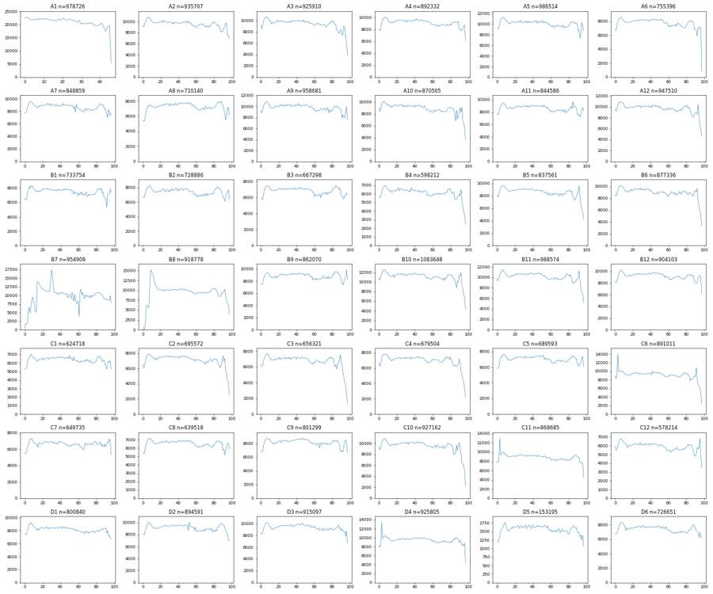
24
tool call · Bash
cd /task; cat > work/sat.py <<'EOF'
import numpy as np, pandas as pd
lay = pd.read_csv('/task/inputs/plate_layout.csv')
cols=['Time','FSC-A','SSC-A','SSC-H','BL1-A','RL3-A','VL1-A','FSC-H']
rows=[]
for w in lay.well:
a = np.load(f'/task/work/npy/{w}.npy')
r=dict(well=w)
for j,c in enumerate(cols[1:],1):
r[c]=round(100*np.mean(a[:,j]>=1048575),3)
r['any']=round(100*np.mean((a[:,1:8]>=1048575).any(1)),3)
rows.append(r)
print(pd.DataFrame(rows).to_string())
EOF
python3 work/sat.py25
tool output
well FSC-A SSC-A SSC-H BL1-A RL3-A VL1-A FSC-H any 0 A1 0.189 1.174 0.026 0.001 0.000 0.000 0.0 1.176 1 A2 0.072 0.500 0.013 0.002 0.000 0.000 0.0 0.503 2 A3 0.048 0.467 0.011 0.002 0.000 0.000 0.0 0.468 3 A4 0.075 0.531 0.016 0.007 0.000 0.000 0.0 0.537 4 A5 0.075 0.612 0.020 0.010 0.000 0.000 0.0 0.619 5 A6 0.032 0.348 0.011 0.011 0.000 0.000 0.0 0.357 6 A7 0.089 0.534 0.009 0.003 0.000 0.000 0.0 0.537 7 A8 0.068 0.441 0.012 0.005 0.000 0.001 0.0 0.447 8 A9 0.319 1.084 0.030 0.002 0.000 0.000 0.0 1.091 9 A10 0.137 0.632 0.019 0.003 0.000 0.000 0.0 0.638 10 A11 0.043 0.379 0.014 0.008 0.000 0.000 0.0 0.385 11 A12 0.093 0.546 0.020 0.011 0.000 0.000 0.0 0.556 12 B1 0.107 0.475 0.010 0.000 0.000 0.000 0.0 0.480 13 B2 0.132 0.533 0.010 0.000 0.000 0.000 0.0 0.537 14 B3 0.065 0.350 0.010 0.000 0.000 0.000 0.0 0.352 15 B4 0.045 0.315 0.010 0.000 0.000 0.000 0.0 0.316 16 B5 0.045 0.412 0.006 0.000 0.000 0.000 0.0 0.413 17 B6 0.052 0.475 0.011 0.000 0.000 0.000 0.0 0.476 18 B7 0.118 0.561 0.009 0.000 0.001 0.000 0.0 0.563 19 B8 0.042 0.373 0.004 0.000 0.000 0.000 0.0 0.375 20 B9 0.055 0.400 0.008 0.000 0.000 0.000 0.0 0.401 21 B10 0.065 0.605 0.013 0.001 0.000 0.000 0.0 0.606 22 B11 0.035 0.438 0.008 0.004 0.000 0.000 0.0 0.441 23 B12 0.029 0.383 0.010 0.012 0.000 0.000 0.0 0.390 24 C1 0.005 0.151 0.003 0.000 0.000 0.000 0.0 0.151 25 C2 0.010 0.196 0.005 0.000 0.000 0.000 0.0 0.196 26 C3 0.040 0.285 0.009 0.000 0.000 0.000 0.0 0.286 27 C4 0.012 0.200 0.005 0.000 0.000 0.000 0.0 0.200 28 C5 0.008 0.185 0.006 0.002 0.001 0.000 0.0 0.186 29 C6 0.015 0.314 0.006 0.003 0.000 0.000 0.0 0.316 30 C7 0.014 0.186 0.007 0.000 0.001 0.000 0.0 0.186 31 C8 0.008 0.236 0.008 0.000 0.000 0.000 0.0 0.236 32 C9 0.041 0.322 0.011 0.000 0.000 0.000 0.0 0.323 33 C10 0.040 0.412 0.012 0.000 0.000 0.000 0.0 0.412 34 C11 0.038 0.343 0.015 0.000 0.000 0.000 0.0 0.344 35 C12 0.021 0.177 0.012 0.000 0.000 0.001 0.0 0.177 36 D1 0.020 0.275 0.005 0.000 0.000 0.000 0.0 0.275 37 D2 0.028 0.326 0.006 0.002 0.000 0.000 0.0 0.328 38 D3 0.073 0.468 0.010 0.000 0.000 0.000 0.0 0.471 39 D4 0.042 0.427 0.008 0.002 0.000 0.000 0.0 0.429 40 D5 0.002 0.076 0.003 0.005 0.000 0.000 0.0 0.079 41 D6 0.006 0.200 0.006 0.002 0.000 0.000 0.0 0.201
27
tool call · Bash
cd /task; cat > work/scatgrid.py <<'EOF'
import numpy as np, pandas as pd, matplotlib, sys; matplotlib.use('Agg'); import matplotlib.pyplot as plt
from matplotlib.colors import LogNorm
lay = pd.read_csv('/task/inputs/plate_layout.csv')
cols=['Time','FSC-A','SSC-A','SSC-H','BL1-A','RL3-A','VL1-A','FSC-H']
xi, yi = cols.index(sys.argv[1]), cols.index(sys.argv[2]); out=sys.argv[3]
xr = [float(v) for v in sys.argv[4].split(',')]; yr=[float(v) for v in sys.argv[5].split(',')]
fig, axs = plt.subplots(7,6, figsize=(24,26)); axs=axs.ravel()
for i,w in enumerate(lay.well):
a = np.load(f'/task/work/npy/{w}.npy')
axs[i].hist2d(a[:,xi], a[:,yi], bins=200, range=[xr,yr], norm=LogNorm(), cmap='jet')
axs[i].set_title(w)
plt.tight_layout(); plt.savefig(out, dpi=45)
EOF
python3 work/scatgrid.py FSC-A SSC-A work/fsc_ssc.png 0,1050000 0,105000028
tool output
(Bash completed with no output)
29
tool call · Read
{
"file_path": "/task/work/fsc_ssc.png"
}30
tool output
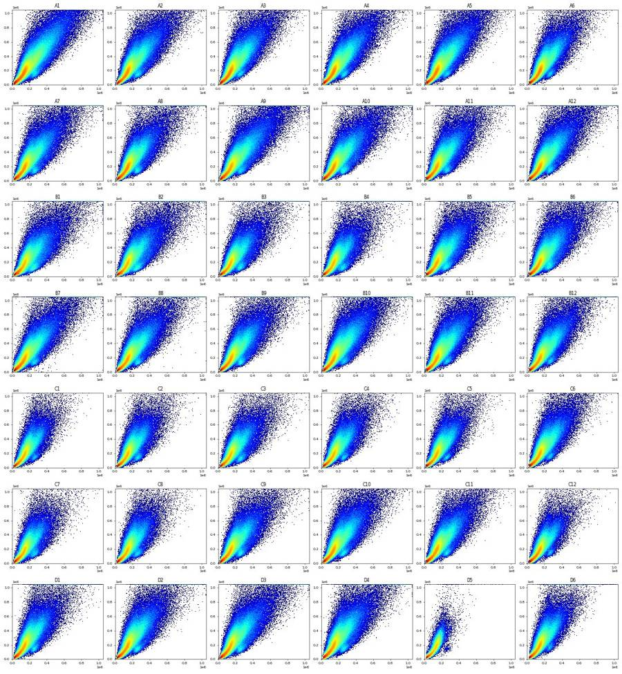
32
agent
Scatter profiles look consistent across wells except D5 (sparse). Now zooming into the low-scatter region to place the Cells polygon.
33
tool call · Bash
cd /task; cat > work/pool.py <<'EOF'
import numpy as np, pandas as pd, matplotlib; matplotlib.use('Agg'); import matplotlib.pyplot as plt
from matplotlib.colors import LogNorm
cols=['Time','FSC-A','SSC-A','SSC-H','BL1-A','RL3-A','VL1-A','FSC-H']
wells=['A2','B9','C5','D5']
fig, axs = plt.subplots(2,4, figsize=(28,13))
for i,w in enumerate(wells):
a = np.load(f'/task/work/npy/{w}.npy')
axs[0,i].hist2d(a[:,1], a[:,2], bins=300, range=[[0,600000],[0,600000]], norm=LogNorm(), cmap='jet'); axs[0,i].set_title(w+' lin zoom'); axs[0,i].grid(True)
m=(a[:,1]>0)&(a[:,2]>0)
axs[1,i].hist2d(np.log10(a[m,1]), np.log10(a[m,2]), bins=300, range=[[3.5,6.1],[2.5,6.1]], norm=LogNorm(), cmap='jet'); axs[1,i].set_title(w+' log10'); axs[1,i].grid(True)
plt.tight_layout(); plt.savefig('/task/work/fsc_ssc_zoom.png', dpi=50)
EOF
python3 work/pool.py34
tool output
(Bash completed with no output)
35
tool call · Read
{
"file_path": "/task/work/fsc_ssc_zoom.png"
}36
tool output
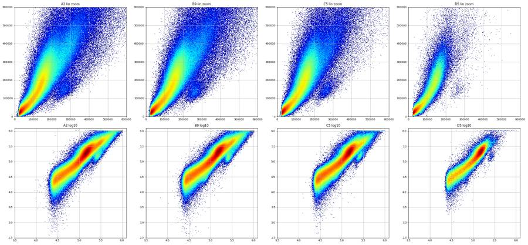
38
tool call · Bash
cd /task; python3 -c " import flowkit as fk, inspect print(inspect.signature(fk.transforms.LogicleTransform.__init__)) print(inspect.signature(fk.Dimension.__init__)) print(inspect.signature(fk.gates.PolygonGate.__init__)) print(inspect.signature(fk.gates.RectangleGate.__init__)) print(inspect.signature(fk.GatingStrategy.add_gate)) print(inspect.signature(fk.GatingStrategy.add_transform)) print(inspect.signature(fk.Sample.__init__)) "
39
tool output
(self, param_t, param_w, param_m, param_a) (self, dimension_id, compensation_ref='uncompensated', transformation_ref=None, range_min=None, range_max=None) (self, gate_name, dimensions, vertices, use_complement=False) (self, gate_name, dimensions, use_complement=False) (self, gate, gate_path, sample_id=None) (self, transform_id, transform) (self, fcs_path_or_data, sample_id=None, filename_as_id=False, channel_labels=None, compensation=None, null_channel_list=None, ignore_offset_error=False, ignore_offset_discrepancy=False, use_header_offsets=False, cache_original_events=False, subsample=10000)
41
tool call · Bash
cd /task; cat > work/singlets_look.py <<'EOF'
import numpy as np, pandas as pd, matplotlib; matplotlib.use('Agg'); import matplotlib.pyplot as plt
from matplotlib.colors import LogNorm
wells=['A1','A2','B9','C5','D5','B7']
fig, axs = plt.subplots(2,6, figsize=(36,12))
for i,w in enumerate(wells):
a = np.load(f'/task/work/npy/{w}.npy')
m = (a[:,1]>60000)
axs[0,i].hist2d(a[m,3], a[m,2], bins=300, range=[[0,1050000],[0,1050000]], norm=LogNorm(), cmap='jet'); axs[0,i].set_title(w+' SSC-H(x) vs SSC-A(y) lin'); axs[0,i].grid(True)
m2 = m&(a[:,2]>0)&(a[:,3]>0)
axs[1,i].hist2d(np.log10(a[m2,3]), np.log10(a[m2,2]), bins=300, range=[[3.5,6.1],[3.5,6.1]], norm=LogNorm(), cmap='jet'); axs[1,i].set_title(w+' log'); axs[1,i].grid(True)
axs[1,i].plot([3.5,6.1],[3.5,6.1],'k-',lw=0.5)
plt.tight_layout(); plt.savefig('/task/work/singlets_look.png', dpi=40)
EOF
python3 work/singlets_look.py42
tool output
(Bash completed with no output)
43
tool call · Read
{
"file_path": "/task/work/singlets_look.png"
}44
tool output
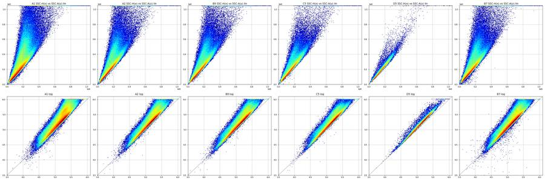
46
tool call · Bash
cd /task; cat > work/ratio.py <<'EOF'
import numpy as np, pandas as pd, matplotlib; matplotlib.use('Agg'); import matplotlib.pyplot as plt
lay = pd.read_csv('/task/inputs/plate_layout.csv')
fig, axs = plt.subplots(1,2, figsize=(20,7))
bins=np.linspace(0.6,3,241)
for w in lay.well:
a = np.load(f'/task/work/npy/{w}.npy')
m = (a[:,1]>80000)&(a[:,3]>20000)&(a[:,2]<1048575)
r = a[m,2]/a[m,3]
h,_=np.histogram(r,bins,density=True)
axs[0].plot(bins[:-1],h,lw=0.7,label=w, color='r' if w in('D5','A1') else None)
# ratio vs SSC-H
print()
axs[0].set_xlabel('SSC-A/SSC-H'); axs[0].grid(True)
a=np.load('/task/work/npy/B9.npy'); m=(a[:,1]>80000)&(a[:,3]>20000)&(a[:,2]<1048575)
from matplotlib.colors import LogNorm
axs[1].hist2d(np.log10(a[m,3]), a[m,2]/a[m,3], bins=300, range=[[4,6.05],[0.6,3]], norm=LogNorm(), cmap='jet'); axs[1].grid(True)
plt.savefig('/task/work/ratio.png', dpi=50)
EOF
python3 work/ratio.py47
tool output
(Bash completed with no output)
48
tool call · Read
{
"file_path": "/task/work/ratio.png"
}49
tool output
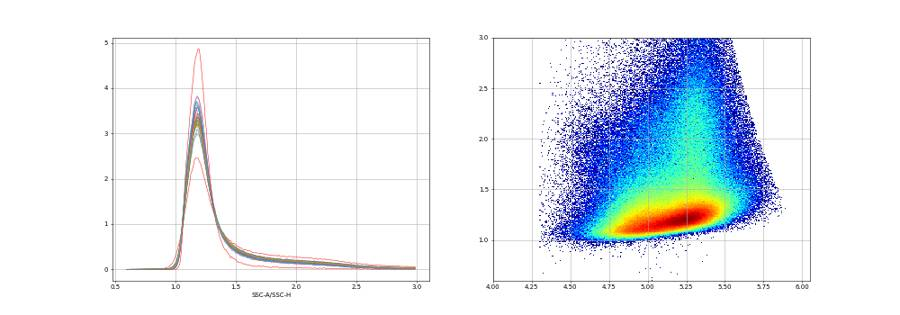
51
agent
Singlet ratio (SSC-A/SSC-H) peaks at ~1.17 consistently. Now checking fluorescence ranges for the Live and GFP cut-offs.
52
tool call · Bash
cd /task; python3 -c "
import numpy as np
for w in ['A2','B1','B2','B4','C7','B9','D5','A1']:
a=np.load(f'/task/work/npy/{w}.npy')
m=(a[:,1]>80000)&(a[:,2]<1048575)&(a[:,2]/np.maximum(a[:,3],1)<1.45)
print(w, m.sum(), 'RL3', np.percentile(a[m,5],[1,5,25,50,75,90,95,99]).round(0), 'BL1', np.percentile(a[m,4],[1,5,25,50,75,90,95,99]).round(0))
"53
tool output
A2 462013 RL3 [-5.0000e+01 3.3600e+02 3.2880e+03 6.9330e+03 1.2715e+04 2.1483e+04 2.9836e+04 5.0463e+04] BL1 [-38. 3. 68. 124. 196. 300. 433. 829.] B1 323193 RL3 [ -85. 75. 2647. 8062. 15216. 23970. 31205. 48555.] BL1 [-37. 4. 73. 133. 209. 316. 454. 842.] B2 322977 RL3 [ -101. 89. 2782. 8845. 18429. 29672. 38823. 61667.] BL1 [-32. 9. 78. 137. 209. 308. 427. 802.] B4 285463 RL3 [-4.9000e+01 1.8800e+02 3.2960e+03 8.9790e+03 1.7864e+04 2.8936e+04 3.7939e+04 5.9278e+04] BL1 [-31. 10. 79. 138. 212. 333. 495. 880.] C7 292813 RL3 [9.0000e+00 5.9100e+02 5.6540e+03 1.2568e+04 2.1526e+04 3.3156e+04 4.1913e+04 6.2025e+04] BL1 [-34. 6. 72. 130. 204. 317. 464. 840.] B9 415090 RL3 [2.0000e+00 5.1200e+02 4.2720e+03 1.0468e+04 1.8843e+04 2.9946e+04 3.9029e+04 6.0284e+04] BL1 [-32. 9. 75. 135. 211. 313. 433. 825.] D5 84562 RL3 [ 182. 1455. 7920. 15041. 26800. 46467. 60982. 91614.] BL1 [-37. 3. 67. 124. 198. 312. 453. 818.] A1 421080 RL3 [ -204. 142. 2196. 6025. 11345. 18137. 23929. 39350.] BL1 [-42. 1. 69. 129. 209. 325. 472. 895.]
55
tool call · Bash
cd /task; cat > work/fluorgrid.py <<'EOF'
import numpy as np, pandas as pd, matplotlib, sys; matplotlib.use('Agg'); import matplotlib.pyplot as plt
from matplotlib.colors import LogNorm
import flowkit as fk
lay = pd.read_csv('/task/inputs/plate_layout.csv')
W=float(sys.argv[3]) if len(sys.argv)>3 else 1.0
lt = fk.transforms.LogicleTransform(param_t=1048576, param_w=W, param_m=6.0, param_a=0)
ch = int(sys.argv[1]); out=sys.argv[2]
fig, axs = plt.subplots(7,6, figsize=(24,26)); axs=axs.ravel()
for i,w in enumerate(lay.well):
a = np.load(f'/task/work/npy/{w}.npy')
m=(a[:,1]>80000)&(a[:,2]<1048575)&(a[:,2]/np.maximum(a[:,3],1)<1.45)
x = lt.apply(a[m,ch].astype(float).reshape(-1,1)).ravel()
axs[i].hist2d(x, a[m,2], bins=200, range=[[0,1],[0,1050000]], norm=LogNorm(), cmap='jet'); axs[i].set_title(w); axs[i].grid(True)
plt.tight_layout(); plt.savefig(out, dpi=45)
EOF
python3 work/fluorgrid.py 5 work/rl3_grid.png; python3 work/fluorgrid.py 4 work/bl1_grid.png56
tool output
(Bash completed with no output)
57
tool call · Read
{
"file_path": "/task/work/rl3_grid.png"
}58
tool output
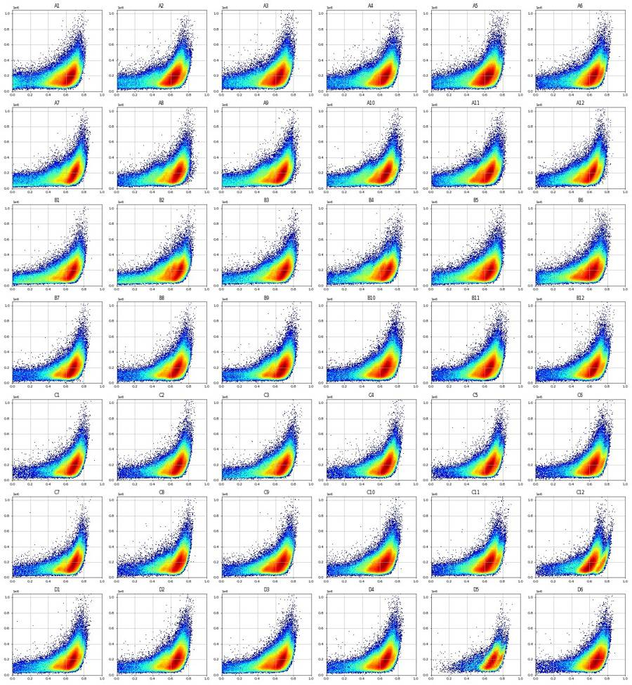
60
tool call · Bash
cd /task; cat > work/rl3hist.py <<'EOF'
import numpy as np, pandas as pd, matplotlib; matplotlib.use('Agg'); import matplotlib.pyplot as plt
from matplotlib.colors import LogNorm
lay = pd.read_csv('/task/inputs/plate_layout.csv')
fig, axs = plt.subplots(2,3, figsize=(30,14)); axs=axs.ravel()
bins=np.linspace(1,6.1,256)
for w in lay.well:
a = np.load(f'/task/work/npy/{w}.npy')
m=(a[:,1]>80000)&(a[:,2]<1048575)&(a[:,2]/np.maximum(a[:,3],1)<1.45)
x=np.log10(np.maximum(a[m,5],10))
h,_=np.histogram(x,bins,density=True); axs[0].plot(bins[:-1],h,lw=0.7, color='r' if w in ('C12','D5') else None)
axs[0].set_title('log10 RL3-A, rough singlets'); axs[0].grid(True)
for k,w in enumerate(['A2','B9','C12','D5','C5']):
a = np.load(f'/task/work/npy/{w}.npy')
m=(a[:,1]>20000)&(a[:,2]<1048575)&(a[:,2]/np.maximum(a[:,3],1)<1.45)
x=np.log10(np.maximum(a[m,5],10)); y=np.log10(np.maximum(a[m,1],1000))
axs[k+1].hist2d(x,y,bins=300,range=[[1,6.1],[4,6.05]],norm=LogNorm(),cmap='jet'); axs[k+1].set_title(w+' log RL3-A (x) vs log FSC-A (y), singlet-ish'); axs[k+1].grid(True)
plt.tight_layout(); plt.savefig('/task/work/rl3_hist.png', dpi=40)
EOF
python3 work/rl3hist.py61
tool output
(Bash completed with no output)
62
tool call · Read
{
"file_path": "/task/work/rl3_hist.png"
}63
tool output
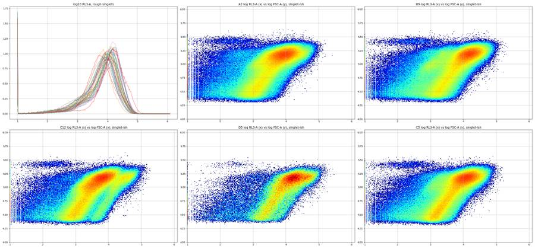
65
tool call · Bash
cd /task; cat > work/rl3b.py <<'EOF'
import numpy as np, pandas as pd, matplotlib; matplotlib.use('Agg'); import matplotlib.pyplot as plt
from matplotlib.colors import LogNorm
fig, axs = plt.subplots(3,4, figsize=(32,21))
L=lambda v: np.log10(np.maximum(v,10))
for k,w in enumerate(['A2','C12','D5','B4']):
a = np.load(f'/task/work/npy/{w}.npy')
axs[0,k].hist2d(L(a[:,5]),L(a[:,1]),bins=300,range=[[1,6.1],[4,6.05]],norm=LogNorm(),cmap='jet'); axs[0,k].set_title(w+' ALL: log RL3 vs log FSC-A'); axs[0,k].grid(True)
axs[1,k].hist2d(L(a[:,5]),L(a[:,2]),bins=300,range=[[1,6.1],[3,6.05]],norm=LogNorm(),cmap='jet'); axs[1,k].set_title(w+' ALL: log RL3 vs log SSC-A'); axs[1,k].grid(True)
m=(a[:,1]>80000)
axs[2,k].hist2d(L(a[m,5]),L(a[m,4]),bins=300,range=[[1,6.1],[1,6.1]],norm=LogNorm(),cmap='jet'); axs[2,k].set_title(w+' FSC>80k: log RL3 vs log BL1'); axs[2,k].grid(True)
plt.tight_layout(); plt.savefig('/task/work/rl3_b.png', dpi=35)
EOF
python3 work/rl3b.py66
tool output
(Bash completed with no output)
67
tool call · Read
{
"file_path": "/task/work/rl3_b.png"
}68
tool output
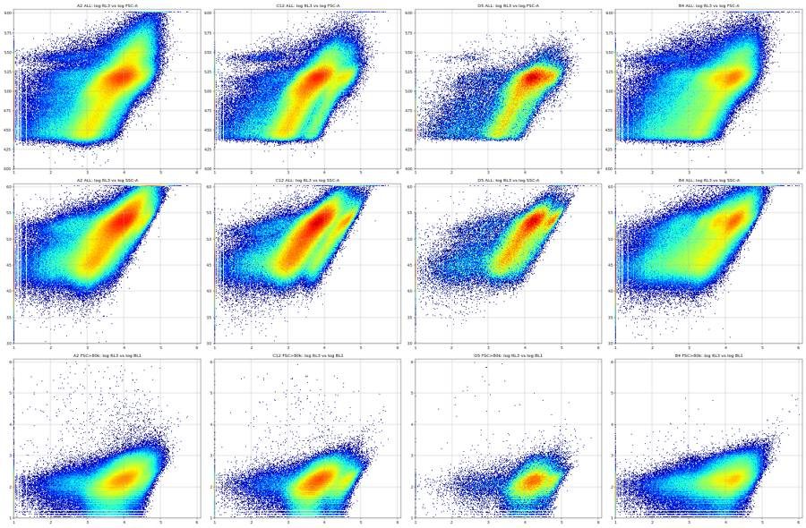
70
agent
Using GFP-bright cells as an internal reference for where live cells sit on Zombie NIR (dead cells leak GFP), since there are no single-stain controls.
71
tool call · Bash
cd /task; cat > work/rl3gfp.py <<'EOF'
import numpy as np, pandas as pd, matplotlib; matplotlib.use('Agg'); import matplotlib.pyplot as plt
lay = pd.read_csv('/task/inputs/plate_layout.csv')
fig, axs = plt.subplots(7,6, figsize=(30,28)); axs=axs.ravel()
bins=np.linspace(1,6,201)
L=lambda v: np.log10(np.maximum(v,10))
for i,w in enumerate(lay.well):
a = np.load(f'/task/work/npy/{w}.npy')
m=(a[:,1]>60000)&(a[:,2]<1048575)&(a[:,2]/np.maximum(a[:,3],1)<1.45)&(a[:,2]/np.maximum(a[:,3],1)>0.95)
g = m&(a[:,4]>5000)
h,_=np.histogram(L(a[m,5]),bins,density=True); hg,_=np.histogram(L(a[g,5]),bins,density=True)
axs[i].plot(bins[:-1],h,'k',lw=1); axs[i].plot(bins[:-1],hg,'g',lw=1); axs[i].set_title(f'{w} singlets {m.sum()} GFP>5000: {g.sum()}'); axs[i].grid(True)
plt.tight_layout(); plt.savefig('/task/work/rl3_gfp.png', dpi=35)
EOF
python3 work/rl3gfp.py72
tool output
(Bash completed with no output)
73
tool call · Read
{
"file_path": "/task/work/rl3_gfp.png"
}74
tool output
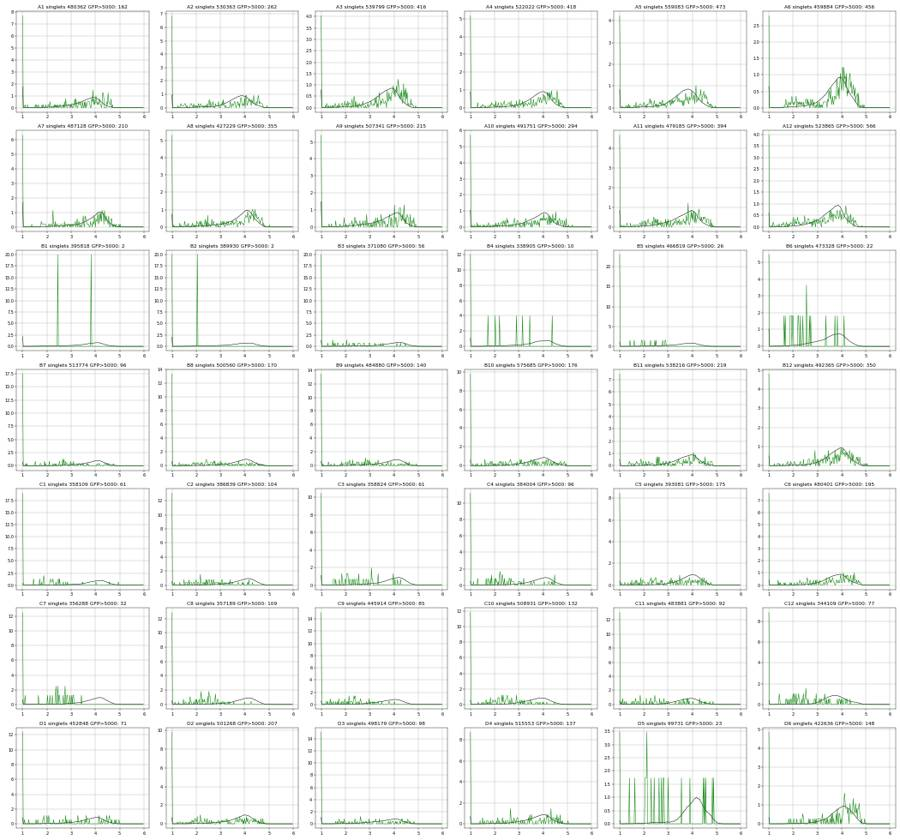
76
agent
GFP-bright events are rare plate-wide (tens to hundreds per ~500k singlets). Next I'm looking for the live/dead valley in the Zombie NIR histograms.
77
tool call · Bash
cd /task; cat > work/rl3valley.py <<'EOF'
import numpy as np, pandas as pd, matplotlib; matplotlib.use('Agg'); import matplotlib.pyplot as plt
from scipy.ndimage import gaussian_filter1d
from scipy.signal import argrelextrema
lay = pd.read_csv('/task/inputs/plate_layout.csv')
fig, axs = plt.subplots(7,6, figsize=(30,28)); axs=axs.ravel()
bins=np.linspace(2,6,401); c=(bins[:-1]+bins[1:])/2
for i,w in enumerate(lay.well):
a = np.load(f'/task/work/npy/{w}.npy')
r=a[:,2]/np.maximum(a[:,3],1)
m=(a[:,1]>60000)&(a[:,2]<1048575)&(r<1.45)&(r>0.95)
h,_=np.histogram(np.log10(np.maximum(a[m,5],1)),bins)
hs=gaussian_filter1d(h.astype(float),3)
mins=[round(c[j],2) for j in argrelextrema(hs,np.less,order=10)[0] if 3<c[j]<5.5]
maxs=[round(c[j],2) for j in argrelextrema(hs,np.greater,order=10)[0] if 2.5<c[j]<5.5]
axs[i].semilogy(c,hs,'k'); axs[i].set_title(f'{w} max{maxs} min{mins}'); axs[i].grid(True); axs[i].set_ylim(10,None)
print(w, 'peaks', maxs, 'valleys', mins, 'frac>10^4.4: %.3f'%np.mean(a[m,5]>10**4.4), 'frac<10^3: %.3f'%np.mean(a[m,5]<1000))
plt.tight_layout(); plt.savefig('/task/work/rl3_valley.png', dpi=35)
EOF
python3 work/rl3valley.py78
tool output
A1 peaks [3.9, 5.34] valleys [5.26] frac>10^4.4: 0.038 frac<10^3: 0.178 A2 peaks [3.88, 5.38] valleys [5.28] frac>10^4.4: 0.064 frac<10^3: 0.111 A3 peaks [3.92] valleys [] frac>10^4.4: 0.043 frac<10^3: 0.142 A4 peaks [4.0] valleys [] frac>10^4.4: 0.071 frac<10^3: 0.115 A5 peaks [3.84] valleys [] frac>10^4.4: 0.047 frac<10^3: 0.127 A6 peaks [3.96] valleys [] frac>10^4.4: 0.072 frac<10^3: 0.099 A7 peaks [4.18, 5.42] valleys [5.36] frac>10^4.4: 0.133 frac<10^3: 0.136 A8 peaks [4.12] valleys [] frac>10^4.4: 0.113 frac<10^3: 0.128 A9 peaks [4.16] valleys [] frac>10^4.4: 0.086 frac<10^3: 0.173 A10 peaks [4.08] valleys [] frac>10^4.4: 0.083 frac<10^3: 0.142 A11 peaks [3.97] valleys [] frac>10^4.4: 0.052 frac<10^3: 0.172 A12 peaks [3.86] valleys [] frac>10^4.4: 0.022 frac<10^3: 0.164 B1 peaks [4.1, 5.34, 5.48] valleys [5.28] frac>10^4.4: 0.073 frac<10^3: 0.212 B2 peaks [4.23] valleys [] frac>10^4.4: 0.120 frac<10^3: 0.193 B3 peaks [4.26] valleys [] frac>10^4.4: 0.168 frac<10^3: 0.135 B4 peaks [4.16] valleys [] frac>10^4.4: 0.115 frac<10^3: 0.160 B5 peaks [4.0] valleys [] frac>10^4.4: 0.048 frac<10^3: 0.184 B6 peaks [3.9] valleys [] frac>10^4.4: 0.045 frac<10^3: 0.209 B7 peaks [4.1] valleys [] frac>10^4.4: 0.112 frac<10^3: 0.096 B8 peaks [4.08] valleys [] frac>10^4.4: 0.107 frac<10^3: 0.108 B9 peaks [4.14] valleys [] frac>10^4.4: 0.127 frac<10^3: 0.116 B10 peaks [4.04] valleys [] frac>10^4.4: 0.107 frac<10^3: 0.108 B11 peaks [3.99] valleys [5.32, 5.48] frac>10^4.4: 0.066 frac<10^3: 0.113 B12 peaks [4.0] valleys [] frac>10^4.4: 0.077 frac<10^3: 0.094 C1 peaks [4.24] valleys [5.44] frac>10^4.4: 0.178 frac<10^3: 0.066 C2 peaks [4.18] valleys [] frac>10^4.4: 0.149 frac<10^3: 0.087 C3 peaks [4.22] valleys [5.48] frac>10^4.4: 0.159 frac<10^3: 0.128 C4 peaks [4.12] valleys [] frac>10^4.4: 0.118 frac<10^3: 0.089 C5 peaks [4.04] valleys [] frac>10^4.4: 0.094 frac<10^3: 0.080 C6 peaks [3.94] valleys [] frac>10^4.4: 0.074 frac<10^3: 0.089 C7 peaks [4.2] valleys [] frac>10^4.4: 0.155 frac<10^3: 0.097 C8 peaks [4.16] valleys [] frac>10^4.4: 0.157 frac<10^3: 0.098 C9 peaks [4.07] valleys [] frac>10^4.4: 0.090 frac<10^3: 0.128 C10 peaks [3.97, 5.48] valleys [] frac>10^4.4: 0.071 frac<10^3: 0.119 C11 peaks [3.99] valleys [] frac>10^4.4: 0.081 frac<10^3: 0.101 C12 peaks [3.72] valleys [] frac>10^4.4: 0.087 frac<10^3: 0.084 D1 peaks [4.1] valleys [] frac>10^4.4: 0.099 frac<10^3: 0.122 D2 peaks [4.04] valleys [] frac>10^4.4: 0.084 frac<10^3: 0.119 D3 peaks [4.06] valleys [] frac>10^4.4: 0.079 frac<10^3: 0.169 D4 peaks [4.04] valleys [] frac>10^4.4: 0.082 frac<10^3: 0.124 D5 peaks [2.78, 2.97, 4.18] valleys [3.04] frac>10^4.4: 0.235 frac<10^3: 0.058 D6 peaks [4.12] valleys [] frac>10^4.4: 0.158 frac<10^3: 0.061
79
tool call · Read
{
"file_path": "/task/work/rl3_valley.png"
}80
tool output
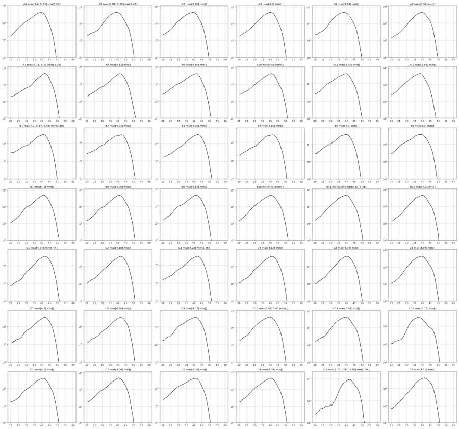
82
agent
The Zombie NIR distribution is one large peak at ~10^4 with a dim tail and no bright population above it. Checking on a logicle scale, where the dim/negative events form their own peak.
83
tool call · Bash
cd /task; cat > work/rl3logicle.py <<'EOF'
import numpy as np, pandas as pd, matplotlib; matplotlib.use('Agg'); import matplotlib.pyplot as plt
from scipy.ndimage import gaussian_filter1d
import flowkit as fk
lay = pd.read_csv('/task/inputs/plate_layout.csv')
fig, axs = plt.subplots(2,2, figsize=(26,16)); axs=axs.ravel()
for k,W in enumerate([0.5,1.0,1.5,2.0]):
lt = fk.transforms.LogicleTransform(param_t=1048576, param_w=W, param_m=6.0, param_a=0)
bins=np.linspace(0,1,301); c=(bins[:-1]+bins[1:])/2
for w in lay.well:
a = np.load(f'/task/work/npy/{w}.npy')
r=a[:,2]/np.maximum(a[:,3],1)
m=(a[:,1]>60000)&(a[:,2]<1048575)&(r<1.45)&(r>0.95)
x=lt.apply(a[m,5].astype(float).reshape(-1,1)).ravel()
h,_=np.histogram(x,bins,density=True)
axs[k].plot(c,gaussian_filter1d(h,1.5),lw=0.7,color='r' if w in('D5','A1') else None)
ticks=[-1000,0,100,1000,1e4,1e5,1e6]
axs[k].set_xticks(lt.apply(np.array(ticks,float).reshape(-1,1)).ravel()); axs[k].set_xticklabels([str(int(t)) for t in ticks])
axs[k].set_title(f'RL3-A logicle W={W}'); axs[k].grid(True)
plt.tight_layout(); plt.savefig('/task/work/rl3_logicle.png', dpi=40)
EOF
python3 work/rl3logicle.py84
tool output
(Bash completed with no output)
85
tool call · Read
{
"file_path": "/task/work/rl3_logicle.png"
}86
tool output
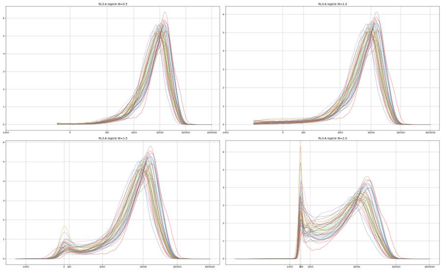
88
agent
A small Zombie-negative peak near 0 and a valley at ~100–300 appear on the logicle scale. Checking whether GFP+ cells, which should mostly be live, fall in that dim peak.
89
tool call · Bash
cd /task; cat > work/gfp_rl3_2d.py <<'EOF'
import numpy as np, pandas as pd, matplotlib; matplotlib.use('Agg'); import matplotlib.pyplot as plt
from matplotlib.colors import LogNorm
import flowkit as fk
lay = pd.read_csv('/task/inputs/plate_layout.csv')
lt = fk.transforms.LogicleTransform(param_t=1048576, param_w=1.5, param_m=6.0, param_a=0)
T=lambda v: lt.apply(np.asarray(v,float).reshape(-1,1)).ravel()
groups={'A1-A6':lay.well[0:6],'A7-A12':lay.well[6:12],'B1-B6':lay.well[12:18],'B7-B12':lay.well[18:24],'C1-C6':lay.well[24:30],'C7-C12':lay.well[30:36],'D1-D6':lay.well[36:42]}
fig, axs = plt.subplots(2,4, figsize=(32,16)); axs=axs.ravel()
ticks=[-1000,0,100,1000,1e4,1e5,1e6]; tt=T(ticks)
for k,(g,ws) in enumerate(groups.items()):
X=[];Y=[]
for w in ws:
a = np.load(f'/task/work/npy/{w}.npy'); r=a[:,2]/np.maximum(a[:,3],1)
m=(a[:,1]>60000)&(a[:,2]<1048575)&(r<1.45)&(r>0.95)
X.append(a[m,5]); Y.append(a[m,4])
X=np.concatenate(X); Y=np.concatenate(Y)
axs[k].hist2d(T(X),T(Y),bins=300,range=[[0,1],[0,1]],norm=LogNorm(),cmap='jet'); axs[k].set_title(g+' x=RL3 y=BL1 logicle W1.5')
axs[k].set_xticks(tt); axs[k].set_xticklabels([str(int(t)) for t in ticks]); axs[k].set_yticks(tt); axs[k].set_yticklabels([str(int(t)) for t in ticks]); axs[k].grid(True)
for thr in [2000,5000,20000]:
g_=Y>thr; print(g, thr, 'nGFP',g_.sum(), 'frac RL3<300 among GFP+ %.2f vs all %.2f'%(np.mean(X[g_]<300), np.mean(X<300)))
plt.tight_layout(); plt.savefig('/task/work/gfp_rl3_2d.png', dpi=35)
EOF
python3 work/gfp_rl3_2d.py90
tool output
A1-A6 2000 nGFP 4653 frac RL3<300 among GFP+ 0.17 vs all 0.06 A1-A6 5000 nGFP 2187 frac RL3<300 among GFP+ 0.25 vs all 0.06 A1-A6 20000 nGFP 730 frac RL3<300 among GFP+ 0.42 vs all 0.06 A7-A12 2000 nGFP 4215 frac RL3<300 among GFP+ 0.18 vs all 0.08 A7-A12 5000 nGFP 2034 frac RL3<300 among GFP+ 0.27 vs all 0.08 A7-A12 20000 nGFP 729 frac RL3<300 among GFP+ 0.46 vs all 0.08 B1-B6 2000 nGFP 482 frac RL3<300 among GFP+ 0.57 vs all 0.10 B1-B6 5000 nGFP 118 frac RL3<300 among GFP+ 0.74 vs all 0.10 B1-B6 20000 nGFP 13 frac RL3<300 among GFP+ 0.77 vs all 0.10 B7-B12 2000 nGFP 2765 frac RL3<300 among GFP+ 0.28 vs all 0.04 B7-B12 5000 nGFP 1151 frac RL3<300 among GFP+ 0.40 vs all 0.04 B7-B12 20000 nGFP 364 frac RL3<300 among GFP+ 0.53 vs all 0.04 C1-C6 2000 nGFP 1511 frac RL3<300 among GFP+ 0.40 vs all 0.04 C1-C6 5000 nGFP 692 frac RL3<300 among GFP+ 0.52 vs all 0.04 C1-C6 20000 nGFP 200 frac RL3<300 among GFP+ 0.57 vs all 0.04 C7-C12 2000 nGFP 1254 frac RL3<300 among GFP+ 0.60 vs all 0.05 C7-C12 5000 nGFP 527 frac RL3<300 among GFP+ 0.66 vs all 0.05 C7-C12 20000 nGFP 132 frac RL3<300 among GFP+ 0.64 vs all 0.05 D1-D6 2000 nGFP 1694 frac RL3<300 among GFP+ 0.24 vs all 0.05 D1-D6 5000 nGFP 684 frac RL3<300 among GFP+ 0.41 vs all 0.05 D1-D6 20000 nGFP 198 frac RL3<300 among GFP+ 0.63 vs all 0.05
91
tool call · Read
{
"file_path": "/task/work/gfp_rl3_2d.png"
}92
tool output
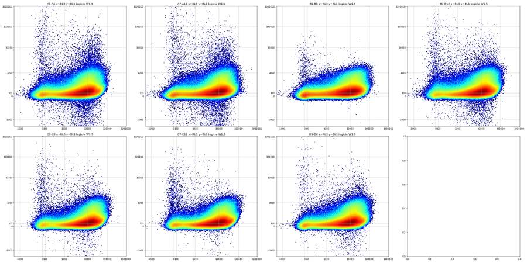
94
thinking
The GFP-bright cells sit almost entirely in the small Zombie-negative peak near RL3 ≈ 0, so that peak is the live population while the large ~10^4 peak is dead. Next I'll measure how far the live peak extends.
95
tool call · Bash
cd /task; cat > work/livespread.py <<'EOF'
import numpy as np, pandas as pd, matplotlib; matplotlib.use('Agg'); import matplotlib.pyplot as plt
lay = pd.read_csv('/task/inputs/plate_layout.csv')
X=[];Y=[];XA=[]
for w in lay.well:
a = np.load(f'/task/work/npy/{w}.npy'); r=a[:,2]/np.maximum(a[:,3],1)
m=(a[:,1]>60000)&(a[:,2]<1048575)&(r<1.45)&(r>0.95)
X.append(a[m,5]); Y.append(a[m,4])
X=np.concatenate(X); Y=np.concatenate(Y)
g=Y>20000
print('GFP>20000 n', g.sum())
print('RL3 percentiles of GFP-bright:', np.percentile(X[g],[5,10,25,40,50,60,75,90]).round(0))
xs=X[g]; near=xs[xs<3000]
print('near-zero cluster (RL3<3000) n',len(near),'pct', np.percentile(near,[5,25,50,75,90,95,98,99]).round(0))
print('exact zeros all:', np.mean(X==0), 'neg:', np.mean(X<0))
fig,axs=plt.subplots(1,2,figsize=(20,7))
b=np.linspace(-1500,6000,301)
axs[0].hist(X[g],b,histtype='step',density=True,label='GFP>20000'); axs[0].hist(X,b,histtype='step',density=True,label='all singlets'); axs[0].hist(X[(Y>2000)],b,histtype='step',density=True,label='GFP>2000'); axs[0].legend(); axs[0].grid(True)
b=np.linspace(-1500,3000,451)
h,_=np.histogram(X,b); axs[1].semilogy(b[:-1],h); axs[1].grid(True); axs[1].set_title('all singlets pooled, linear RL3')
plt.savefig('/task/work/livespread.png',dpi=50)
EOF
python3 work/livespread.py96
tool output
GFP>20000 n 2366 RL3 percentiles of GFP-bright: [-1.480e+02 -8.800e+01 2.000e+01 1.500e+02 3.180e+02 7.360e+02 4.918e+03 2.084e+04] near-zero cluster (RL3<3000) n 1682 pct [-182. -32. 104. 402. 1222. 1958. 2508. 2724.] exact zeros all: 0.00017002557580486844 neg: 0.018998942539345996
97
tool call · Read
{
"file_path": "/task/work/livespread.png"
}98
tool output
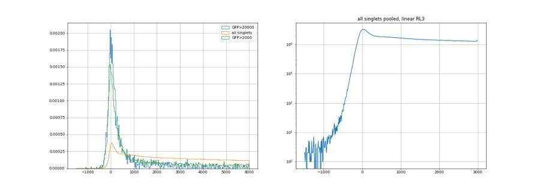
100
tool call · Bash
cd /task; cat > work/valley2.py <<'EOF'
import numpy as np, pandas as pd
from scipy.ndimage import gaussian_filter1d
import flowkit as fk
lay = pd.read_csv('/task/inputs/plate_layout.csv')
res={}
for W in [1.0,1.25,1.5,1.75]:
lt = fk.transforms.LogicleTransform(param_t=1048576, param_w=W, param_m=6.0, param_a=0)
inv = lambda y: lt.inverse(np.asarray(y,float).reshape(-1,1)).ravel()
T = lambda v: lt.apply(np.asarray(v,float).reshape(-1,1)).ravel()
bins=np.linspace(0,1,401); c=(bins[:-1]+bins[1:])/2
lo,hi=T([20,5000])
vals=[]
for w in lay.well:
a = np.load(f'/task/work/npy/{w}.npy'); r=a[:,2]/np.maximum(a[:,3],1)
m=(a[:,1]>60000)&(a[:,2]<1048575)&(r<1.45)&(r>0.95)
h,_=np.histogram(T(a[m,5]),bins); hs=gaussian_filter1d(h.astype(float),2)
sel=(c>lo)&(c<hi)
j=np.argmin(np.where(sel,hs,np.inf)); vals.append(inv([c[j]])[0])
res[W]=np.round(vals)
df=pd.DataFrame(res,index=lay.well); print(df.T.to_string()); print(df.describe())
EOF
python3 work/valley2.py101
tool output
well A1 A2 A3 A4 A5 A6 A7 A8 A9 A10 A11 A12 B1 B2 B3 B4 B5 B6 B7 B8 B9 B10 B11 B12 C1 C2 C3 C4 C5 C6 C7 C8 C9 C10 C11 C12 D1 D2 D3 D4 D5 D6
1.00 32.0 32.0 32.0 30.0 32.0 32.0 32.0 32.0 32.0 32.0 32.0 32.0 32.0 32.0 32.0 32.0 34.0 30.0 30.0 30.0 32.0 32.0 32.0 32.0 32.0 20.0 32.0 32.0 30.0 32.0 32.0 32.0 32.0 32.0 30.0 20.0 32.0 32.0 32.0 34.0 28.0 34.0
1.25 43.0 215.0 151.0 141.0 151.0 209.0 187.0 181.0 171.0 181.0 181.0 22.0 198.0 258.0 176.0 181.0 146.0 117.0 68.0 22.0 22.0 43.0 22.0 26.0 22.0 22.0 264.0 22.0 22.0 77.0 176.0 22.0 22.0 22.0 22.0 264.0 176.0 176.0 176.0 141.0 22.0 34.0
1.50 61.0 461.0 315.0 425.0 325.0 369.0 414.0 380.0 391.0 358.0 294.0 253.0 402.0 391.0 336.0 391.0 510.0 194.0 263.0 253.0 263.0 213.0 253.0 347.0 380.0 336.0 391.0 336.0 391.0 253.0 473.0 449.0 325.0 325.0 391.0 402.0 274.0 274.0 263.0 274.0 23.0 274.0
1.75 1076.0 528.0 355.0 484.0 419.0 484.0 1130.0 1157.0 1103.0 662.0 973.0 685.0 1185.0 1103.0 948.0 1130.0 923.0 1157.0 333.0 355.0 355.0 333.0 312.0 398.0 484.0 441.0 731.0 463.0 506.0 312.0 484.0 573.0 376.0 376.0 419.0 506.0 355.0 948.0 948.0 376.0 1130.0 355.0
1.00 1.25 1.50 1.75
count 42.000000 42.000000 42.000000 42.000000
mean 31.190476 114.142857 326.095238 651.690476
std 2.760683 82.748980 97.546189 314.204414
min 20.000000 22.000000 23.000000 312.000000
25% 32.000000 22.000000 265.750000 376.000000
50% 32.000000 141.000000 336.000000 495.000000
75% 32.000000 179.750000 391.000000 948.000000
max 34.000000 264.000000 510.000000 1185.000000103
tool call · Bash
cd /task; cat > work/rl3ssc.py <<'EOF'
import numpy as np, pandas as pd, matplotlib; matplotlib.use('Agg'); import matplotlib.pyplot as plt
from matplotlib.colors import LogNorm
import flowkit as fk
lt = fk.transforms.LogicleTransform(param_t=1048576, param_w=1.5, param_m=6.0, param_a=0)
T=lambda v: lt.apply(np.asarray(v,float).reshape(-1,1)).ravel()
ticks=[-1000,0,100,300,1000,1e4,1e5,1e6]; tt=T(ticks)
wells=['A2','B2','B9','C5','C12','D2','D5','A1']
fig, axs = plt.subplots(2,4, figsize=(32,16)); axs=axs.ravel()
for k,w in enumerate(wells):
a = np.load(f'/task/work/npy/{w}.npy'); r=a[:,2]/np.maximum(a[:,3],1)
m=(a[:,1]>60000)&(a[:,2]<1048575)&(r<1.45)&(r>0.95)
axs[k].hist2d(T(a[m,5]),a[m,2],bins=250,range=[[0.1,1],[0,1050000]],norm=LogNorm(),cmap='jet')
g=m&(a[:,4]>20000); axs[k].scatter(T(a[g,5]),a[g,2],s=4,c='k')
for v in [300,500,1000]: axs[k].axvline(T([v])[0],color='m',lw=0.8)
axs[k].set_xticks(tt); axs[k].set_xticklabels([str(int(t)) for t in ticks]); axs[k].set_title(w+' RL3 logicle(W1.5) vs SSC-A; black=GFP>20000; lines 300/500/1000')
plt.tight_layout(); plt.savefig('/task/work/rl3_ssc.png', dpi=35)
EOF
python3 work/rl3ssc.py104
tool output
(Bash completed with no output)
105
tool call · Read
{
"file_path": "/task/work/rl3_ssc.png"
}106
tool output
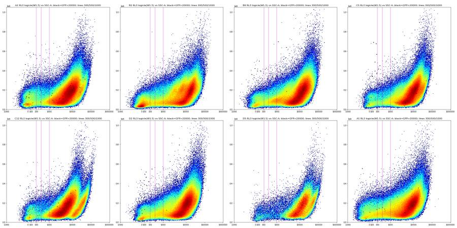
108
tool call · Bash
cd /task; cat > work/mirror.py <<'EOF'
import numpy as np, pandas as pd
from scipy.ndimage import gaussian_filter1d
lay = pd.read_csv('/task/inputs/plate_layout.csv')
rows=[]
for w in lay.well:
a = np.load(f'/task/work/npy/{w}.npy'); r=a[:,2]/np.maximum(a[:,3],1)
m=(a[:,1]>60000)&(a[:,2]<1048575)&(r<1.45)&(r>0.95)
x=a[m,5]
b=np.arange(-1500,3001,10); c=b[:-1]+5
h,_=np.histogram(x,b); hs=gaussian_filter1d(h.astype(float),2)
sel=(c>-200)&(c<300); j=np.argmax(np.where(sel,hs,-1)); mode=c[j]
left=x[(x<mode)]; left=left[left>-3000]
d=mode-left # distances below mode
p99=np.percentile(d,99); p995=np.percentile(d,99.5)
nleft=len(left); nlive_est=2*nleft
rows.append(dict(well=w, mode=mode, edge99=mode+p99, edge995=mode+p995, live_est=nlive_est, n_lt300=(x<300).sum(), n_lt400=(x<400).sum(), n_lt500=(x<500).sum(),n_lt1000=(x<1000).sum(), singlets=len(x)))
df=pd.DataFrame(rows); print(df.to_string()); print(df[['mode','edge99','edge995']].describe())
EOF
python3 work/mirror.py109
tool output
well mode edge99 edge995 live_est n_lt300 n_lt400 n_lt500 n_lt1000 singlets
0 A1 -55 420.26 582.520 31950 41550 48553 55384 85548 480362
1 A2 15 327.38 371.380 26326 32339 36482 40161 58728 530363
2 A3 35 307.00 343.285 25888 33541 39455 45365 76639 539799
3 A4 5 312.96 371.440 22210 30583 35295 39482 60199 522022
4 A5 35 325.00 365.000 27946 33468 38591 43538 71030 559083
5 A6 25 291.00 330.700 16862 22056 25530 28926 45674 459884
6 A7 -25 331.91 390.000 33020 40902 45282 49375 66144 487128
7 A8 55 384.63 440.315 23076 27719 32319 36602 54563 427229
8 A9 25 434.00 517.275 41032 46796 53937 60524 87774 507341
9 A10 45 405.09 470.000 33184 37333 42611 47530 69725 491751
10 A11 45 313.00 349.000 27588 36613 43957 50897 82484 479185
11 A12 55 300.00 328.000 25142 34439 42488 50428 85866 523865
12 B1 5 280.00 329.220 40358 51808 57785 63158 84049 395818
13 B2 5 328.34 385.340 37734 46234 51329 55957 75355 389930
14 B3 25 401.63 471.945 27076 29553 33053 36314 50047 371080
15 B4 55 377.00 423.340 25866 29518 34145 38403 54360 338905
16 B5 25 284.00 315.000 28818 42917 50936 58069 85704 466819
17 B6 45 309.00 344.000 33172 44444 54384 63439 99077 473328
18 B7 25 773.89 1083.815 19276 21191 24707 28296 49088 513774
19 B8 65 452.00 526.905 21748 22986 27494 32127 54298 500560
20 B9 55 420.24 495.360 20754 23809 28101 32525 56005 484880
21 B10 85 495.00 539.610 26958 25408 30392 35626 62005 575685
22 B11 65 384.00 416.000 20808 23881 29042 34321 60833 538216
23 B12 65 395.00 436.000 18526 20101 23824 27449 46182 492365
24 C1 75 415.00 449.080 10386 10971 12804 14475 23619 358109
25 C2 95 461.82 498.000 16838 15771 18428 20905 33615 386839
26 C3 35 379.00 433.050 23582 25874 29164 32190 45916 358824
27 C4 55 365.40 398.000 12662 15617 18345 20891 34335 384004
28 C5 75 369.00 404.450 12312 13879 16551 19045 31578 393081
29 C6 35 323.00 372.060 12196 16497 19787 23239 42989 480401
30 C7 45 384.58 451.580 14486 17275 19892 22181 34611 356288
31 C8 85 440.60 475.300 16282 17063 20080 22723 34990 357189
32 C9 85 410.65 455.325 22272 23694 28028 32379 56896 445914
33 C10 65 377.00 408.530 21096 25031 29852 34575 60769 508931
34 C11 55 374.09 406.090 18384 22500 26292 29910 48850 483881
35 C12 55 337.00 388.620 10586 13719 15828 17668 28819 344109
36 D1 25 302.00 342.000 20822 26253 30284 34424 55449 452848
37 D2 35 331.00 375.170 20646 26609 31608 36669 59687 501268
38 D3 25 308.00 338.545 29384 38104 45071 52049 84302 498179
39 D4 25 320.00 357.055 20380 27803 32805 37853 64068 515553
40 D5 125 398.86 417.620 2478 2718 3330 3871 5739 99731
41 D6 15 305.81 349.620 7240 10668 12742 14813 25594 422636
mode edge99 edge995
count 42.000000 42.000000 42.000000
mean 42.619048 372.741429 427.274881
std 32.295097 83.182763 122.400076
min -55.000000 280.000000 315.000000
25% 25.000000 314.750000 359.041250
50% 45.000000 371.545000 405.270000
75% 62.500000 404.225000 454.388750
max 125.000000 773.890000 1083.815000111
agent
Live cut-off settled at RL3-A ≈ 400 (live-peak upper edge ~370–430, valley ~340 across wells). Now checking where live cells fall on FSC/SSC so the Cells polygon doesn't clip them.
112
tool call · Bash
cd /task; cat > work/livescatter.py <<'EOF'
import numpy as np, pandas as pd, matplotlib; matplotlib.use('Agg'); import matplotlib.pyplot as plt
from matplotlib.colors import LogNorm
lay = pd.read_csv('/task/inputs/plate_layout.csv')
wells=['A2','B2','B9','C5','D2','D5']
fig, axs = plt.subplots(3,6, figsize=(42,21))
for k,w in enumerate(wells):
a = np.load(f'/task/work/npy/{w}.npy')
live=a[:,5]<400; g=live&(a[:,4]>5000)
axs[0,k].hist2d(a[live,1],a[live,2],bins=250,range=[[0,1050000],[0,1050000]],norm=LogNorm(),cmap='jet'); axs[0,k].set_title(w+' RL3<400, all events, FSC vs SSC lin'); axs[0,k].grid(True)
axs[0,k].scatter(a[g,1],a[g,2],s=3,c='k')
axs[1,k].hist2d(a[~live,1],a[~live,2],bins=250,range=[[0,1050000],[0,1050000]],norm=LogNorm(),cmap='jet'); axs[1,k].set_title(w+' RL3>=400'); axs[1,k].grid(True)
axs[2,k].hist2d(a[live,1],a[live,2],bins=250,range=[[0,400000],[0,400000]],norm=LogNorm(),cmap='jet'); axs[2,k].set_title(w+' RL3<400 zoom'); axs[2,k].grid(True)
axs[2,k].scatter(a[g,1],a[g,2],s=3,c='k')
plt.tight_layout(); plt.savefig('/task/work/live_scatter.png', dpi=30)
EOF
python3 work/livescatter.py113
tool output
(Bash completed with no output)
114
tool call · Read
{
"file_path": "/task/work/live_scatter.png"
}115
tool output
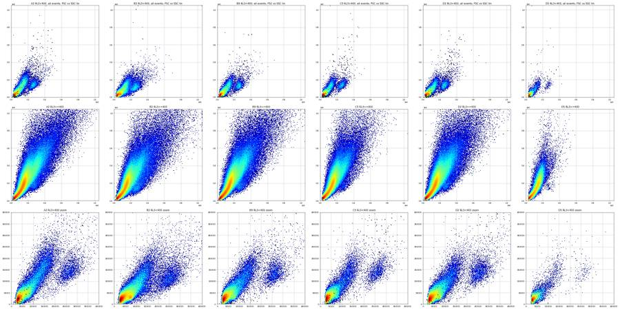
117
tool call · Bash
cd /task; python3 -c "
import numpy as np, pandas as pd
lay = pd.read_csv('/task/inputs/plate_layout.csv')
F=[];S=[];H=[]
for w in lay.well:
a=np.load(f'/task/work/npy/{w}.npy'); g=(a[:,5]<400)&(a[:,4]>10000)
F.append(a[g,1]);S.append(a[g,2]);H.append(a[g,3])
F=np.concatenate(F);S=np.concatenate(S);H=np.concatenate(H)
print('n',len(F)); print('FSC pct',np.percentile(F,[1,2,5,10,25,50,75,90,99]).round(-3)); print('SSC pct',np.percentile(S,[1,2,5,10,25,50,75,90,99]).round(-3))
print('ratio SSC-A/H pct', np.percentile(S/np.maximum(H,1),[1,5,25,50,75,95,99]).round(3))
for t in [30000,40000,50000,60000,80000]: print('frac FSC<',t, np.mean(F<t).round(3))
"
118
tool output
n 4114 FSC pct [ 27000. 30000. 40000. 55000. 155000. 255000. 313000. 370000. 505000.] SSC pct [ 1000. 4000. 8000. 18000. 90000. 244000. 378000. 524000. 834000.] ratio SSC-A/H pct [0.33 0.907 1.22 1.404 1.547 1.847 2.196] frac FSC< 30000 0.019 frac FSC< 40000 0.052 frac FSC< 50000 0.085 frac FSC< 60000 0.11 frac FSC< 80000 0.145
120
thinking
GFP-bright live cells show a higher SSC-A/SSC-H ratio (median 1.40 versus 1.17 for the bulk), so a tight singlet gate could exclude them. I'm checking live events on the singlet plot before adjusting that polygon.
121
tool call · Bash
cd /task; cat > work/livesing.py <<'EOF'
import numpy as np, pandas as pd, matplotlib; matplotlib.use('Agg'); import matplotlib.pyplot as plt
from matplotlib.colors import LogNorm
lay = pd.read_csv('/task/inputs/plate_layout.csv')
L=[];G=[];D=[]
for w in lay.well:
a=np.load(f'/task/work/npy/{w}.npy'); c=(a[:,1]>60000)&(a[:,2]<1048575)
live=c&(a[:,5]<400); L.append(a[live][:,[1,2,3,4]]); G.append(a[live&(a[:,4]>5000)][:,[1,2,3,4]])
if w in ('A2','B9'): D.append(a[c&(a[:,5]>=400)][:,[1,2,3,4]])
L=np.concatenate(L);G=np.concatenate(G);D=np.concatenate(D)
fig,axs=plt.subplots(2,3,figsize=(30,20))
for k,(X,t) in enumerate([(L,'live pooled'),(D,'dead A2+B9'),(G,'live GFP>5000 pooled')]):
if k<2: axs[0,k].hist2d(X[:,2],X[:,1],bins=250,range=[[0,1050000],[0,1050000]],norm=LogNorm(),cmap='jet')
else: axs[0,k].scatter(X[:,2],X[:,1],s=2); axs[0,k].set_xlim(0,1050000); axs[0,k].set_ylim(0,1050000)
for s in [1.0,1.3,1.6,2.0]: axs[0,k].plot([0,1e6],[0,1e6*s],'k-',lw=0.6)
axs[0,k].set_title(t+' x=SSC-H y=SSC-A, lines ratio 1,1.3,1.6,2'); axs[0,k].grid(True)
m=(X[:,1]>0)&(X[:,2]>0)
axs[1,k].hist2d(np.log10(X[m,2]),X[m,1]/X[m,2],bins=200,range=[[3,6.05],[0.5,3]],norm=LogNorm(),cmap='jet'); axs[1,k].set_title(t+' log SSC-H vs ratio A/H'); axs[1,k].grid(True)
plt.tight_layout(); plt.savefig('/task/work/live_singlets.png',dpi=35)
EOF
python3 work/livesing.py122
tool output
(Bash completed with no output)
123
tool call · Read
{
"file_path": "/task/work/live_singlets.png"
}124
tool output
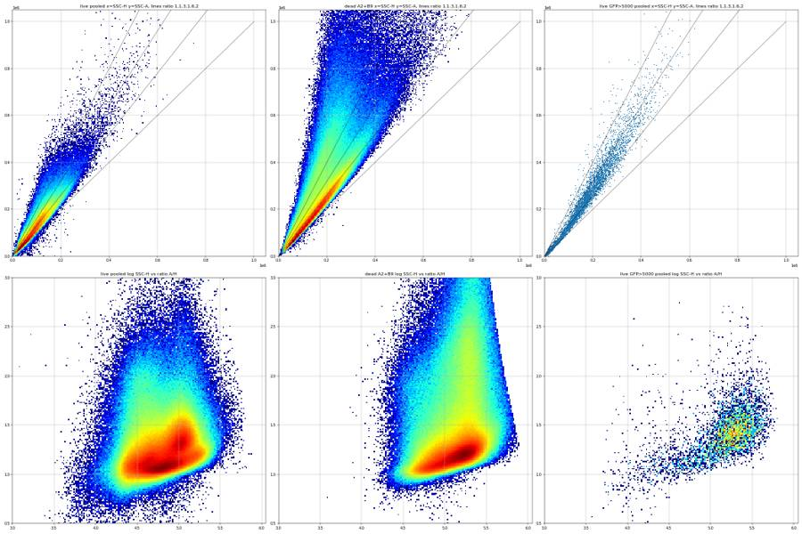
126
tool call · Bash
cd /task; python3 -c "
import numpy as np, pandas as pd
lay = pd.read_csv('/task/inputs/plate_layout.csv')
L=[];D=[];G=[]
for w in lay.well:
a=np.load(f'/task/work/npy/{w}.npy'); c=(a[:,1]>60000)&(a[:,2]<1048575)&(a[:,3]>0)
L.append(a[c&(a[:,5]<400)][:,[2,3]]); D.append(a[c&(a[:,5]>=400)][::10][:,[2,3]]); G.append(a[c&(a[:,5]<400)&(a[:,4]>5000)][:,[2,3]])
for nm,X in [('live',np.concatenate(L)),('dead/10',np.concatenate(D)),('gfp+live',np.concatenate(G))]:
r=X[:,0]/X[:,1]; h=X[:,1]
print(nm, len(X))
for lo,hi in [(0,30e3),(30e3,60e3),(60e3,100e3),(100e3,150e3),(150e3,200e3),(200e3,300e3),(300e3,450e3),(450e3,1.1e6)]:
m=(h>=lo)&(h<hi)
if m.sum()>20: print(' SSC-H %6d-%7d n=%7d ratio q01 %.2f q05 %.2f q25 %.2f q50 %.2f q75 %.2f q90 %.2f q95 %.2f'%((lo,hi,m.sum())+tuple(np.percentile(r[m],[1,5,25,50,75,90,95]))))
"
127
tool output
live 1547827 SSC-H 0- 30000 n= 146026 ratio q01 0.77 q05 0.91 q25 1.03 q50 1.10 q75 1.22 q90 1.48 q95 1.71 SSC-H 30000- 60000 n= 521381 ratio q01 0.93 q05 0.99 q25 1.06 q50 1.12 q75 1.24 q90 1.43 q95 1.62 SSC-H 60000- 100000 n= 486988 ratio q01 0.99 q05 1.03 q25 1.09 q50 1.18 q75 1.31 q90 1.45 q95 1.57 SSC-H 100000- 150000 n= 305843 ratio q01 1.05 q05 1.09 q25 1.19 q50 1.30 q75 1.41 q90 1.53 q95 1.64 SSC-H 150000- 200000 n= 68469 ratio q01 1.08 q05 1.12 q25 1.19 q50 1.26 q75 1.39 q90 1.55 q95 1.72 SSC-H 200000- 300000 n= 17524 ratio q01 1.10 q05 1.15 q25 1.23 q50 1.30 q75 1.46 q90 1.66 q95 1.83 SSC-H 300000- 450000 n= 1423 ratio q01 1.11 q05 1.20 q25 1.34 q50 1.46 q75 1.63 q90 1.81 q95 1.96 SSC-H 450000-1100000 n= 173 ratio q01 1.07 q05 1.16 q25 1.41 q50 1.54 q75 1.67 q90 1.84 q95 1.96 dead/10 2284732 SSC-H 0- 30000 n= 10157 ratio q01 0.82 q05 0.93 q25 1.03 q50 1.23 q75 1.67 q90 1.95 q95 2.10 SSC-H 30000- 60000 n= 184551 ratio q01 0.94 q05 0.99 q25 1.05 q50 1.11 q75 1.31 q90 1.73 q95 1.96 SSC-H 60000- 100000 n= 443437 ratio q01 1.00 q05 1.03 q25 1.08 q50 1.14 q75 1.25 q90 1.57 q95 1.88 SSC-H 100000- 150000 n= 538435 ratio q01 1.05 q05 1.08 q25 1.14 q50 1.20 q75 1.33 q90 1.77 q95 2.14 SSC-H 150000- 200000 n= 538015 ratio q01 1.09 q05 1.13 q25 1.19 q50 1.24 q75 1.41 q90 2.02 q95 2.37 SSC-H 200000- 300000 n= 468323 ratio q01 1.12 q05 1.16 q25 1.23 q50 1.31 q75 1.62 q90 2.26 q95 2.62 SSC-H 300000- 450000 n= 89956 ratio q01 1.16 q05 1.21 q25 1.32 q50 1.45 q75 1.80 q90 2.25 q95 2.51 SSC-H 450000-1100000 n= 11858 ratio q01 1.19 q05 1.27 q25 1.40 q50 1.52 q75 1.68 q90 1.88 q95 1.99 gfp+live 5014 SSC-H 0- 30000 n= 410 ratio q01 0.33 q05 0.67 q25 0.94 q50 1.06 q75 1.21 q90 1.52 q95 1.79 SSC-H 30000- 60000 n= 368 ratio q01 0.91 q05 0.98 q25 1.06 q50 1.13 q75 1.23 q90 1.42 q95 1.64 SSC-H 60000- 100000 n= 452 ratio q01 1.00 q05 1.06 q25 1.15 q50 1.23 q75 1.34 q90 1.49 q95 1.63 SSC-H 100000- 150000 n= 861 ratio q01 1.08 q05 1.14 q25 1.27 q50 1.38 q75 1.50 q90 1.67 q95 1.81 SSC-H 150000- 200000 n= 988 ratio q01 1.13 q05 1.21 q25 1.33 q50 1.43 q75 1.55 q90 1.68 q95 1.81 SSC-H 200000- 300000 n= 1284 ratio q01 1.19 q05 1.25 q25 1.38 q50 1.49 q75 1.61 q90 1.76 q95 1.90 SSC-H 300000- 450000 n= 573 ratio q01 1.20 q05 1.30 q25 1.43 q50 1.53 q75 1.67 q90 1.83 q95 1.95 SSC-H 450000-1100000 n= 78 ratio q01 1.30 q05 1.36 q25 1.50 q50 1.57 q75 1.72 q90 1.86 q95 1.97
129
agent
Singlet ratio rises with SSC-H (median 1.1 at 50k → 1.5 at 400k+), so I'll use a singlet polygon that follows that curved ridge. Now zooming on the debris corner to place the Cells polygon edge.
130
tool call · Bash
cd /task; cat > work/debris.py <<'EOF'
import numpy as np, pandas as pd, matplotlib; matplotlib.use('Agg'); import matplotlib.pyplot as plt
from matplotlib.colors import LogNorm
lay = pd.read_csv('/task/inputs/plate_layout.csv')
fig,axs=plt.subplots(2,4,figsize=(36,18)); axs=axs.ravel()
for k,w in enumerate(['A2','B2','C5','D5']):
a=np.load(f'/task/work/npy/{w}.npy')
axs[k].hist2d(a[:,1],a[:,2],bins=250,range=[[0,250000],[0,250000]],norm=LogNorm(),cmap='jet'); axs[k].grid(True); axs[k].set_title(w+' all events zoom')
m=(a[:,5]<400)
axs[k+4].hist2d(a[m,1],a[m,2],bins=250,range=[[0,250000],[0,250000]],norm=LogNorm(),cmap='jet'); axs[k+4].grid(True); axs[k+4].set_title(w+' live zoom')
g=m&(a[:,4]>5000); axs[k+4].scatter(a[g,1],a[g,2],s=6,c='k')
plt.tight_layout(); plt.savefig('/task/work/debris.png',dpi=30)
EOF
python3 work/debris.py131
tool output
(Bash completed with no output)
132
tool call · Read
{
"file_path": "/task/work/debris.png"
}133
tool output
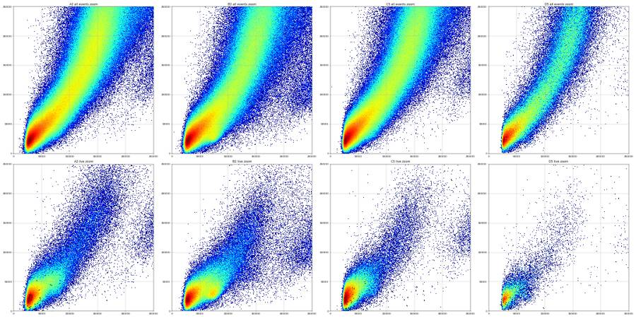
135
tool call · Bash
cd /task; cat > work/fschist.py <<'EOF'
import numpy as np, pandas as pd, matplotlib; matplotlib.use('Agg'); import matplotlib.pyplot as plt
from scipy.ndimage import gaussian_filter1d
lay = pd.read_csv('/task/inputs/plate_layout.csv')
fig,axs=plt.subplots(1,3,figsize=(30,8))
b=np.linspace(4.2,6.05,200); c=(b[:-1]+b[1:])/2
for w in lay.well:
a=np.load(f'/task/work/npy/{w}.npy'); m=a[:,1]>0
h,_=np.histogram(np.log10(a[m,1]),b); axs[0].plot(c,gaussian_filter1d(h.astype(float),1),lw=0.6)
l=m&(a[:,5]<400); h,_=np.histogram(np.log10(a[l,1]),b); axs[1].plot(c,gaussian_filter1d(h.astype(float),1),lw=0.6)
# diag projection: log FSC + log SSC
m2=m&(a[:,2]>0); s=(np.log10(a[m2,1])+np.log10(a[m2,2]))/2
h,_=np.histogram(s,np.linspace(3.8,6.05,200)); axs[2].plot(np.linspace(3.8,6.05,200)[:-1],gaussian_filter1d(h.astype(float),1),lw=0.6)
for ax,t in zip(axs,['log FSC-A all','log FSC-A live(RL3<400)','(logFSC+logSSC)/2 all']): ax.set_title(t); ax.grid(True)
plt.savefig('/task/work/fsc_hist.png',dpi=45)
EOF
python3 work/fschist.py136
tool output
(Bash completed with no output)
137
tool call · Read
{
"file_path": "/task/work/fsc_hist.png"
}138
tool output
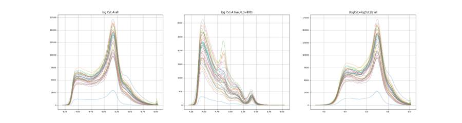
140
thinking
I've set the Cells gate at FSC-A 55k with the top and right edges near the scale maximum. Next I'm building the FlowKit strategy with Cells, Singlets and Live, then using the gated Live events to set the GFP cut-off.
141
tool call · Bash
cd /task; cat > work/build.py <<'EOF'
import flowkit as fk, sys, json
LIVE_MAX = float(sys.argv[1]); GFP_MIN = float(sys.argv[2]); out = sys.argv[3]
gs = fk.GatingStrategy()
cells = fk.gates.PolygonGate('Cells',
[fk.Dimension('FSC-A', compensation_ref='uncompensated'), fk.Dimension('SSC-A', compensation_ref='uncompensated')],
[(55000, 1000), (55000, 230000), (290000, 1040000), (1040000, 1040000), (1040000, 1000)])
gs.add_gate(cells, ('root',))
sing = fk.gates.PolygonGate('Singlets',
[fk.Dimension('SSC-H', compensation_ref='uncompensated'), fk.Dimension('SSC-A', compensation_ref='uncompensated')],
[(0, 0), (100000, 85000), (300000, 300000), (1100000, 1150000), (600000, 1080000), (300000, 510000), (150000, 232500), (50000, 72500)])
gs.add_gate(sing, ('root','Cells'))
live = fk.gates.RectangleGate('Live', [fk.Dimension('RL3-A', compensation_ref='uncompensated', range_max=LIVE_MAX)])
gs.add_gate(live, ('root','Cells','Singlets'))
gfp = fk.gates.RectangleGate('GFP_pos', [fk.Dimension('BL1-A', compensation_ref='uncompensated', range_min=GFP_MIN)])
gs.add_gate(gfp, ('root','Cells','Singlets','Live'))
with open(out,'wb') as fh: fk.export_gatingml(gs, fh)
gs2 = fk.parse_gating_xml(out)
print(gs2.get_gate_hierarchy(output='ascii'))
EOF
python3 work/build.py 400 2000 work/gates_draft.xml142
tool output
root
╰── Cells
╰── Singlets
╰── Live
╰── GFP_pos144
tool call · Bash
cd /task; cat > work/run_gate.py <<'EOF'
import flowkit as fk, pandas as pd, numpy as np, sys, os
from multiprocessing import Pool
xml = sys.argv[1]; outcsv = sys.argv[2]; dump = len(sys.argv)>3
lay = pd.read_csv('/task/inputs/plate_layout.csv')
POPS=[('Cells','all_events'),('Singlets','Cells'),('Live','Singlets'),('GFP_pos','Live')]
def one(row):
fn, well = row
gs = fk.parse_gating_xml(xml)
s = fk.Sample(os.path.join('/task/inputs/raw', fn))
res = gs.gate_sample(s)
tot = s.event_count
rep = res.report
cnt = {p: int(rep.loc[rep.gate_name==p,'count'].iloc[0]) for p,_ in POPS}
rows=[]
for p,par in POPS:
pc = tot if par=='all_events' else cnt[par]
rows.append(dict(file=fn, well=well, population=p, count=cnt[p], parent_population=par, pct_of_parent=(100.0*cnt[p]/pc if pc>0 else 0.0)))
if dump:
live = res.get_gate_membership('Live')
raw = s.get_events(source='raw')
idx = {c:i for i,c in enumerate(s.pnn_labels)}
np.save(f'/task/work/live_{well}.npy', raw[live][:, [idx['BL1-A'], idx['RL3-A'], idx['FSC-A'], idx['SSC-A'], idx['SSC-H'], idx['VL1-A'], idx['Time']]].astype(np.float32))
return rows, tot
if __name__=='__main__':
with Pool(4) as p: out = p.map(one, list(zip(lay.file, lay.well)))
rows=[r for o,_ in out for r in o]
df=pd.DataFrame(rows); df.to_csv(outcsv, index=False)
piv=df.pivot(index='well',columns='population',values='count').reindex(lay.well)[['Cells','Singlets','Live','GFP_pos']]
piv['total']=[t for _,t in out]
pct=df.pivot(index='well',columns='population',values='pct_of_parent').reindex(lay.well)[['Cells','Singlets','Live','GFP_pos']].round(2)
print(pd.concat([piv,pct.add_suffix('_%')],axis=1).to_string())
EOF
time python3 work/run_gate.py work/gates_draft.xml work/counts_draft.csv dump145
tool output
population Cells Singlets Live GFP_pos total Cells_% Singlets_% Live_% GFP_pos_% well A1 766707 550176 57406 124 978726 78.34 71.76 10.43 0.22 A2 718695 586952 42043 199 935707 76.81 81.67 7.16 0.47 A3 718329 595384 45539 228 925910 77.58 82.88 7.65 0.50 A4 699081 576422 41598 235 892332 78.34 82.45 7.22 0.56 A5 761163 620115 45589 238 986514 77.16 81.47 7.35 0.52 A6 589599 504057 30140 201 755396 78.05 85.49 5.98 0.67 A7 655825 539351 51679 143 848859 77.26 82.24 9.58 0.28 A8 551450 468791 37114 198 710140 77.65 85.01 7.92 0.53 A9 721742 568226 62689 112 958681 75.28 78.73 11.03 0.18 A10 668602 545371 49661 163 870505 76.81 81.57 9.11 0.33 A11 630502 530671 51450 226 844586 74.65 84.17 9.70 0.44 A12 709615 582989 50020 328 947510 74.89 82.16 8.58 0.66 B1 539196 439991 65553 7 733754 73.48 81.60 14.90 0.01 B2 530930 433672 58812 22 728886 72.84 81.68 13.56 0.04 B3 483696 410347 37981 134 667298 72.49 84.84 9.26 0.35 B4 429635 373627 39648 35 598212 71.82 86.96 10.61 0.09 B5 619960 518103 58941 96 837561 74.02 83.57 11.38 0.16 B6 639590 527932 63245 98 877336 72.90 82.54 11.98 0.15 B7 707796 573949 29743 123 954909 74.12 81.09 5.18 0.41 B8 678716 557924 32826 213 918778 73.87 82.20 5.88 0.65 B9 648213 537631 33221 194 862070 75.19 82.94 6.18 0.58 B10 802458 646114 36629 204 1083648 74.05 80.52 5.67 0.56 B11 727897 600858 34932 210 988574 73.63 82.55 5.81 0.60 B12 659257 548507 28641 192 904103 72.92 83.20 5.22 0.67 C1 444083 393707 15086 118 624718 71.09 88.66 3.83 0.78 C2 492705 427845 21927 206 695572 70.83 86.84 5.12 0.94 C3 466969 397609 33979 109 656321 71.15 85.15 8.55 0.32 C4 490074 424048 22051 159 679504 72.12 86.53 5.20 0.72 C5 496085 432906 19859 158 689593 71.94 87.26 4.59 0.80 C6 639686 535990 23945 131 891011 71.79 83.79 4.47 0.55 C7 452463 393943 23351 95 649735 69.64 87.07 5.93 0.41 C8 451647 395504 23886 289 639518 70.62 87.57 6.04 1.21 C9 589467 494698 33363 262 801299 73.56 83.92 6.74 0.79 C10 687188 566233 35534 237 927162 74.12 82.40 6.28 0.67 C11 643006 536674 31553 153 868685 74.02 83.46 5.88 0.48 C12 424100 375285 18774 92 578214 73.35 88.49 5.00 0.49 D1 589845 501897 35335 66 800840 73.65 85.09 7.04 0.19 D2 664198 557078 37332 205 894591 74.25 83.87 6.70 0.55 D3 680614 555453 53245 111 915097 74.38 81.61 9.59 0.21 D4 695019 573260 39049 117 925805 75.07 82.48 6.81 0.30 D5 109653 106299 3980 19 153195 71.58 96.94 3.74 0.48 D6 531173 465179 15259 52 726651 73.10 87.58 3.28 0.34 real 0m2.523s user 0m5.587s sys 0m2.307s
147
agent
FlowKit gating runs cleanly on all 42 files. Next: the GFP cut-off, set from the Live population of the wells with the fewest GFP-bright events (B1, B2, B4).
148
tool call · Bash
cd /task; cat > work/gfpcut.py <<'EOF'
import numpy as np, pandas as pd, matplotlib; matplotlib.use('Agg'); import matplotlib.pyplot as plt
from matplotlib.colors import LogNorm
import flowkit as fk
lay = pd.read_csv('/task/inputs/plate_layout.csv')
lt = fk.transforms.LogicleTransform(param_t=1048576, param_w=1.0, param_m=6.0, param_a=0)
T=lambda v: lt.apply(np.asarray(v,float).reshape(-1,1)).ravel()
ticks=[-100,0,100,300,1000,3000,1e4,1e5,1e6]; tt=T(ticks)
rows=[]
for w in lay.well:
L=np.load(f'/task/work/live_{w}.npy'); b=L[:,0]
rows.append(dict(well=w,n=len(b),**{f'q{q}':round(float(np.percentile(b,q))) for q in [50,90,99,99.5,99.9]}, **{f'>{t}':int((b>t).sum()) for t in [500,1000,1500,2000,3000,5000]}))
df=pd.DataFrame(rows); print(df.to_string())
fig,axs=plt.subplots(2,4,figsize=(36,16)); axs=axs.ravel()
for k,w in enumerate(['B1','B2','B4','D1','A2','C8','B8','A12']):
L=np.load(f'/task/work/live_{w}.npy')
axs[k].hist2d(T(L[:,0]),L[:,3],bins=200,range=[[0.1,1],[0,1050000]],norm=LogNorm(),cmap='jet')
axs[k].set_xticks(tt); axs[k].set_xticklabels([str(int(t)) for t in ticks]); axs[k].grid(True); axs[k].set_title(w+' Live: BL1-A (logicle) vs SSC-A')
plt.tight_layout(); plt.savefig('/task/work/gfp_ssc.png',dpi=30)
fig,ax=plt.subplots(figsize=(18,8)); bins=np.linspace(0.1,1,300)
for w in lay.well:
L=np.load(f'/task/work/live_{w}.npy'); h,_=np.histogram(T(L[:,0]),bins); ax.semilogy(bins[:-1],h+0.5,lw=0.7,color='r' if w in('B1','B2','B4') else 'gray')
ax.set_xticks(tt); ax.set_xticklabels([str(int(t)) for t in ticks]); ax.grid(True); plt.savefig('/task/work/gfp_hist.png',dpi=50)
EOF
python3 work/gfpcut.py149
tool output
well n q50 q90 q99 q99.5 q99.9 >500 >1000 >1500 >2000 >3000 >5000 0 A1 57406 60 185 492 690 9163 553 165 136 124 105 79 1 A2 42043 65 188 522 1595 97536 444 252 215 199 175 153 2 A3 45539 68 199 668 2003 54235 665 308 259 228 194 152 3 A4 41598 68 197 669 2672 100344 586 310 255 234 201 173 4 A5 45589 67 207 702 2356 175505 761 328 270 238 210 181 5 A6 30140 74 223 1015 4412 268060 668 304 237 201 174 146 6 A7 51679 47 153 354 602 19873 314 192 159 143 123 98 7 A8 37114 63 175 507 2538 156294 378 241 213 198 176 151 8 A9 62689 53 157 346 474 13448 277 137 120 112 100 80 9 A10 49661 57 169 381 625 45975 308 202 174 163 148 124 10 A11 51450 65 187 509 1221 156849 529 280 240 226 212 191 11 A12 50020 65 195 774 4311 350090 783 435 361 328 282 240 12 B1 65553 42 135 271 326 503 67 13 8 7 4 1 13 B2 58812 47 145 298 374 862 125 50 32 22 13 4 14 B3 37981 51 162 419 1107 8897 316 199 159 134 110 68 15 B4 39648 62 174 383 507 1686 203 70 45 35 22 10 16 B5 58941 63 180 448 640 2711 465 173 127 96 52 29 17 B6 63245 59 173 443 654 3203 499 184 132 98 68 40 18 B7 29743 62 204 614 1489 17878 418 184 148 123 101 79 19 B8 32826 65 218 860 3070 28489 617 294 242 213 169 126 20 B9 33221 62 199 817 2557 21596 588 295 225 194 149 110 21 B10 36629 61 206 792 2489 49102 685 286 229 204 173 137 22 B11 34932 70 247 1007 3238 95176 1019 356 249 210 179 151 23 B12 28641 74 263 1287 3476 310161 1059 392 245 192 152 115 24 C1 15086 63 186 1323 4486 20122 277 176 142 118 94 73 25 C2 21927 66 195 1835 4430 18432 444 300 245 206 146 102 26 C3 33979 50 160 404 760 10088 253 145 122 109 83 64 27 C4 22051 66 194 1030 4246 47343 329 224 185 159 134 101 28 C5 19859 65 201 996 8490 159459 326 199 173 158 139 122 29 C6 23945 63 206 716 2385 86781 377 183 144 131 110 95 30 C7 23351 54 172 678 1604 6445 318 176 128 95 58 33 31 C8 23886 67 214 2494 5471 16622 799 509 361 289 202 126 32 C9 33363 59 177 1276 3622 18336 613 385 312 262 197 133 33 C10 35534 58 180 931 3382 20240 560 339 285 237 191 134 34 C11 31553 61 188 615 1832 25984 401 211 175 153 132 107 35 C12 18774 66 196 543 1890 79235 209 119 105 92 85 71 36 D1 35335 49 168 380 524 9251 193 86 73 66 57 50 37 D2 37332 57 184 559 2648 41907 439 250 220 205 175 141 38 D3 53245 45 149 347 477 11167 240 135 117 111 98 76 39 D4 39049 52 166 394 649 36547 276 153 131 117 106 87 40 D5 3980 62 184 530 1845 116726 41 24 23 19 17 14 41 D6 15259 64 206 529 984 53875 168 75 60 52 48 39
150
tool call · Read
{
"file_path": "/task/work/gfp_hist.png"
}151
tool output
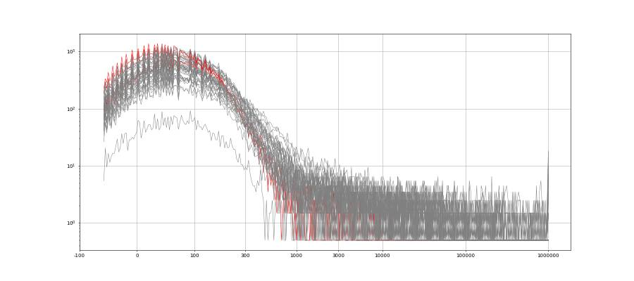
153
tool call · Read
{
"file_path": "/task/work/gfp_ssc.png"
}154
tool output
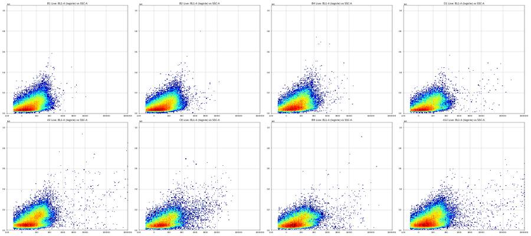
156
tool call · Bash
cd /task; python3 -c "
import numpy as np
for w in ['B1','B2','B4','D1','D6','B5','B6','C7']:
b=np.load(f'/task/work/live_{w}.npy')[:,0]
print(w, len(b), ' '.join(f'>{t}:{(b>t).sum()}' for t in [500,600,700,800,900,1000,1200,1500,2000]))
b=np.concatenate([np.load(f'/task/work/live_{w}.npy')[:,0] for w in ['B1','B2']])
print('B1+B2 q', np.percentile(b,[99,99.5,99.8,99.9,99.95,99.98]).round())
"
157
tool output
B1 65553 >500:67 >600:43 >700:30 >800:19 >900:14 >1000:13 >1200:9 >1500:8 >2000:7 B2 58812 >500:125 >600:86 >700:74 >800:65 >900:56 >1000:50 >1200:42 >1500:32 >2000:22 B4 39648 >500:203 >600:134 >700:106 >800:88 >900:81 >1000:70 >1200:60 >1500:45 >2000:35 D1 35335 >500:193 >600:144 >700:109 >800:94 >900:88 >1000:86 >1200:79 >1500:73 >2000:66 D6 15259 >500:168 >600:128 >700:106 >800:95 >900:85 >1000:75 >1200:69 >1500:60 >2000:52 B5 58941 >500:465 >600:326 >700:251 >800:220 >900:191 >1000:173 >1200:148 >1500:127 >2000:96 B6 63245 >500:499 >600:365 >700:277 >800:223 >900:198 >1000:184 >1200:159 >1500:132 >2000:98 C7 23351 >500:318 >600:265 >700:226 >800:204 >900:191 >1000:176 >1200:152 >1500:128 >2000:95 B1+B2 q [ 283. 350. 462. 609. 1051. 2237.]
159
thinking
The GFP threshold sits near 1000 because the count above threshold flattens around 900–1000 in B1, so I'm setting GFP_pos at BL1-A ≥ 1000. Next I'm screening each well's profile, NCAM included, for anything unexpected.
160
tool call · Bash
cd /task; cat > work/profile.py <<'EOF'
import numpy as np, pandas as pd
lay = pd.read_csv('/task/inputs/plate_layout.csv')
c=pd.read_csv('/task/work/counts_draft.csv')
rows=[]
for w in lay.well:
a=np.load(f'/task/work/npy/{w}.npy')
L=np.load(f'/task/work/live_{w}.npy') # BL1,RL3,FSC,SSC,SSCH,VL1,Time
r=a[:,2]/np.maximum(a[:,3],1)
sing=(a[:,1]>55000)&(a[:,2]<1040000)&(r<1.5)
rows.append(dict(well=w, medFSC=int(np.median(a[sing,1])), medSSC=int(np.median(a[sing,2])), medRL3_sing=int(np.median(a[sing,5])),
medVL1_sing=int(np.median(a[sing,6])), medVL1_live=int(np.median(L[:,5])), medFSC_live=int(np.median(L[:,2])), medSSC_live=int(np.median(L[:,3])),
q99VL1_live=int(np.percentile(L[:,5],99)), medBL1_live=int(np.median(L[:,0])), gfp_med=int(np.median(L[L[:,0]>=1000,0])) if (L[:,0]>=1000).sum() else -1))
df=pd.DataFrame(rows); print(df.to_string())
EOF
python3 work/profile.py161
tool output
well medFSC medSSC medRL3_sing medVL1_sing medVL1_live medFSC_live medSSC_live q99VL1_live medBL1_live gfp_med 0 A1 127841 157670 4840 2532 1763 91508 89013 48582 60 4824 1 A2 129947 158884 5786 2751 2715 93516 84510 59854 65 10049 2 A3 127806 160476 4938 2492 2385 92727 87279 65060 68 4904 3 A4 131420 165612 6573 2790 2522 88949 80886 58411 68 6826 4 A5 129347 164500 4834 2654 2611 88607 81419 59627 67 7006 5 A6 132467 170126 6401 2736 2990 93572 87141 71452 74 4295 6 A7 127044 153422 9589 2530 1233 81480 59814 57922 47 5835 7 A8 130143 162244 8420 2579 2814 90979 79451 69306 63 8937 8 A9 125365 147922 6474 2375 1571 83724 69028 48242 53 10795 9 A10 126585 154034 6696 2537 2478 86295 71831 59103 57 9865 10 A11 125951 157378 4950 2399 2190 86591 79951 65474 65 17851 11 A12 127974 158582 4135 2432 1875 86179 79830 60278 65 8488 12 B1 122232 134882 5686 2371 1155 81441 56224 55381 42 2310 13 B2 125470 142259 6334 2346 1306 82518 58149 54284 47 1824 14 B3 126310 149668 9167 2416 1711 82992 60464 62013 51 3254 15 B4 127125 151466 6831 2108 1394 87427 69489 61095 62 1983 16 B5 127406 152009 4963 2178 1405 86632 73793 60829 63 2162 17 B6 122401 148829 4095 2205 1707 87433 81820 58283 59 2090 18 B7 121999 146103 8462 2611 3252 84046 73858 60591 62 3627 19 B8 127822 152109 7897 2580 2347 82499 69697 66700 65 3740 20 B9 128773 151747 8367 2537 3195 85530 72404 64798 62 3020 21 B10 126989 157765 7161 2321 2428 82201 72178 57323 61 4757 22 B11 128561 160908 5888 2499 2585 82616 73283 67488 70 3072 23 B12 129737 161582 6544 2755 3882 85370 76247 69066 74 1938 24 C1 125936 153302 10619 2324 3748 86415 71799 72662 63 3433 25 C2 125708 153870 9415 2332 3571 86527 72787 65854 66 2890 26 C3 125688 147074 8956 2322 1596 80364 57212 58405 50 3821 27 C4 126483 153953 8308 2454 4046 84908 73475 63613 66 4107 28 C5 127392 158228 7696 2393 4046 84611 74751 64025 65 8511 29 C6 126122 159968 5943 2397 4007 82738 74438 63006 63 5397 30 C7 120932 140708 9487 2180 2775 84754 64244 66598 54 2216 31 C8 125104 150815 9544 2091 2625 87755 74351 67767 67 2292 32 C9 123305 148358 6484 2358 3337 84073 71690 64771 59 3118 33 C10 124829 155522 5803 2338 3320 83399 73349 61583 58 3563 34 C11 126088 156154 6095 2502 4244 83152 72519 68857 61 5248 35 C12 123125 147877 5093 2601 5359 85936 73846 79373 66 8449 36 D1 121578 147655 7113 2288 1993 78439 58159 63417 49 6463 37 D2 126672 156257 7226 2237 1928 80026 65341 56836 57 6444 38 D3 121819 145334 5715 2128 1508 77929 60098 45160 45 6960 39 D4 124726 153173 6546 2183 2443 80681 66678 49690 52 7898 40 D5 125330 156618 12543 2198 2627 78450 64160 66483 62 15339 41 D6 127590 159997 9595 2331 3117 79605 67483 68331 64 6060
163
agent
No staining failures: NCAM and Zombie medians are similar in every well. Now examining the flow disturbances (B7, B8, the 1-s spikes in C6/C11/D4, and the end-of-run rate drops) in finer time bins.
164
tool call · Bash
cd /task; cat > work/timefine.py <<'EOF'
import numpy as np, pandas as pd, matplotlib; matplotlib.use('Agg'); import matplotlib.pyplot as plt
wells=['B7','B8','C6','C11','D4','A1','C3','C4','B4','C2','A2','D5']
fig,axs=plt.subplots(len(wells),3,figsize=(30,4*len(wells)))
for k,w in enumerate(wells):
a=np.load(f'/task/work/npy/{w}.npy'); t=a[:,0]/1000
b=np.arange(0,t.max()+0.25,0.25); h,_=np.histogram(t,b)
axs[k,0].plot(b[:-1],h*4,lw=0.7); axs[k,0].set_title(w+' events/s (0.25 s bins)'); axs[k,0].grid(True)
# composition per 1 s bin
bb=np.arange(0,t.max()+1,1.0); idx=np.digitize(t,bb)-1
cells=(a[:,1]>55000)&(a[:,2]<1040000)
deb=np.bincount(idx,weights=~cells,minlength=len(bb))/np.maximum(np.bincount(idx,minlength=len(bb)),1)
medssc=[np.median(a[(idx==i)&cells,2]) if ((idx==i)&cells).sum()>50 else np.nan for i in range(len(bb))]
live=cells&(a[:,5]<400)
lf=np.bincount(idx,weights=live,minlength=len(bb))/np.maximum(np.bincount(idx,weights=cells,minlength=len(bb)),1)
axs[k,1].plot(bb,100*deb,label='%non-Cells'); axs[k,1].plot(bb,100*lf,label='%RL3<400 of cells'); axs[k,1].legend(); axs[k,1].grid(True)
axs[k,2].plot(bb,medssc); axs[k,2].set_title('median SSC-A of cells'); axs[k,2].grid(True)
plt.tight_layout(); plt.savefig('/task/work/timefine.png',dpi=30)
EOF
python3 work/timefine.py165
tool output
(Bash completed with no output)
166
tool call · Read
{
"file_path": "/task/work/timefine.png"
}167
tool output
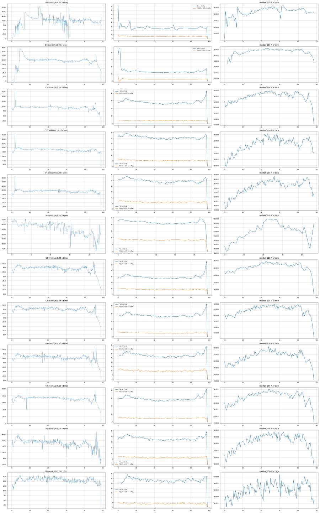
169
thinking
B7 and B8 show clear flow interruptions with debris spikes, while the small 1-second spikes in C6, C11 and D4 are negligible. I'm writing the final gates next and then overlaying them on the data to check their placement.
170
tool call · Bash
cd /task; python3 work/build.py 400 1000 outputs/gates.xml && python3 work/run_gate.py outputs/gates.xml work/counts_v1.csv dump | head -50
171
tool output
root
╰── Cells
╰── Singlets
╰── Live
╰── GFP_pos
population Cells Singlets Live GFP_pos total Cells_% Singlets_% Live_% GFP_pos_%
well
A1 766707 550176 57406 165 978726 78.34 71.76 10.43 0.29
A2 718695 586952 42043 252 935707 76.81 81.67 7.16 0.60
A3 718329 595384 45539 308 925910 77.58 82.88 7.65 0.68
A4 699081 576422 41598 310 892332 78.34 82.45 7.22 0.75
A5 761163 620115 45589 329 986514 77.16 81.47 7.35 0.72
A6 589599 504057 30140 304 755396 78.05 85.49 5.98 1.01
A7 655825 539351 51679 192 848859 77.26 82.24 9.58 0.37
A8 551450 468791 37114 242 710140 77.65 85.01 7.92 0.65
A9 721742 568226 62689 137 958681 75.28 78.73 11.03 0.22
A10 668602 545371 49661 202 870505 76.81 81.57 9.11 0.41
A11 630502 530671 51450 281 844586 74.65 84.17 9.70 0.55
A12 709615 582989 50020 435 947510 74.89 82.16 8.58 0.87
B1 539196 439991 65553 13 733754 73.48 81.60 14.90 0.02
B2 530930 433672 58812 50 728886 72.84 81.68 13.56 0.09
B3 483696 410347 37981 200 667298 72.49 84.84 9.26 0.53
B4 429635 373627 39648 70 598212 71.82 86.96 10.61 0.18
B5 619960 518103 58941 173 837561 74.02 83.57 11.38 0.29
B6 639590 527932 63245 184 877336 72.90 82.54 11.98 0.29
B7 707796 573949 29743 184 954909 74.12 81.09 5.18 0.62
B8 678716 557924 32826 294 918778 73.87 82.20 5.88 0.90
B9 648213 537631 33221 295 862070 75.19 82.94 6.18 0.89
B10 802458 646114 36629 286 1083648 74.05 80.52 5.67 0.78
B11 727897 600858 34932 356 988574 73.63 82.55 5.81 1.02
B12 659257 548507 28641 393 904103 72.92 83.20 5.22 1.37
C1 444083 393707 15086 176 624718 71.09 88.66 3.83 1.17
C2 492705 427845 21927 300 695572 70.83 86.84 5.12 1.37
C3 466969 397609 33979 145 656321 71.15 85.15 8.55 0.43
C4 490074 424048 22051 224 679504 72.12 86.53 5.20 1.02
C5 496085 432906 19859 199 689593 71.94 87.26 4.59 1.00
C6 639686 535990 23945 183 891011 71.79 83.79 4.47 0.76
C7 452463 393943 23351 176 649735 69.64 87.07 5.93 0.75
C8 451647 395504 23886 511 639518 70.62 87.57 6.04 2.14
C9 589467 494698 33363 385 801299 73.56 83.92 6.74 1.15
C10 687188 566233 35534 339 927162 74.12 82.40 6.28 0.95
C11 643006 536674 31553 211 868685 74.02 83.46 5.88 0.67
C12 424100 375285 18774 119 578214 73.35 88.49 5.00 0.63
D1 589845 501897 35335 86 800840 73.65 85.09 7.04 0.24
D2 664198 557078 37332 250 894591 74.25 83.87 6.70 0.67
D3 680614 555453 53245 135 915097 74.38 81.61 9.59 0.25
D4 695019 573260 39049 154 925805 75.07 82.48 6.81 0.39
D5 109653 106299 3980 24 153195 71.58 96.94 3.74 0.60
D6 531173 465179 15259 75 726651 73.10 87.58 3.28 0.49173
tool call · Bash
cd /task; cat > work/gateplots.py <<'EOF'
import flowkit as fk, numpy as np, pandas as pd, matplotlib, os; matplotlib.use('Agg'); import matplotlib.pyplot as plt
from matplotlib.colors import LogNorm
gs=fk.parse_gating_xml('/task/outputs/gates.xml')
lay=pd.read_csv('/task/inputs/plate_layout.csv')
lt = fk.transforms.LogicleTransform(param_t=1048576, param_w=1.5, param_m=6.0, param_a=0)
T=lambda v: lt.apply(np.asarray(v,float).reshape(-1,1)).ravel()
ticks=[-1000,0,100,400,1000,1e4,1e5,1e6]; tt=T(ticks)
cg=gs.get_gate('Cells'); sg=gs.get_gate('Singlets')
wells=['A2','B1','C8','D5']
fig,axs=plt.subplots(4,4,figsize=(32,32))
for k,w in enumerate(wells):
fn=lay.file[lay.well==w].iloc[0]; s=fk.Sample(os.path.join('/task/inputs/raw',fn)); r=gs.gate_sample(s)
ev=s.get_events(source='raw'); ix={c:i for i,c in enumerate(s.pnn_labels)}
C=r.get_gate_membership('Cells'); S=r.get_gate_membership('Singlets'); L=r.get_gate_membership('Live'); G=r.get_gate_membership('GFP_pos')
ax=axs[0,k]; ax.hist2d(ev[:,ix['FSC-A']],ev[:,ix['SSC-A']],bins=250,range=[[0,1050000],[0,1050000]],norm=LogNorm(),cmap='jet')
v=np.array(cg.vertices+[cg.vertices[0]]); ax.plot(v[:,0],v[:,1],'k-',lw=2); ax.set_title(f'{w} Cells {C.sum()}/{len(C)}'); ax.set_xlabel('FSC-A'); ax.set_ylabel('SSC-A')
ax=axs[1,k]; ax.hist2d(ev[C,ix['SSC-H']],ev[C,ix['SSC-A']],bins=250,range=[[0,1050000],[0,1050000]],norm=LogNorm(),cmap='jet')
v=np.array(sg.vertices+[sg.vertices[0]]); ax.plot(v[:,0],v[:,1],'k-',lw=2); ax.set_xlim(0,1050000); ax.set_ylim(0,1050000); ax.set_title(f'{w} Singlets {S.sum()}'); ax.set_xlabel('SSC-H'); ax.set_ylabel('SSC-A')
ax=axs[2,k]; ax.hist2d(T(ev[S,ix['RL3-A']]),ev[S,ix['SSC-A']],bins=250,range=[[0,1],[0,1050000]],norm=LogNorm(),cmap='jet'); ax.axvline(T([400])[0],color='k',lw=2)
ax.set_xticks(tt); ax.set_xticklabels([str(int(t)) for t in ticks]); ax.set_title(f'{w} Live {L.sum()}'); ax.set_xlabel('RL3-A Zombie NIR (logicle)')
ax=axs[3,k]; ax.hist2d(T(ev[L,ix['BL1-A']]),ev[L,ix['SSC-A']],bins=200,range=[[0,1],[0,1050000]],norm=LogNorm(),cmap='jet'); ax.axvline(T([1000])[0],color='k',lw=2)
ax.set_xticks(tt); ax.set_xticklabels([str(int(t)) for t in ticks]); ax.set_title(f'{w} GFP_pos {G.sum()}'); ax.set_xlabel('BL1-A GFP (logicle)')
plt.tight_layout(); plt.savefig('/task/work/gates_overlay.png',dpi=30)
EOF
python3 work/gateplots.py174
tool output
(Bash completed with no output)
175
tool call · Read
{
"file_path": "/task/work/gates_overlay.png"
}176
tool output
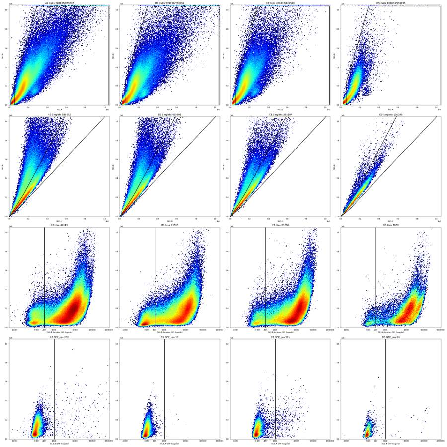
178
agent
Gate placement checks out on the overlays, except the Cells polygon's upper-left edge clips part of the high-SSC cloud. Widening that edge.
179
tool call · Bash
cd /task; sed -i 's/\[(55000, 1000), (55000, 230000), (290000, 1040000), (1040000, 1040000), (1040000, 1000)\]/[(55000, 1000), (55000, 350000), (130000, 1040000), (1040000, 1040000), (1040000, 1000)]/' work/build.py; grep -n "55000" work/build.py; python3 work/build.py 400 1000 outputs/gates.xml && python3 work/run_gate.py outputs/gates.xml work/counts_v2.csv dump > work/counts_v2.txt; cat work/counts_v2.txt | head -12; python3 work/gateplots.py
180
tool output
6: [(55000, 1000), (55000, 350000), (130000, 1040000), (1040000, 1040000), (1040000, 1000)])
root
╰── Cells
╰── Singlets
╰── Live
╰── GFP_pos
population Cells Singlets Live GFP_pos total Cells_% Singlets_% Live_% GFP_pos_%
well
A1 767529 550983 57409 167 978726 78.42 71.79 10.42 0.29
A2 719569 587820 42047 252 935707 76.90 81.69 7.15 0.60
A3 719652 596692 45543 309 925910 77.72 82.91 7.63 0.68
A4 699994 577322 41599 310 892332 78.45 82.48 7.21 0.75
A5 762494 621431 45596 330 986514 77.29 81.50 7.34 0.72
A6 590674 505122 30142 304 755396 78.19 85.52 5.97 1.01
A7 656635 540149 51679 192 848859 77.36 82.26 9.57 0.37
A8 552256 469588 37117 242 710140 77.77 85.03 7.90 0.65
A9 722477 568950 62692 137 958681 75.36 78.75 11.02 0.22
A10 669528 546290 49666 202 870505 76.91 81.59 9.09 0.41182
thinking
I'm computing per-well QC metrics on the final gates next, covering rate stability, gaps and bursts, end-of-run rate, saturation, and whether Live% or GFP% shift during disturbed intervals.
183
tool call · Bash
cd /task; cat > work/qc.py <<'EOF'
import flowkit as fk, numpy as np, pandas as pd, os, flowio
from multiprocessing import Pool
lay=pd.read_csv('/task/inputs/plate_layout.csv'); meta=pd.read_csv('/task/work/meta.csv')
XML='/task/outputs/gates.xml'; MAXV=1048575
def one(row):
fn,w=row
gs=fk.parse_gating_xml(XML); s=fk.Sample(os.path.join('/task/inputs/raw',fn)); r=gs.gate_sample(s)
ev=s.get_events(source='raw'); ix={c:i for i,c in enumerate(s.pnn_labels)}
t=ev[:,ix['Time']]*0.001
C=r.get_gate_membership('Cells'); S=r.get_gate_membership('Singlets'); L=r.get_gate_membership('Live'); G=r.get_gate_membership('GFP_pos')
dur=t.max(); nb=int(np.floor(dur)); b=np.arange(0,nb+1,1.0)
h,_=np.histogram(t,b) # full seconds only
med=np.median(h); inner=h[1:-1] if len(h)>3 else h
low=[i for i in range(len(h)) if h[i]<0.5*med]; burst=[i for i in range(len(h)) if h[i]>1.4*med]
end3=h[-3:].mean()/med
# sub-second (0.25 s) bursts
b4=np.arange(0,dur,0.25); h4,_=np.histogram(t,b4); med4=np.median(h4)
burst4=[round(b4[i],2) for i in range(len(h4)) if h4[i]>1.5*med4]
low4=[round(b4[i],2) for i in range(len(h4)-1) if h4[i]<0.25*med4]
# stable window: 10 s .. dur-10 s
st=(t>=10)&(t<=dur-10)
def pcts(m):
c=C&m; sg=S&m; l=L&m; g=G&m
return (100*c.sum()/max(m.sum(),1), 100*sg.sum()/max(c.sum(),1), 100*l.sum()/max(sg.sum(),1), 100*g.sum()/max(l.sum(),1))
sat={k:100*np.mean(ev[:,ix[k]]>=MAXV) for k in ['FSC-A','SSC-A','BL1-A','RL3-A','SSC-H']}
first=t<=10; last=t>=dur-8
return dict(well=w,file=fn,total=len(t),dur=dur,med_rate=med,cv_rate=100*np.std(inner)/np.mean(inner),min_rate=int(inner.min()),min_pos=int(np.argmin(inner)+1),
max_rate=int(inner.max()),max_pos=int(np.argmax(inner)+1),low_secs=low,burst_secs=burst,burst_q=burst4,low_q=low4,end3=end3,h=h.tolist(),
cells=int(C.sum()),sing=int(S.sum()),live=int(L.sum()),gfp=int(G.sum()),
pct_all=pcts(np.ones_like(C)),pct_stable=pcts(st),pct_first10=pcts(first),pct_last8=pcts(last),
nonCells_first10=100*np.mean(~C[first]),nonCells_mid=100*np.mean(~C[st]),nonCells_last8=100*np.mean(~C[last]),
frac_last8=100*np.mean(last),frac_first10=100*np.mean(first),**{'sat_'+k:v for k,v in sat.items()})
if __name__=='__main__':
with Pool(4) as p: out=p.map(one,list(zip(lay.file,lay.well)))
df=pd.DataFrame(out); df.to_pickle('/task/work/qc.pkl')
pd.set_option('display.width',300); pd.set_option('display.max_colwidth',80)
f=lambda x: tuple(round(v,2) for v in x)
for _,r in df.iterrows():
print(f"{r.well:4s} tot={r.total} dur={r.dur:.1f} med={r.med_rate:.0f} cv={r.cv_rate:.1f} min={r.min_rate}@{r.min_pos}s max={r.max_rate}@{r.max_pos}s low={r.low_secs} burst={r.burst_secs} bq={r.burst_q[:6]} lowq={r.low_q[:6]} end3={r.end3:.2f}")
print(f" all={f(r.pct_all)} stable={f(r.pct_stable)} first10={f(r.pct_first10)} last8={f(r.pct_last8)} nonCells f/m/l={r.nonCells_first10:.1f}/{r.nonCells_mid:.1f}/{r.nonCells_last8:.1f} sat SSC-A={r['sat_SSC-A']:.2f} FSC-A={r['sat_FSC-A']:.2f} BL1={r['sat_BL1-A']:.3f}")
EOF
python3 work/qc.py184
tool output (error)
Exit code 1 /usr/local/lib/python3.12/site-packages/numpy/core/fromnumeric.py:3504: RuntimeWarning: Mean of empty slice. return _methods._mean(a, axis=axis, dtype=dtype, /usr/local/lib/python3.12/site-packages/numpy/core/_methods.py:129: RuntimeWarning: invalid value encountered in scalar divide ret = ret.dtype.type(ret / rcount) /task/work/qc.py:15: RuntimeWarning: Mean of empty slice. end3=h[-3:].mean()/med /usr/local/lib/python3.12/site-packages/numpy/core/_methods.py:206: RuntimeWarning: Degrees of freedom <= 0 for slice ret = _var(a, axis=axis, dtype=dtype, out=out, ddof=ddof, /usr/local/lib/python3.12/site-packages/numpy/core/_methods.py:163: RuntimeWarning: invalid value encountered in divide arrmean = um.true_divide(arrmean, div, out=arrmean, /usr/local/lib/python3.12/site-packages/numpy/core/_methods.py:198: RuntimeWarning: invalid value encountered in scalar divide ret = ret.dtype.type(ret / rcount) /usr/local/lib/python3.12/site-packages/numpy/core/fromnumeric.py:3504: RuntimeWarning: Mean of empty slice. return _methods._mean(a, axis=axis, dtype=dtype, /usr/local/lib/python3.12/site-packages/numpy/core/_methods.py:129: RuntimeWarning: invalid value encountered in scalar divide ret = ret.dtype.type(ret / rcount) /task/work/qc.py:15: RuntimeWarning: Mean of empty slice. end3=h[-3:].mean()/med /usr/local/lib/python3.12/site-packages/numpy/core/fromnumeric.py:3504: RuntimeWarning: Mean of empty slice. return _methods._mean(a, axis=axis, dtype=dtype, /usr/local/lib/python3.12/site-packages/numpy/core/_methods.py:129: RuntimeWarning: invalid value encountered in scalar divide ret = ret.dtype.type(ret / rcount) /task/work/qc.py:15: RuntimeWarning: Mean of empty slice. end3=h[-3:].mean()/med /usr/local/lib/python3.12/site-packages/numpy/core/fromnumeric.py:3504: RuntimeWarning: Mean of empty slice. return _methods._mean(a, axis=axis, dtype=dtype, /usr/local/lib/python3.12/site-packages/numpy/core/_methods.py:129: RuntimeWarning: invalid value encountered in scalar divide ret = ret.dtype.type(ret / rcount) /task/work/qc.py:15: RuntimeWarning: Mean of empty slice. end3=h[-3:].mean()/med /usr/local/lib/python3.12/site-packages/numpy/core/_methods.py:206: RuntimeWarning: Degrees of freedom <= 0 for slice ret = _var(a, axis=axis, dtype=dtype, out=out, ddof=ddof, /usr/local/lib/python3.12/site-packages/numpy/core/_methods.py:163: RuntimeWarning: invalid value encountered in divide arrmean = um.true_divide(arrmean, div, out=arrmean, /usr/local/lib/python3.12/site-packages/numpy/core/_methods.py:198: RuntimeWarning: invalid value encountered in scalar divide ret = ret.dtype.type(ret / rcount) /usr/local/lib/python3.12/site-packages/numpy/core/_methods.py:206: RuntimeWarning: Degrees of freedom <= 0 for slice ret = _var(a, axis=axis, dtype=dtype, out=out, ddof=ddof, /usr/local/lib/python3.12/site-packages/numpy/core/_methods.py:163: RuntimeWarning: invalid value encountered in divide arrmean = um.true_divide(arrmean, div, out=arrmean, /usr/local/lib/python3.12/site-packages/numpy/core/_methods.py:198: RuntimeWarning: invalid value encountered in scalar divide ret = ret.dtype.type(ret / rcount) /usr/local/lib/python3.12/site-packages/numpy/core/_methods.py:206: RuntimeWarning: Degrees of freedom <= 0 for slice ret = _var(a, axis=axis, dtype=dtype, out=out, ddof=ddof, /usr/local/lib/python3.12/site-packages/numpy/core/_methods.py:163: RuntimeWarning: invalid value encountered in divide arrmean = um.true_divide(arrmean, div, out=arrmean, /usr/local/lib/python3.12/site-packages/numpy/core/_methods.py:198: RuntimeWarning: invalid value encountered in scalar divide ret = ret.dtype.type(ret / rcount) /usr/local/lib/python3.12/site-packages/numpy/core/fromnumeric.py:3504: RuntimeWarning: Mean of empty slice. return _methods._mean(a, axis=axis, dtype=dtype, /usr/local/lib/python3.12/site-packages/numpy/core/_methods.py:129: RuntimeWarning: invalid value encountered in scalar divide ret = ret.dtype.type(ret / rcount) /task/work/qc.py:15: RuntimeWarning: Mean of empty slice. end3=h[-3:].mean()/med /usr/local/lib/python3.12/site-packages/numpy/core/fromnumeric.py:3504: RuntimeWarning: Mean of empty slice. return _methods._mean(a, axis=axis, dtype=dtype, /usr/local/lib/python3.12/site-packages/numpy/core/_methods.py:129: RuntimeWarning: invalid value encountered in scalar divide ret = ret.dtype.type(ret / rcount) /task/work/qc.py:15: RuntimeWarning: Mean of empty slice. end3=h[-3:].mean()/med /usr/local/lib/python3.12/site-packages/numpy/core/_methods.py:206: RuntimeWarning: Degrees of freedom <= 0 for slice ret = _var(a, axis=axis, dtype=dtype, out=out, ddof=ddof, /usr/local/lib/python3.12/site-packages/numpy/core/_methods.py:163: RuntimeWarning: invalid value encountered in divide arrmean = um.true_divide(arrmean, div, out=arrmean, /usr/local/lib/python3.12/site-packages/numpy/core/_methods.py:198: RuntimeWarning: invalid value encountered in scalar divide r ... [4644 characters truncated] ... /med /usr/local/lib/python3.12/site-packages/numpy/core/_methods.py:206: RuntimeWarning: Degrees of freedom <= 0 for slice ret = _var(a, axis=axis, dtype=dtype, out=out, ddof=ddof, /usr/local/lib/python3.12/site-packages/numpy/core/_methods.py:163: RuntimeWarning: invalid value encountered in divide arrmean = um.true_divide(arrmean, div, out=arrmean, /usr/local/lib/python3.12/site-packages/numpy/core/_methods.py:198: RuntimeWarning: invalid value encountered in scalar divide ret = ret.dtype.type(ret / rcount) /usr/local/lib/python3.12/site-packages/numpy/core/fromnumeric.py:3504: RuntimeWarning: Mean of empty slice. return _methods._mean(a, axis=axis, dtype=dtype, /usr/local/lib/python3.12/site-packages/numpy/core/_methods.py:129: RuntimeWarning: invalid value encountered in scalar divide ret = ret.dtype.type(ret / rcount) /task/work/qc.py:15: RuntimeWarning: Mean of empty slice. end3=h[-3:].mean()/med /usr/local/lib/python3.12/site-pa … [4,039 more characters not shown]
186
tool call · Bash
cd /task; python3 -c "
import flowkit as fk
s=fk.Sample('inputs/raw/Serotype panel_2_Rep2_Group_D5.fcs')
ev=s.get_events(source='raw'); ix=s.pnn_labels.index('Time'); print(ev[:,ix].min(), ev[:,ix].max(), s.event_count)
" 2>&1 | tail -2187
tool output
0.015 97.768 153195
188
agent
FlowKit already applies $TIMESTEP (Time is in seconds), so I'm removing my extra scaling.
189
tool call · Bash
cd /task; sed -i "s/t=ev\[:,ix\['Time'\]\]\*0.001/t=ev[:,ix['Time']]/" work/qc.py; python3 work/qc.py 2>&1 | grep -v Warning | grep -v "ret = \|return _\|arrmean\|end3=h"
190
tool output
A1 tot=978726 dur=46.2 med=21595 cv=5.3 min=17413@43s max=22801@1s low=[] burst=[] bq=[] lowq=[] end3=0.87
all=(78.42, 71.79, 10.42, 0.29) stable=(79.0, 70.86, 10.41, 0.3) first10=(77.26, 73.03, 10.61, 0.24) last8=(77.87, 73.36, 10.13, 0.28) nonCells f/m/l=22.7/21.0/22.1 sat SSC-A=1.17 FSC-A=0.19 BL1=0.001
A2 tot=935707 dur=97.9 med=9736 cv=5.5 min=7499@95s max=10799@7s low=[] burst=[] bq=[] lowq=[] end3=0.83
all=(76.9, 81.69, 7.15, 0.6) stable=(77.29, 81.19, 7.03, 0.64) first10=(75.6, 83.83, 7.78, 0.44) last8=(74.99, 83.79, 7.52, 0.41) nonCells f/m/l=24.4/22.7/25.0 sat SSC-A=0.50 FSC-A=0.07 BL1=0.002
A3 tot=925910 dur=97.7 med=9731 cv=7.0 min=6937@95s max=10654@7s low=[] burst=[] bq=[] lowq=[] end3=0.74
all=(77.72, 82.91, 7.63, 0.68) stable=(78.05, 82.44, 7.53, 0.69) first10=(76.55, 85.21, 8.22, 0.73) last8=(76.63, 84.3, 7.78, 0.46) nonCells f/m/l=23.4/22.0/23.4 sat SSC-A=0.47 FSC-A=0.05 BL1=0.002
A4 tot=892332 dur=97.7 med=9275 cv=5.4 min=7735@92s max=10070@7s low=[] burst=[] bq=[] lowq=[] end3=0.91
all=(78.45, 82.48, 7.21, 0.75) stable=(78.75, 81.97, 7.13, 0.75) first10=(76.67, 85.68, 7.91, 0.79) last8=(77.26, 83.42, 7.31, 0.55) nonCells f/m/l=23.3/21.3/22.7 sat SSC-A=0.53 FSC-A=0.08 BL1=0.007
A5 tot=986514 dur=97.9 med=10269 cv=5.9 min=7319@93s max=11297@7s low=[] burst=[] bq=[] lowq=[] end3=0.92
all=(77.29, 81.5, 7.34, 0.72) stable=(77.5, 81.0, 7.27, 0.75) first10=(76.21, 84.97, 7.89, 0.6) last8=(76.23, 81.97, 7.43, 0.44) nonCells f/m/l=23.8/22.5/23.8 sat SSC-A=0.61 FSC-A=0.07 BL1=0.010
A6 tot=755396 dur=97.1 med=7917 cv=6.2 min=5864@92s max=8592@7s low=[] burst=[] bq=[] lowq=[] end3=0.90
all=(78.19, 85.52, 5.97, 1.01) stable=(78.49, 85.02, 5.89, 1.02) first10=(76.79, 88.89, 6.47, 0.92) last8=(76.69, 86.26, 6.19, 1.03) nonCells f/m/l=23.2/21.5/23.3 sat SSC-A=0.35 FSC-A=0.03 BL1=0.011
A7 tot=848859 dur=97.9 med=8848 cv=5.4 min=6996@93s max=9594@6s low=[] burst=[] bq=[] lowq=[] end3=0.88
all=(77.36, 82.26, 9.57, 0.37) stable=(77.62, 81.71, 9.46, 0.37) first10=(76.02, 85.67, 10.28, 0.36) last8=(76.06, 83.41, 9.88, 0.41) nonCells f/m/l=24.0/22.4/23.9 sat SSC-A=0.53 FSC-A=0.09 BL1=0.003
A8 tot=710140 dur=97.9 med=7376 cv=6.7 min=5351@1s max=7962@88s low=[] burst=[] bq=[] lowq=[] end3=0.92
all=(77.77, 85.03, 7.9, 0.65) stable=(78.17, 84.48, 7.82, 0.66) first10=(74.72, 89.77, 8.63, 0.63) last8=(76.72, 85.64, 8.06, 0.61) nonCells f/m/l=25.3/21.8/23.3 sat SSC-A=0.44 FSC-A=0.07 BL1=0.005
A9 tot=958681 dur=97.8 med=9968 cv=5.7 min=7823@91s max=10923@6s low=[] burst=[] bq=[] lowq=[] end3=0.90
all=(75.36, 78.75, 11.02, 0.22) stable=(75.59, 78.27, 10.9, 0.23) first10=(74.03, 82.21, 12.09, 0.16) last8=(74.33, 78.91, 11.11, 0.15) nonCells f/m/l=26.0/24.4/25.7 sat SSC-A=1.08 FSC-A=0.32 BL1=0.002
A10 tot=870505 dur=97.7 med=9119 cv=7.3 min=6544@95s max=10137@5s low=[] burst=[] bq=[] lowq=[86.75] end3=0.70
all=(76.91, 81.59, 9.09, 0.41) stable=(77.24, 80.97, 8.91, 0.42) first10=(76.35, 84.48, 10.14, 0.46) last8=(74.96, 84.1, 9.51, 0.14) nonCells f/m/l=23.7/22.8/25.0 sat SSC-A=0.63 FSC-A=0.14 BL1=0.003
A11 tot=844586 dur=97.9 med=8749 cv=5.4 min=7212@93s max=9747@85s low=[] burst=[] bq=[] lowq=[] end3=0.95
all=(74.79, 84.19, 9.67, 0.55) stable=(75.04, 83.77, 9.52, 0.58) first10=(73.64, 87.13, 10.48, 0.44) last8=(73.27, 84.66, 10.16, 0.37) nonCells f/m/l=26.4/25.0/26.7 sat SSC-A=0.38 FSC-A=0.04 BL1=0.008
A12 tot=947510 dur=97.9 med=9856 cv=6.5 min=6730@95s max=11012@5s low=[] burst=[] bq=[] lowq=[] end3=0.71
all=(75.01, 82.18, 8.56, 0.87) stable=(75.31, 81.7, 8.48, 0.93) first10=(74.64, 84.5, 9.03, 0.66) last8=(72.93, 84.12, 8.67, 0.5) nonCells f/m/l=25.4/24.7/27.1 sat SSC-A=0.55 FSC-A=0.09 BL1=0.011
B1 tot=733754 dur=97.9 med=7648 cv=6.1 min=5352@92s max=8350@7s low=[] burst=[] bq=[] lowq=[] end3=0.98
all=(73.57, 81.62, 14.88, 0.02) stable=(73.96, 80.9, 14.66, 0.02) first10=(71.44, 86.17, 16.47, 0.0) last8=(72.09, 83.19, 15.27, 0.08) nonCells f/m/l=28.6/26.0/27.9 sat SSC-A=0.48 FSC-A=0.11 BL1=0.000
B2 tot=728886 dur=97.9 med=7525 cv=5.6 min=6130@92s max=8294@8s low=[] burst=[] bq=[] lowq=[] end3=0.98
all=(72.92, 81.7, 13.55, 0.09) stable=(73.32, 81.05, 13.38, 0.07) first10=(70.71, 86.24, 14.84, 0.12) last8=(71.38, 82.53, 13.61, 0.13) nonCells f/m/l=29.3/26.7/28.6 sat SSC-A=0.53 FSC-A=0.13 BL1=0.000
B3 tot=667298 dur=97.9 med=6958 cv=5.9 min=5716@2s max=7468@84s low=[] burst=[] bq=[] lowq=[] end3=0.91
all=(72.59, 84.85, 9.24, 0.53) stable=(72.95, 84.33, 9.13, 0.52) first10=(70.37, 88.81, 10.06, 0.57) last8=(71.07, 85.35, 9.56, 0.62) nonCells f/m/l=29.6/27.1/28.9 sat SSC-A=0.35 FSC-A=0.07 BL1=0.000
B4 tot=598212 dur=97.9 med=6291 cv=7.1 min=3945@95s max=6960@7s low=[] burst=[] bq=[] lowq=[] end3=0.64
all=(71.95, 86.99, 10.59, 0.18) stable=(72.39, 86.34, 10.41, 0.19) first10=(70.86, 90.05, 11.56, 0.15) last8=(69.17, 89.84, 11.27, 0.18) nonCells f/m/l=29.1/27.6/30.8 sat SSC-A=0.31 FSC-A=0.04 BL1=0.000
B5 tot=837561 dur=97.9 med=8770 cv=6.9 min=5790@95s max=9646@7s low=[] burst=[] bq=[] lowq=[] end3=0.68
all=(74.15, 83.6, 11.35, 0.29) stable=(74.64, 83.01, 11.12, 0.29) first10=(72.76, 86.24, 12.41, 0.36) last8=(71.27, 86.42, 12.28, 0.28) nonCells f/m/l=27.2/25.4/28.7 sat SSC-A=0.41 FSC-A=0.04 BL1=0.000
B6 tot=877336 dur=97.8 med=9071 cv=6.5 min=5944@95s max=10142@7s low=[] burst=[] bq=[] lowq=[] end3=0.66
all=(73.05, 82.57, 11.95, 0.29) stable=(73.22, 82.09, 11.8, 0.3) first10=(71.95, 84.97, 12.95, 0.28) last8=(72.5, 84.7, 11.99, 0.19) nonCells f/m/l=28.1/26.8/27.5 sat SSC-A=0.47 FSC-A=0.05 BL1=0.000
B7 tot=954909 dur=97.9 med=10200 cv=25.9 min=1782@2s max=17476@30s low=[0, 1, 2, 3, 6, 61] burst=[29, 30, 31] bq=[29.5, 29.75, 30.0, 30.25, 30.5, 30.75] lowq=[0.0, 0.25, 0.5, 0.75, 1.0, 1.25] end3=0.89
all=(74.2, 81.1, 5.18, 0.62) stable=(74.5, 80.7, 5.16, 0.61) first10=(70.94, 89.01, 5.79, 0.74) last8=(73.17, 80.37, 4.95, 0.58) nonCells f/m/l=29.1/25.5/26.8 sat SS
… [7,273 more characters not shown]192
thinking
Population percentages in the mid-run window match the whole-run figures, even in B7 and B8. The end-of-run rate drop is spread across all wells and is worst in C3, though none reach zero, so I'm looking at the final 12 s of those worst wells in finer bins.
193
tool call · Bash
cd /task; python3 - <<'EOF'
import numpy as np
for w in ['C3','C4','C10','C2','C6','B4','B9','D5','A1']:
a=np.load(f'/task/work/npy/{w}.npy'); t=a[:,0]/1000; d=t.max()
b=np.arange(d-12,d+0.001,1.0); h,_=np.histogram(t,b)
med=np.median(np.histogram(t,np.arange(0,np.floor(d)+1))[0])
print(w, 'dur %.2f med %d'%(d,med), 'last12s rate/med:', ' '.join('%.2f'%(x/med) for x in h))
EOF194
tool output
C3 dur 97.72 med 6955 last12s rate/med: 0.86 0.93 0.96 1.09 0.96 0.96 0.78 0.70 0.62 0.55 0.42 0.29 C4 dur 97.80 med 7153 last12s rate/med: 0.89 0.85 0.89 0.89 1.00 0.96 0.81 0.73 0.65 0.59 0.50 0.39 C10 dur 97.48 med 9771 last12s rate/med: 0.79 0.96 0.91 0.93 1.07 1.00 0.89 0.68 0.67 0.63 0.50 0.52 C2 dur 97.79 med 7296 last12s rate/med: 0.86 0.83 0.87 0.94 1.03 0.98 1.02 0.80 0.71 0.62 0.58 0.45 C6 dur 97.57 med 9307 last12s rate/med: 0.89 0.85 0.93 0.93 0.95 1.06 1.01 0.79 0.71 0.66 0.62 0.47 B4 dur 97.86 med 6291 last12s rate/med: 0.82 0.88 0.89 0.92 0.92 0.95 1.01 0.87 0.74 0.64 0.57 0.47 B9 dur 97.96 med 8865 last12s rate/med: 1.07 1.04 1.02 1.01 0.92 0.87 0.82 0.91 0.94 0.98 1.11 0.97 D5 dur 97.77 med 1597 last12s rate/med: 1.03 1.02 1.01 1.04 0.92 0.92 0.93 0.85 0.85 0.81 0.86 0.85 A1 dur 46.25 med 21595 last12s rate/med: 0.95 0.95 0.95 0.89 0.90 0.92 0.93 0.95 0.84 0.83 0.86 0.96
196
thinking
No well shows a sustained zero-rate period, so none are flagged as ran dry. Next I'm checking every FCS TEXT keyword across the 42 files for metadata inconsistencies beyond the A1 flow rate.
197
tool call · Bash
cd /task; python3 - <<'EOF'
import flowio, pandas as pd, os
lay=pd.read_csv('inputs/plate_layout.csv')
T={}
for fn,w in zip(lay.file,lay.well):
T[w]=flowio.FlowData(os.path.join('inputs/raw',fn),only_text=True).text
keys=set().union(*[set(t) for t in T.values()])
skip={'tot','btim','etim','fil','wellid','vol','#coincidentcount','enddata','begindata'}
for k in sorted(keys):
vals={w:T[w].get(k) for w in T}
u=pd.Series(vals).value_counts(dropna=False)
if len(u)>1 and k not in skip:
print(k, dict(u.head(5)), '| minority:', {w:v for w,v in vals.items() if v!=u.index[0]} if len(u)<6 else '')
# also check spillover identical
print('spillover unique:', len(set(t.get('spillover') for t in T.values())))
EOF198
tool output
#flowrate {'100': 41, '200': 1} | minority: {'A1': '200'}
spillover unique: 1200
thinking
Only A1's flow rate differs across files; voltages, labels, spillover and well IDs match. I'm re-checking the Live cut-off against the Zombie NIR distribution of GFP-bright cells before finalizing.
201
tool call · Bash
cd /task; cat > work/gfpbright_rl3.py <<'EOF'
import numpy as np, pandas as pd, matplotlib; matplotlib.use('Agg'); import matplotlib.pyplot as plt
import flowkit as fk
lay=pd.read_csv('/task/inputs/plate_layout.csv')
lt = fk.transforms.LogicleTransform(param_t=1048576, param_w=1.5, param_m=6.0, param_a=0)
T=lambda v: lt.apply(np.asarray(v,float).reshape(-1,1)).ravel()
X=[];XA=[]
sg=fk.parse_gating_xml('/task/outputs/gates.xml').get_gate('Singlets')
from matplotlib.path import Path
P=Path(np.array(sg.vertices))
for w in lay.well:
a=np.load(f'/task/work/npy/{w}.npy')
c=(a[:,1]>55000)&(a[:,2]<1040000)
s=c & P.contains_points(a[:,[3,2]])
X.append(a[s&(a[:,4]>=5000),5]); XA.append(a[s,5][::20])
X=np.concatenate(X); XA=np.concatenate(XA)
print('GFP>=5000 singlets', len(X), 'fractions RL3<400 %.2f <1000 %.2f <2000 %.2f <3000 %.2f'%tuple(np.mean(X<t) for t in [400,1000,2000,3000]))
bins=np.linspace(0,1,151); ticks=[-1000,0,100,400,1000,3000,1e4,1e5,1e6]
fig,ax=plt.subplots(figsize=(16,7))
ax.hist(T(X),bins,density=True,histtype='step',lw=1.5,label='GFP>=5000 singlets (pooled)'); ax.hist(T(XA),bins,density=True,histtype='step',lw=1.5,label='all singlets (1/20)')
ax.set_xticks(T(ticks)); ax.set_xticklabels([str(int(t)) for t in ticks]); ax.legend(); ax.grid(True)
plt.savefig('/task/work/gfpbright_rl3.png',dpi=50)
EOF
python3 work/gfpbright_rl3.py202
tool output
GFP>=5000 singlets 13186 fractions RL3<400 0.32 <1000 0.42 <2000 0.48 <3000 0.52
203
tool call · Read
{
"file_path": "/task/work/gfpbright_rl3.png"
}204
tool output
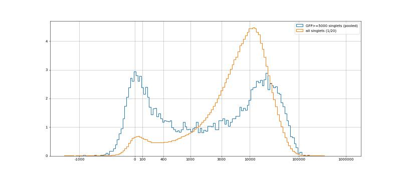
206
thinking
About half of the GFP-bright cells sit at Zombie ~10^4, not only near 0. To check whether that population is really dead, I'm comparing GFP intensity across the Zombie modes, since dead cells should have leaked GFP.
207
tool call · Bash
cd /task; python3 - <<'EOF'
import numpy as np, pandas as pd
lay=pd.read_csv('/task/inputs/plate_layout.csv')
import flowkit as fk
from matplotlib.path import Path
sg=fk.parse_gating_xml('/task/outputs/gates.xml').get_gate('Singlets'); P=Path(np.array(sg.vertices))
R=[]
for w in lay.well:
a=np.load(f'/task/work/npy/{w}.npy'); c=(a[:,1]>55000)&(a[:,2]<1040000); s=c&P.contains_points(a[:,[3,2]])
R.append(a[s])
A=np.concatenate(R)
neg=A[:,5]<400; mid=(A[:,5]>=400)&(A[:,5]<3000); hi=A[:,5]>=3000
for nm,m in [('Zneg<400',neg),('Z400-3000',mid),('Z>=3000',hi)]:
g=m&(A[:,4]>=1000)
print(f'{nm:10s} n={m.sum():8d} GFP>=1000: {g.sum():6d} ({100*g.mean()/m.mean():.2f}%) GFP+ BL1 median {np.median(A[g,4]):.0f} q75 {np.percentile(A[g,4],75):.0f} q90 {np.percentile(A[g,4],90):.0f} | all-events medians FSC {np.median(A[m,1]):.0f} SSC {np.median(A[m,2]):.0f} NCAM(VL1) {np.median(A[m,6]):.0f} | GFP+ FSC {np.median(A[g,1]):.0f} SSC {np.median(A[g,2]):.0f}')
EOF208
tool output
Zneg<400 n= 1572714 GFP>=1000: 9357 (0.59%) GFP+ BL1 median 3933 q75 16733 q90 74738 | all-events medians FSC 84635 SSC 71703 NCAM(VL1) 2206 | GFP+ FSC 227284 SSC 178813 Z400-3000 n= 4391807 GFP>=1000: 9875 (0.22%) GFP+ BL1 median 1799 q75 5892 q90 33902 | all-events medians FSC 94959 SSC 97675 NCAM(VL1) 1323 | GFP+ FSC 212469 SSC 297762 Z>=3000 n=15046732 GFP>=1000: 138287 (0.92%) GFP+ BL1 median 1224 q75 1515 q90 2305 | all-events medians FSC 140548 SSC 191511 NCAM(VL1) 2917 | GFP+ FSC 215169 SSC 489994
210
thinking
GFP+ cells sit bright in the Zombie-negative peak but mostly dim in the Zombie ≥3,000 group, which fits dead cells losing GFP. I'm keeping Live at RL3-A < 400 and running an independent numpy cross-check of the FlowKit counts before writing the deliverables.
211
tool call · Bash
cd /task; python3 - <<'EOF'
import numpy as np, pandas as pd, flowkit as fk
from matplotlib.path import Path
gs=fk.parse_gating_xml('/task/outputs/gates.xml')
Pc=Path(np.array(gs.get_gate('Cells').vertices)); Ps=Path(np.array(gs.get_gate('Singlets').vertices))
c=pd.read_csv('/task/work/counts_v2.csv')
for w in ['A1','B7','D5','C8']:
a=np.load(f'/task/work/npy/{w}.npy').astype(float)
C=Pc.contains_points(a[:,[1,2]]); S=C&Ps.contains_points(a[:,[3,2]]); L=S&(a[:,5]<400); G=L&(a[:,4]>=1000)
fk_=c[c.well==w].set_index('population')['count']
print(w, 'numpy', C.sum(),S.sum(),L.sum(),G.sum(),' flowkit', fk_['Cells'],fk_['Singlets'],fk_['Live'],fk_['GFP_pos'])
m=pd.read_csv('/task/work/meta.csv'); m['coinc_pct']=100*m.coinc/m.tot; print(m[['well','coinc_pct']].sort_values('coinc_pct').to_string())
EOF212
tool output
A1 numpy 767527 550981 57408 167 flowkit 767529 550983 57409 167 B7 numpy 708511 574601 29746 184 flowkit 708514 574604 29746 184 D5 numpy 109906 106550 3983 24 flowkit 109906 106550 3983 24 C8 numpy 452635 396473 23887 511 flowkit 452639 396477 23887 511 well coinc_pct 40 D5 1.496785 35 C12 6.045340 24 C1 6.146133 31 C8 6.418897 30 C7 6.555904 15 B4 6.713506 28 C5 6.945401 25 C2 6.995250 27 C4 7.073395 41 D6 7.115383 26 C3 7.304962 14 B3 7.578623 7 A8 7.957586 36 D1 8.080016 5 A6 8.158238 32 C9 8.611143 16 B5 8.757690 10 A11 8.782765 12 B1 8.851468 13 B2 8.869974 29 C6 8.950956 17 B6 9.060611 34 C11 9.088104 37 D2 9.115674 20 B9 9.219785 23 B12 9.314315 6 A7 9.629868 39 D4 9.691890 33 C10 9.749645 2 A3 9.750300 38 D3 9.909878 22 B11 9.948775 19 B8 9.960622 3 A4 9.976108 9 A10 9.979265 11 A12 10.003377 18 B7 10.260559 1 A2 10.300874 4 A5 10.577042 21 B10 10.991484 8 A9 11.354350 0 A1 17.626895
214
thinking
The numpy cross-check agrees with the FlowKit counts, within 4 events from polygon-edge handling. I'm now checking the two rate anomalies the 0.25-s scan flagged, at A10 near 86.75 s and C1 near 97.5 s, before writing up the evidence.
215
tool call · Bash
cd /task; python3 - <<'EOF'
import numpy as np
for w,t0 in [('A10',84),('C1',95)]:
a=np.load(f'/task/work/npy/{w}.npy'); t=a[:,0]/1000
b=np.arange(t0,t.max()+0.25,0.25); h,_=np.histogram(t,b); print(w, t.max(), [(round(x,2),int(y*4)) for x,y in zip(b,h)])
EOF216
tool output
A10 97.699 [(84.0, 8548), (84.25, 8244), (84.5, 8940), (84.75, 8984), (85.0, 8656), (85.25, 7888), (85.5, 7872), (85.75, 8316), (86.0, 7808), (86.25, 8536), (86.5, 8884), (86.75, 2024), (87.0, 11308), (87.25, 7552), (87.5, 8528), (87.75, 7044), (88.0, 6988), (88.25, 6824), (88.5, 6772), (88.75, 8044), (89.0, 7312), (89.25, 7520), (89.5, 7808), (89.75, 7760), (90.0, 8636), (90.25, 8736), (90.5, 8308), (90.75, 8424), (91.0, 9260), (91.25, 8260), (91.5, 8632), (91.75, 9984), (92.0, 9740), (92.25, 8792), (92.5, 7372), (92.75, 7200), (93.0, 9172), (93.25, 10996), (93.5, 8552), (93.75, 7752), (94.0, 7556), (94.25, 7120), (94.5, 6816), (94.75, 6232), (95.0, 6880), (95.25, 6868), (95.5, 6304), (95.75, 6124), (96.0, 5808), (96.25, 6152), (96.5, 5580), (96.75, 5212), (97.0, 5268), (97.25, 5488), (97.5, 3828)] C1 97.765 [(95.0, 6260), (95.25, 6004), (95.5, 6292), (95.75, 5816), (96.0, 6268), (96.25, 6212), (96.5, 6256), (96.75, 6392), (97.0, 6216), (97.25, 4848), (97.5, 9656), (97.75, 460)]
218
agent
Both are negligible: A10 has a single 0.25-s dip and rebound, and C1's is a partial final bin. Writing counts.csv and flags.csv from the saved gates.
219
tool call · Bash
cd /task; cat > work/make_outputs.py <<'EOF'
import flowkit as fk, pandas as pd, numpy as np, os
from multiprocessing import Pool
XML='/task/outputs/gates.xml'
lay=pd.read_csv('/task/inputs/plate_layout.csv')
POPS=[('Cells','all_events'),('Singlets','Cells'),('Live','Singlets'),('GFP_pos','Live')]
def one(row):
fn,well=row
gs=fk.parse_gating_xml(XML)
s=fk.Sample(os.path.join('/task/inputs/raw',fn))
rep=gs.gate_sample(s).report
tot=s.event_count
cnt={p:int(rep.loc[rep.gate_name==p,'count'].iloc[0]) for p,_ in POPS}
out=[]
for p,par in POPS:
pc=tot if par=='all_events' else cnt[par]
out.append(dict(file=fn,well=well,population=p,count=cnt[p],parent_population=par,pct_of_parent=round(100.0*cnt[p]/pc,4) if pc else 0.0))
return out
if __name__=='__main__':
with Pool(4) as p: res=p.map(one,list(zip(lay.file,lay.well)))
df=pd.DataFrame([r for o in res for r in o])
df.to_csv('/task/outputs/counts.csv',index=False)
print(len(df)); print(df.head(8).to_string())
EOF
python3 work/make_outputs.py220
tool output
168
file well population count parent_population pct_of_parent
0 Serotype panel_2_Rep2_Group_A1.fcs A1 Cells 767529 all_events 78.4212
1 Serotype panel_2_Rep2_Group_A1.fcs A1 Singlets 550983 Cells 71.7866
2 Serotype panel_2_Rep2_Group_A1.fcs A1 Live 57409 Singlets 10.4194
3 Serotype panel_2_Rep2_Group_A1.fcs A1 GFP_pos 167 Live 0.2909
4 Serotype panel_2_Rep2_Group_A2.fcs A2 Cells 719569 all_events 76.9011
5 Serotype panel_2_Rep2_Group_A2.fcs A2 Singlets 587820 Cells 81.6906
6 Serotype panel_2_Rep2_Group_A2.fcs A2 Live 42047 Singlets 7.1530
7 Serotype panel_2_Rep2_Group_A2.fcs A2 GFP_pos 252 Live 0.5993222
tool call · Bash
cd /task; cat > work/make_flags.py <<'EOF'
import pandas as pd, numpy as np
qc=pd.read_pickle('/task/work/qc.pkl'); meta=pd.read_csv('/task/work/meta.csv').set_index('well')
cnt=pd.read_csv('/task/outputs/counts.csv'); lay=pd.read_csv('/task/inputs/plate_layout.csv')
C=cnt.pivot(index='well',columns='population',values='count'); P=cnt.pivot(index='well',columns='population',values='pct_of_parent')
qc=qc.set_index('well')
def base(w):
r=qc.loc[w]; m=meta.loc[w]
s=(f"total {r.total:,} events in {r.dur:.1f} s at {m.flow} uL/min; Cells {C.loc[w,'Cells']:,} ({P.loc[w,'Cells']:.1f}%), "
f"Singlets {C.loc[w,'Singlets']:,} ({P.loc[w,'Singlets']:.1f}%), Live {C.loc[w,'Live']:,} ({P.loc[w,'Live']:.2f}%), GFP_pos {C.loc[w,'GFP_pos']:,} ({P.loc[w,'GFP_pos']:.2f}% of Live); "
f"median rate {r.med_rate:,.0f} ev/s (CV {r.cv_rate:.1f}% over 1-s bins), min {r.min_rate:,} ev/s at {r.min_pos} s, max {r.max_rate:,} ev/s at {r.max_pos} s; "
f"end-of-run (last 3 s) rate {r.end3:.2f}x median; events at scale max SSC-A {r['sat_SSC-A']:.2f}%, FSC-A {r['sat_FSC-A']:.2f}%, BL1-A {r['sat_BL1-A']:.3f}%, RL3-A {r['sat_RL3-A']:.3f}%")
return s
extra_ok={
'C6':'; brief burst at 3.25-4.0 s (peak 1-s bin 14,018 ev/s = 1.5x median, <1% of events), no gaps',
'C11':'; brief burst at 3.5 s (1-s bin 12,986 ev/s = 1.4x median), no gaps',
'D4':'; brief burst at 3.25-3.5 s (1-s bin 13,397 ev/s = 1.4x median), no gaps',
'A10':'; single 0.25-s dip to 2,024 ev/s at 86.75 s with immediate rebound; no other gaps',
'C3':'; rate declines over the final ~6 s to 0.29x median in the last second (sample running down; ~3% of events), Live%/GFP% in last 8 s 8.17/0.28 vs 8.37/0.44 mid-run (n GFP_pos small); not judged to compromise the well',
'C4':'; rate declines over the final ~6 s to 0.39x median in the last second (~3% of events), Live%/GFP% in last 8 s 5.20/1.08 vs 5.10/1.00 mid-run; not judged to compromise the well',
'C10':'; rate declines over the final ~5 s to 0.50x median (~3% of events); Live%/GFP% last 8 s 6.42/0.93 vs 6.16/0.99 mid-run',
'C2':'; rate declines over the final ~5 s to 0.45x median (~3% of events); Live% last 8 s 5.22 vs 5.04 mid-run',
}
flag={
'B7':('clog_or_interrupted_flow',
'erratic event rate for the whole run: rate CV 25.9% (other wells 4.5-9.1%); first 4 s at 312-1,821 ev/s vs median 10,200 (0.25-s bins near zero at 0-1.5 s, ~80% non-Cells events at start), second drop at 6 s, step to ~15,000 ev/s at ~13 s, burst to 17,476 ev/s at 29-31 s (1.7x median), near-zero 0.25-s dip at ~61 s; Zombie-negative peak broadened (mirrored 99th-pct upper edge 774 vs plate median 372); ',
'high'),
'B8':('clog_or_interrupted_flow',
'flow interrupted at start: 646, 92 and 34 ev/s in seconds 0-2 vs median 9,976, then a debris-rich restart (~90% non-Cells events at 2-4 s) and a burst to 15,194 ev/s at 9 s (1.5x median) decaying until ~20 s; rate CV 22.4% (other wells 4.5-9.1%); stable after ~20 s; Live%/GFP% first 10 s 6.45/0.78 vs 5.79/0.94 in 10 s to end-10 s; ',
'medium'),
'D5':('too_few_events',
'only 153,195 events (other wells 578,214-1,083,648; plate median ~868,000) at a steady 1,597 ev/s (CV 6.5%, no gaps or bursts, end-of-run 0.84x) i.e. a dilute/low-yield sample rather than a fluidics fault; Live 3,980 (other wells 15,086-65,553) and GFP_pos only 24 events (Poisson 95% CI ~15-36, about +/-40%); scatter profile also atypical (Singlets 96.9% of Cells vs 78.8-88.7% elsewhere, coincident count 1.5%); ',
'medium'),
'A1':('other',
'acquired at $#FLOWRATE 200 uL/min, the only well not at 100 uL/min (all other 41 wells), so run lasted 46.2 s vs ~97.8 s; median rate 21,595 ev/s (2x plate) and instrument coincident count 172,519 = 17.6% of events (other wells 1.5-11.4%); Singlets only 71.8% of Cells (lowest on plate; others 78.8-96.9%) and Zombie-negative peak shifted/broadened (mode -55 vs +15 to +125 elsewhere), so the plate-wide gates do not treat it like the other wells; duplicate A2: Live 7.15%, GFP_pos 0.60% vs A1 10.42%, 0.29%; flow itself stable; ',
'medium'),
}
rows=[]
for fn,w in zip(lay.file,lay.well):
if w in flag:
cat,ev,conf=flag[w]
rows.append(dict(file=fn,well=w,usable='no',reason_category=cat,evidence=ev+base(w)+f'; confidence: {conf}'))
else:
rows.append(dict(file=fn,well=w,usable='yes',reason_category='ok',evidence=base(w)+extra_ok.get(w,'; no low-rate intervals (<50% median) or bursts (>1.4x median)')))
df=pd.DataFrame(rows); df.to_csv('/task/outputs/flags.csv',index=False)
print(df.usable.value_counts()); print(df[df.usable=='no'][['well','reason_category']])
print(df.evidence.iloc[18]); print(); print(df.evidence.iloc[0]); print(); print(df.evidence.iloc[1])
EOF
python3 work/make_flags.py223
tool output
usable yes 38 no 4 Name: count, dtype: int64 well reason_category 0 A1 other 18 B7 clog_or_interrupted_flow 19 B8 clog_or_interrupted_flow 40 D5 too_few_events erratic event rate for the whole run: rate CV 25.9% (other wells 4.5-9.1%); first 4 s at 312-1,821 ev/s vs median 10,200 (0.25-s bins near zero at 0-1.5 s, ~80% non-Cells events at start), second drop at 6 s, step to ~15,000 ev/s at ~13 s, burst to 17,476 ev/s at 29-31 s (1.7x median), near-zero 0.25-s dip at ~61 s; Zombie-negative peak broadened (mirrored 99th-pct upper edge 774 vs plate median 372); total 954,909 events in 97.9 s at 100 uL/min; Cells 708,514 (74.2%), Singlets 574,604 (81.1%), Live 29,746 (5.18%), GFP_pos 184 (0.62% of Live); median rate 10,200 ev/s (CV 25.9% over 1-s bins), min 1,782 ev/s at 2 s, max 17,476 ev/s at 30 s; end-of-run (last 3 s) rate 0.89x median; events at scale max SSC-A 0.56%, FSC-A 0.12%, BL1-A 0.000%, RL3-A 0.001%; confidence: high acquired at $#FLOWRATE 200 uL/min, the only well not at 100 uL/min (all other 41 wells), so run lasted 46.2 s vs ~97.8 s; median rate 21,595 ev/s (2x plate) and instrument coincident count 172,519 = 17.6% of events (other wells 1.5-11.4%); Singlets only 71.8% of Cells (lowest on plate; others 78.8-96.9%) and Zombie-negative peak shifted/broadened (mode -55 vs +15 to +125 elsewhere), so the plate-wide gates do not treat it like the other wells; duplicate A2: Live 7.15%, GFP_pos 0.60% vs A1 10.42%, 0.29%; flow itself stable; total 978,726 events in 46.2 s at 200 uL/min; Cells 767,529 (78.4%), Singlets 550,983 (71.8%), Live 57,409 (10.42%), GFP_pos 167 (0.29% of Live); median rate 21,595 ev/s (CV 5.3% over 1-s bins), min 17,413 ev/s at 43 s, max 22,801 ev/s at 1 s; end-of-run (last 3 s) rate 0.87x median; events at scale max SSC-A 1.17%, FSC-A 0.19%, BL1-A 0.001%, RL3-A 0.000%; confidence: medium total 935,707 events in 97.9 s at 100 uL/min; Cells 719,569 (76.9%), Singlets 587,820 (81.7%), Live 42,047 (7.15%), GFP_pos 252 (0.60% of Live); median rate 9,736 ev/s (CV 5.5% over 1-s bins), min 7,499 ev/s at 95 s, max 10,799 ev/s at 7 s; end-of-run (last 3 s) rate 0.83x median; events at scale max SSC-A 0.50%, FSC-A 0.07%, BL1-A 0.002%, RL3-A 0.000%; no low-rate intervals (<50% median) or bursts (>1.4x median)
225
agent
Verifying the specific time positions quoted in the B7/B8 evidence and the plate ranges I cite.
226
tool call · Bash
cd /task; python3 - <<'EOF'
import numpy as np, pandas as pd
for w in ['B7','B8']:
a=np.load(f'/task/work/npy/{w}.npy'); t=a[:,0]/1000
h,_=np.histogram(t,np.arange(0,20,1.0)); print(w,'1-s bins 0-19:',h.tolist())
b=np.arange(55,66,0.25); h4,_=np.histogram(t,b); print(w,'55-66 s 0.25-bins ev/s:',[(round(x,2),int(y*4)) for x,y in zip(b,h4) if y*4<6000])
cells=(a[:,1]>55000)&(a[:,2]<1040000)
for lo,hi in [(0,1),(1,2),(2,3),(3,4),(4,5),(5,6),(10,20),(30,90)]:
m=(t>=lo)&(t<hi); print(f' {lo}-{hi}s n={m.sum()} nonCells={100*np.mean(~cells[m]):.0f}%')
c=pd.read_csv('/task/outputs/counts.csv'); L=c[c.population=='Live'].set_index('well')['count']; print('Live min/max excl D5', L.drop('D5').min(), L.drop('D5').idxmin(), L.drop('D5').max())
EOF227
tool output
B7 1-s bins 0-19: [312, 1784, 1782, 1821, 5517, 6581, 4917, 6822, 8594, 9558, 8165, 6766, 5301, 5149, 13961, 13981, 13534, 12951, 12643] B7 55-66 s 0.25-bins ev/s: [(55.75, 3920), (56.25, 5592), (58.0, 2760), (59.5, 2332), (61.5, 1096), (61.75, 24), (62.0, 20)] 0-1s n=312 nonCells=81% 1-2s n=1784 nonCells=23% 2-3s n=1782 nonCells=34% 3-4s n=1821 nonCells=38% 4-5s n=5517 nonCells=28% 5-6s n=6581 nonCells=30% 10-20s n=104452 nonCells=26% 30-90s n=615130 nonCells=25% B8 1-s bins 0-19: [646, 92, 34, 2202, 6262, 6101, 5643, 6008, 11868, 15194, 14707, 14229, 13547, 12266, 11491, 10976, 10712, 10268, 10218] B8 55-66 s 0.25-bins ev/s: [] 0-1s n=646 nonCells=74% 1-2s n=92 nonCells=92% 2-3s n=34 nonCells=91% 3-4s n=2202 nonCells=38% 4-5s n=6262 nonCells=30% 5-6s n=6101 nonCells=31% 10-20s n=118504 nonCells=27% 30-90s n=583607 nonCells=25% Live min/max excl D5 15088 C1 65556
229
tool call · Bash
cd /task; python3 - <<'EOF'
p='/task/work/make_flags.py'; s=open(p).read()
s=s.replace("first 4 s at 312-1,821 ev/s vs median 10,200 (0.25-s bins near zero at 0-1.5 s, ~80% non-Cells events at start), second drop at 6 s, step to ~15,000 ev/s at ~13 s, burst to 17,476 ev/s at 29-31 s (1.7x median), near-zero 0.25-s dip at ~61 s; Zombie-negative peak broadened (mirrored 99th-pct upper edge 774 vs plate median 372); ",
"seconds 0-3 at 312-1,821 ev/s vs median 10,200 (81% non-Cells events in 0-1 s), further dips at 6 s (4,917) and 11-13 s (5,149-6,766), step up to ~14,000 ev/s at 14 s, burst to 17,476 ev/s at 29-31 s (1.7x median), repeated drops at 56-62 s down to ~20 ev/s in 0.25-s bins at 61.75-62.0 s (flow stop); Zombie-negative peak on Singlets broadened (mirrored 99th-pct upper edge ~770 vs plate median ~370); ")
s=s.replace("flow interrupted at start: 646, 92 and 34 ev/s in seconds 0-2 vs median 9,976, then a debris-rich restart (~90% non-Cells events at 2-4 s) and a burst to 15,194 ev/s at 9 s (1.5x median) decaying until ~20 s;",
"flow interrupted at start: 646, 92 and 34 ev/s in seconds 0-2 vs median 9,976 (74-92% non-Cells events), 2,202-6,262 ev/s in seconds 3-7, then a burst to 15,194 ev/s at 9 s (1.5x median) decaying to ~10,200 ev/s by 17-18 s;")
s=s.replace("Live 3,980 (other wells 15,086-65,553)","Live 3,983 (other wells 15,088-65,556)")
s=s.replace("Singlets only 71.8% of Cells (lowest on plate; others 78.8-96.9%) and Zombie-negative peak shifted/broadened (mode -55 vs +15 to +125 elsewhere), so the plate-wide gates do not treat it like the other wells;",
"Singlets only 71.8% of Cells (lowest on plate; others 78.8-96.9%) and SSC-A/SSC-H ridge visibly broader, so the plate-wide gates do not act on it as on the other wells;")
s=s.replace("stable after ~20 s;","stable thereafter;")
open(p,'w').write(s)
EOF
grep -c "15,088" work/make_flags.py; python3 work/make_flags.py | head -8; python3 -c "
import pandas as pd; d=pd.read_csv('/task/outputs/flags.csv'); print(d.shape, d.columns.tolist()); print(d[d.usable=='no'].evidence.str[-20:].tolist())"230
tool output
1 usable yes 38 no 4 Name: count, dtype: int64 well reason_category 0 A1 other 18 B7 clog_or_interrupted_flow 19 B8 clog_or_interrupted_flow (42, 5) ['file', 'well', 'usable', 'reason_category', 'evidence'] ['; confidence: medium', '1%; confidence: high', '; confidence: medium', '; confidence: medium']
232
agent
Checking the A1 claim that its SSC-A/SSC-H ridge is broader than other wells'.
233
tool call · Bash
cd /task; python3 - <<'EOF'
import numpy as np, pandas as pd
lay=pd.read_csv('/task/inputs/plate_layout.csv'); out={}
for w in lay.well:
a=np.load(f'/task/work/npy/{w}.npy'); m=(a[:,1]>55000)&(a[:,2]<1040000)&(a[:,3]>0)
r=a[m,2]/a[m,3]; q=np.percentile(r,[10,25,50,75])
out[w]=(round(q[2],3), round(q[3]-q[1],3), round(q[2]-q[0],3))
s=pd.DataFrame(out,index=['median','IQR','med-q10']).T; print(s.sort_values('IQR').to_string())
EOF234
tool output
median IQR med-q10 D5 1.188 0.136 0.117 C12 1.209 0.189 0.137 C1 1.206 0.194 0.139 C5 1.213 0.207 0.143 D6 1.208 0.207 0.143 B4 1.209 0.210 0.142 C7 1.204 0.210 0.141 C8 1.211 0.212 0.144 C2 1.212 0.216 0.146 C4 1.218 0.216 0.147 A6 1.222 0.219 0.146 A8 1.221 0.223 0.145 C3 1.217 0.232 0.149 B3 1.217 0.234 0.148 D1 1.213 0.237 0.148 A11 1.222 0.245 0.153 C9 1.221 0.246 0.151 D2 1.221 0.251 0.153 C11 1.225 0.252 0.154 B5 1.221 0.254 0.153 C6 1.225 0.256 0.156 A3 1.225 0.256 0.152 B9 1.229 0.258 0.156 A4 1.231 0.258 0.155 B12 1.230 0.260 0.159 A7 1.227 0.268 0.155 C10 1.227 0.269 0.156 D4 1.227 0.269 0.157 A2 1.235 0.272 0.156 B6 1.225 0.272 0.156 A12 1.230 0.273 0.158 B8 1.229 0.273 0.159 B11 1.229 0.274 0.161 A10 1.231 0.275 0.157 B2 1.226 0.276 0.156 B1 1.225 0.278 0.155 A5 1.232 0.281 0.158 D3 1.228 0.281 0.159 B7 1.229 0.288 0.161 B10 1.238 0.307 0.167 A9 1.241 0.330 0.169 A1 1.280 0.499 0.210
236
agent
A1 is clearly the outlier: SSC-A/SSC-H median 1.28 and IQR 0.50, against 1.19–1.24 and 0.14–0.33 in every other well. Adding those numbers to its evidence.
237
tool call · Bash
cd /task; python3 - <<'EOF'
p='/task/work/make_flags.py'; s=open(p).read()
s=s.replace("and SSC-A/SSC-H ridge visibly broader,","and SSC-A/SSC-H ratio of Cells broadened (median 1.28, IQR 0.50 vs 1.19-1.24 and 0.14-0.33 in all other wells),")
open(p,'w').write(s)
EOF
python3 work/make_flags.py >/dev/null; python3 -c "
import pandas as pd; d=pd.read_csv('/task/outputs/flags.csv'); print(d.evidence[0])"238
tool output
acquired at $#FLOWRATE 200 uL/min, the only well not at 100 uL/min (all other 41 wells), so run lasted 46.2 s vs ~97.8 s; median rate 21,595 ev/s (2x plate) and instrument coincident count 172,519 = 17.6% of events (other wells 1.5-11.4%); Singlets only 71.8% of Cells (lowest on plate; others 78.8-96.9%) and SSC-A/SSC-H ratio of Cells broadened (median 1.28, IQR 0.50 vs 1.19-1.24 and 0.14-0.33 in all other wells), so the plate-wide gates do not act on it as on the other wells; duplicate A2: Live 7.15%, GFP_pos 0.60% vs A1 10.42%, 0.29%; flow itself stable; total 978,726 events in 46.2 s at 200 uL/min; Cells 767,529 (78.4%), Singlets 550,983 (71.8%), Live 57,409 (10.42%), GFP_pos 167 (0.29% of Live); median rate 21,595 ev/s (CV 5.3% over 1-s bins), min 17,413 ev/s at 43 s, max 22,801 ev/s at 1 s; end-of-run (last 3 s) rate 0.87x median; events at scale max SSC-A 1.17%, FSC-A 0.19%, BL1-A 0.001%, RL3-A 0.000%; confidence: medium
240
agent
Now writing notes.md, after a quick check that gates.xml uses uncompensated dimensions with no transforms.
241
tool call · Bash
cd /task; cat outputs/gates.xml | head -80; grep -c "uncompensated" outputs/gates.xml; grep -ci "transform" outputs/gates.xml
242
tool output
<?xml version='1.0' encoding='UTF-8'?>
<gating:Gating-ML xmlns:gating="http://www.isac-net.org/std/Gating-ML/v2.0/gating" xmlns:data-type="http://www.isac-net.org/std/Gating-ML/v2.0/datatypes" xmlns:transforms="http://www.isac-net.org/std/Gating-ML/v2.0/transformations">
<gating:PolygonGate gating:id="Cells">
<gating:dimension gating:compensation-ref="uncompensated">
<data-type:fcs-dimension data-type:name="FSC-A"/>
</gating:dimension>
<gating:dimension gating:compensation-ref="uncompensated">
<data-type:fcs-dimension data-type:name="SSC-A"/>
</gating:dimension>
<gating:vertex>
<gating:coordinate data-type:value="55000"/>
<gating:coordinate data-type:value="1000"/>
</gating:vertex>
<gating:vertex>
<gating:coordinate data-type:value="55000"/>
<gating:coordinate data-type:value="350000"/>
</gating:vertex>
<gating:vertex>
<gating:coordinate data-type:value="130000"/>
<gating:coordinate data-type:value="1040000"/>
</gating:vertex>
<gating:vertex>
<gating:coordinate data-type:value="1040000"/>
<gating:coordinate data-type:value="1040000"/>
</gating:vertex>
<gating:vertex>
<gating:coordinate data-type:value="1040000"/>
<gating:coordinate data-type:value="1000"/>
</gating:vertex>
</gating:PolygonGate>
<gating:PolygonGate gating:id="Singlets" gating:parent_id="Cells">
<gating:dimension gating:compensation-ref="uncompensated">
<data-type:fcs-dimension data-type:name="SSC-H"/>
</gating:dimension>
<gating:dimension gating:compensation-ref="uncompensated">
<data-type:fcs-dimension data-type:name="SSC-A"/>
</gating:dimension>
<gating:vertex>
<gating:coordinate data-type:value="0"/>
<gating:coordinate data-type:value="0"/>
</gating:vertex>
<gating:vertex>
<gating:coordinate data-type:value="100000"/>
<gating:coordinate data-type:value="85000"/>
</gating:vertex>
<gating:vertex>
<gating:coordinate data-type:value="300000"/>
<gating:coordinate data-type:value="300000"/>
</gating:vertex>
<gating:vertex>
<gating:coordinate data-type:value="1100000"/>
<gating:coordinate data-type:value="1150000"/>
</gating:vertex>
<gating:vertex>
<gating:coordinate data-type:value="600000"/>
<gating:coordinate data-type:value="1080000"/>
</gating:vertex>
<gating:vertex>
<gating:coordinate data-type:value="300000"/>
<gating:coordinate data-type:value="510000"/>
</gating:vertex>
<gating:vertex>
<gating:coordinate data-type:value="150000"/>
<gating:coordinate data-type:value="232500"/>
</gating:vertex>
<gating:vertex>
<gating:coordinate data-type:value="50000"/>
<gating:coordinate data-type:value="72500"/>
</gating:vertex>
</gating:PolygonGate>
<gating:RectangleGate gating:id="Live" gating:parent_id="Singlets">
<gating:dimension gating:compensation-ref="uncompensated" gating:max="400.0">
<data-type:fcs-dimension data-type:name="RL3-A"/>
</gating:dimension>
</gating:RectangleGate>
<gating:RectangleGate gating:id="GFP_pos" gating:parent_id="Live">
<gating:dimension gating:compensation-ref="uncompensated" gating:min="1000.0">
<data-type:fcs-dimension data-type:name="BL1-A"/>
</gating:dimension>
</gating:RectangleGate>
6
1244
tool call · Write
{
"file_path": "/task/outputs/notes.md",
"content": "# Plate 230306 (AAV serotype panel, rep 2): FlowKit gating notes\n\n## Gates\nI built one FlowKit GatingStrategy (`gates.xml`, reloads with `parse_gating_xml`) for all 42 wells. Every gate uses raw, uncompensated channels with no transform; a logicle display (T=2^20, W=1.5, M=6) was used only for looking at the data. Counts come from `gate_sample` on the saved file.\n\n- **Cells** (PolygonGate, FSC-A x SSC-A): vertices (55k,1k), (55k,350k), (130k,1.04M), (1.04M,1.04M), (1.04M,1k).\n - The left edge at FSC-A 55,000 is the valley between the debris peak (FSC-A 25-40k, just above the 25,000 FSC threshold) and the cell peak (~140k). It was read off log FSC-A histograms and sits in the same place in all 42 wells.\n - The top and right edges at 1,040,000 exclude events piled at the scale maximum (1,048,575).\n- **Singlets** (PolygonGate, SSC-H x SSC-A): a band along the diagonal.\n - Lower edge: SSC-A/SSC-H about 0.85 rising to 1.05.\n - Upper edge: ratio 1.45 at SSC-H 50k, 1.55 at 150k, 1.70 at 300k and 1.80 at 600k.\n - This follows the singlet ridge, whose median ratio rises from 1.12 to 1.5 with SSC-H, and excludes the doublet/aggregate fan above it. GFP-bright live cells sit at ratio 1.3-1.6, so a flat 1.4 cut-off would have removed about half of them.\n- **Live** (1-D RectangleGate, RL3-A < 400): on Singlets, every well shows a small Zombie NIR-negative peak centred at about 0-100 and a large Zombie-bright peak at about 10^4 (roughly 90% of singlets).\n - The logicle valley between the two peaks lies at 250-500 (median ~340) in every well. The negative peak's lower half, mirrored, puts its upper edge at ~370 (99th percentile, median of wells; interquartile range 315-404) and ~405 (99.5th percentile), so I placed the cut-off at 400.\n - Evidence that the negative peak is the live cells: GFP-bright cells concentrate there. GFP+ events in the Zombie-bright peak are mostly dim (median BL1 1,224 vs 3,933 in the negative peak), as expected for dead cells that have leaked GFP.\n- **GFP_pos** (1-D RectangleGate, BL1-A >= 1000, inside Live): set on the wells with the fewest GFP-bright events, B1 and B2 (7 and 22 Live events above 2,000), with B4 as a check.\n - In B1, the number of Live events above a threshold falls steeply up to ~900 (67 above 500, 19 above 800, 14 above 900), then levels off (13 above 1,000, 9 above 1,200, 8 above 1,500). So the edge of the GFP-negative population is ~900, and 1,000 sits just above it.\n - The GFP-negative Live peak is similar in every well (median 42-74, 90th percentile 135-263), so one cut-off fits the whole plate.\n\n## Quality control\n- **Metadata:** I compared all TEXT keywords across the 42 files. $PnN/$PnS, voltages (FSC 30, SSC 300, BL1 250, VL1 300, RL3 300, matching the notebook), spillover (identity), date, threshold and $WELLID/$FIL vs file name are identical or consistent. The only difference is `$#FLOWRATE` = 200 \u00b5L/min in A1 (100 \u00b5L/min in the other 41 wells).\n- **Time:** I made event-rate profiles in 1-s and 0.25-s bins. For each well I recorded:\n - median rate and rate CV;\n - seconds below 50% of the median, and bursts above 1.4x;\n - end-of-run rate (last 3 s);\n - non-Cells %, Live % and GFP_pos % in the first 10 s, in the stable window (10 s to end-10 s) and in the last 8 s.\n- **Saturation and counts:** I measured % of events at the scale maximum (SSC-A \u22641.2%, FSC-A \u22640.3%, BL1-A \u22640.012%, RL3-A ~0, so nothing was flagged for saturation) and compared total and gated counts with the rest of the plate. There are no control wells, so `bad_control` does not apply.\n- **Flagged (4 wells):**\n - **B7** (clog/interrupted flow, high): erratic rate all run (CV 26% vs 4.5-9% elsewhere), near-zero start, burst at 30 s, flow stop at ~62 s.\n - **B8** (clog/interrupted flow, medium): rate of 34-646 ev/s for the first 3 s, then a burst at 9 s.\n - **D5** (too few events, medium): 153k events, 3,983 Live and 24 GFP_pos, at a steady but low rate.\n - **A1** (other, medium): run at 2x flow rate, with 17.6% coincident events and the lowest singlet fraction on the plate.\n- **Not flagged:**\n - Rate tapers off over the last ~5 s in many wells (worst C3, last second at 0.29x median, about 3% of events). The extra events are debris that the Cells gate removes, and Live%/GFP% barely move.\n - Sub-second bursts of about 1.5x the median at ~3 s in C6, C11 and D4.\n - One 0.25-s dip in A10.\n- Duplicate wells often differ 2-3x in GFP_pos% (e.g. B3/B4, C7/C8). Serotype is not recorded, so I did not flag any well on that basis. GFP_pos counts are small (13-511), so the percentages carry Poisson error of about 5-30%.\n\n## Deviations\nNone in population order, parents, axes or gate types (polygon, polygon, 1-D rectangle with max only, 1-D rectangle with min only). Points of interpretation:\n1. The fluorescence gates are 1-D (allowed by the strategy) and given in raw units, not drawn on a logicle axis.\n2. The singlet polygon widens with SSC-H (upper ratio 1.45 to 1.8) so that it follows the curved singlet ridge.\n3. The Live boundary keeps only the Zombie-negative peak (4-15% of Singlets) and treats the large ~10^4 peak as dead.\n"
}245
tool output
File created successfully at: /task/outputs/notes.md (file state is current in your context — no need to Read it back)
247
tool call · Bash
cd /task; python3 - <<'EOF'
p='/task/outputs/notes.md'; s=open(p).read()
s=s.replace("The logicle valley between the two peaks lies at 250-500 (median ~340) in every well.","The logicle valley between the two peaks lies at ~200-500 (median ~340) in every well except A1 and D5, where the negative peak is shifted or sparse.")
s=s.replace("keeps only the Zombie-negative peak (4-15% of Singlets)","keeps only the Zombie-negative peak (3-15% of Singlets)")
open(p,'w').write(s)
EOF
wc -w outputs/notes.md; ls -la outputs248
tool output
901 outputs/notes.md total 56 drwxr-xr-x 2 root root 4096 Nov 10 17:38 . drwxr-xr-x 5 root root 4096 Nov 10 17:19 .. -rw-r--r-- 1 root root 11243 Nov 10 17:36 counts.csv -rw-r--r-- 1 root root 21651 Nov 10 17:37 flags.csv -rw-r--r-- 1 root root 3411 Nov 10 17:31 gates.xml -rw-r--r-- 1 root root 5198 Nov 10 17:38 notes.md
250
agent
notes.md is 901 words, too long for one page. Tightening it to about 600 words.
251
tool call · Read
{
"file_path": "/task/outputs/notes.md"
}252
tool output
1 # Plate 230306 (AAV serotype panel, rep 2): FlowKit gating notes 2 3 ## Gates 4 I built one FlowKit GatingStrategy (`gates.xml`, reloads with `parse_gating_xml`) for all 42 wells. Every gate uses raw, uncompensated channels with no transform; a logicle display (T=2^20, W=1.5, M=6) was used only for looking at the data. Counts come from `gate_sample` on the saved file. 5 6 - **Cells** (PolygonGate, FSC-A x SSC-A): vertices (55k,1k), (55k,350k), (130k,1.04M), (1.04M,1.04M), (1.04M,1k). 7 - The left edge at FSC-A 55,000 is the valley between the debris peak (FSC-A 25-40k, just above the 25,000 FSC threshold) and the cell peak (~140k). It was read off log FSC-A histograms and sits in the same place in all 42 wells. 8 - The top and right edges at 1,040,000 exclude events piled at the scale maximum (1,048,575). 9 - **Singlets** (PolygonGate, SSC-H x SSC-A): a band along the diagonal. 10 - Lower edge: SSC-A/SSC-H about 0.85 rising to 1.05. 11 - Upper edge: ratio 1.45 at SSC-H 50k, 1.55 at 150k, 1.70 at 300k and 1.80 at 600k. 12 - This follows the singlet ridge, whose median ratio rises from 1.12 to 1.5 with SSC-H, and excludes the doublet/aggregate fan above it. GFP-bright live cells sit at ratio 1.3-1.6, so a flat 1.4 cut-off would have removed about half of them. 13 - **Live** (1-D RectangleGate, RL3-A < 400): on Singlets, every well shows a small Zombie NIR-negative peak centred at about 0-100 and a large Zombie-bright peak at about 10^4 (roughly 90% of singlets). 14 - The logicle valley between the two peaks lies at ~200-500 (median ~340) in every well except A1 and D5, where the negative peak is shifted or sparse. The negative peak's lower half, mirrored, puts its upper edge at ~370 (99th percentile, median of wells; interquartile range 315-404) and ~405 (99.5th percentile), so I placed the cut-off at 400. 15 - Evidence that the negative peak is the live cells: GFP-bright cells concentrate there. GFP+ events in the Zombie-bright peak are mostly dim (median BL1 1,224 vs 3,933 in the negative peak), as expected for dead cells that have leaked GFP. 16 - **GFP_pos** (1-D RectangleGate, BL1-A >= 1000, inside Live): set on the wells with the fewest GFP-bright events, B1 and B2 (7 and 22 Live events above 2,000), with B4 as a check. 17 - In B1, the number of Live events above a threshold falls steeply up to ~900 (67 above 500, 19 above 800, 14 above 900), then levels off (13 above 1,000, 9 above 1,200, 8 above 1,500). So the edge of the GFP-negative population is ~900, and 1,000 sits just above it. 18 - The GFP-negative Live peak is similar in every well (median 42-74, 90th percentile 135-263), so one cut-off fits the whole plate. 19 20 ## Quality control 21 - **Metadata:** I compared all TEXT keywords across the 42 files. $PnN/$PnS, voltages (FSC 30, SSC 300, BL1 250, VL1 300, RL3 300, matching the notebook), spillover (identity), date, threshold and $WELLID/$FIL vs file name are identical or consistent. The only difference is `$#FLOWRATE` = 200 µL/min in A1 (100 µL/min in the other 41 wells). 22 - **Time:** I made event-rate profiles in 1-s and 0.25-s bins. For each well I recorded: 23 - median rate and rate CV; 24 - seconds below 50% of the median, and bursts above 1.4x; 25 - end-of-run rate (last 3 s); 26 - non-Cells %, Live % and GFP_pos % in the first 10 s, in the stable window (10 s to end-10 s) and in the last 8 s. 27 - **Saturation and counts:** I measured % of events at the scale maximum (SSC-A ≤1.2%, FSC-A ≤0.3%, BL1-A ≤0.012%, RL3-A ~0, so nothing was flagged for saturation) and compared total and gated counts with the rest of the plate. There are no control wells, so `bad_control` does not apply. 28 - **Flagged (4 wells):** 29 - **B7** (clog/interrupted flow, high): erratic rate all run (CV 26% vs 4.5-9% elsewhere), near-zero start, burst at 30 s, flow stop at ~62 s. 30 - **B8** (clog/interrupted flow, medium): rate of 34-646 ev/s for the first 3 s, then a burst at 9 s. 31 - **D5** (too few events, medium): 153k events, 3,983 Live and 24 GFP_pos, at a steady but low rate. 32 - **A1** (other, medium): run at 2x flow rate, with 17.6% coincident events and the lowest singlet fraction on the plate. 33 - **Not flagged:** 34 - Rate tapers off over the last ~5 s in many wells (worst C3, last second at 0.29x median, about 3% of events). The extra events are debris that the Cells gate removes, and Live%/GFP% barely move. 35 - Sub-second bursts of about 1.5x the median at ~3 s in C6, C11 and D4. 36 - One 0.25-s dip in A10. 37 - Duplicate wells often differ 2-3x in GFP_pos% (e.g. B3/B4, C7/C8). Serotype is not recorded, so I did not flag any well on that basis. GFP_pos counts are small (13-511), so the percentages carry Poisson error of about 5-30%. 38 39 ## Deviations 40 None in population order, parents, axes or gate types (polygon, polygon, 1-D rectangle with max only, 1-D rectangle with min only). Points of interpretation: 41 1. The fluorescence gates are 1-D (allowed by the strategy) and given in raw units, not drawn on a logicle axis. 42 2. The singlet polygon widens with SSC-H (upper ratio 1.45 to 1.8) so that it follows the curved singlet ridge. 43 3. The Live boundary keeps only the Zombie-negative peak (3-15% of Singlets) and treats the large ~10^4 peak as dead. 44
253
tool call · Write
{
"file_path": "/task/outputs/notes.md",
"content": "# Plate 230306 (AAV serotype panel, rep 2): FlowKit gating notes\n\n## Gates\nThere is one GatingStrategy for all 42 wells (`gates.xml`, reloads with `parse_gating_xml`). All gates are on raw, uncompensated channels with no transform; logicle (T=2^20, W=1.5, M=6) was used only for display. Counts come from `gate_sample` on the saved gates.\n\n- **Cells** (polygon, FSC-A x SSC-A): vertices (55k,1k), (55k,350k), (130k,1.04M), (1.04M,1.04M), (1.04M,1k).\n - The FSC-A 55,000 edge is the valley between debris (25-40k, at the 25,000 threshold) and cells (~140k), in the same place in all wells.\n - The 1,040,000 edges exclude events at the scale maximum.\n- **Singlets** (polygon, SSC-H x SSC-A): a band along the diagonal.\n - Lower edge: SSC-A/SSC-H 0.85-1.05.\n - Upper edge: 1.45 at SSC-H 50k, rising to 1.55 (150k), 1.70 (300k) and 1.80 (600k).\n - This follows the singlet ridge (median ratio 1.12 rising to 1.5) and excludes the doublet fan. GFP-bright live cells sit at 1.3-1.6, so a flat 1.4 cut would lose about half of them.\n- **Live** (1-D rectangle, RL3-A < 400): Singlets show a small Zombie-negative peak at ~0-100 and a large Zombie-bright peak at ~10^4.\n - The logicle valley lies at ~200-500 (median ~340) in all wells except A1 and D5. The mirrored lower half of the negative peak puts its upper edge at ~370 (99th percentile, median of wells) to ~405 (99.5th).\n - The negative peak is the live cells: GFP-bright cells sit in it. GFP+ events in the bright peak are dim (median BL1 1,224 vs 3,933), as expected for dead cells that have leaked GFP.\n- **GFP_pos** (1-D rectangle, BL1-A >= 1000, inside Live): set on B1 and B2, the wells with fewest GFP-bright events (7 and 22 Live events above 2,000), checked on B4.\n - In B1, Live events above a threshold fall steeply up to ~900 (67 above 500, 19 above 800, 14 above 900), then level off (13 above 1,000, 8 above 1,500). The negative edge is therefore ~900, and 1,000 sits just above it.\n - The GFP-negative peak is the same in all wells (median 42-74, 90th percentile 135-263).\n\n## Quality control\n- **Metadata:** I diffed all TEXT keywords across the 42 files. Voltages match the notebook, and $PnS, spillover (identity), date, threshold and well ID vs file name are all consistent. The only difference is `$#FLOWRATE` 200 \u00b5L/min in A1 (100 in the other 41).\n- **Time:** event rate in 1-s and 0.25-s bins. For each well I recorded:\n - median rate and CV;\n - seconds below 0.5x median, and bursts above 1.4x;\n - last-3-s rate;\n - non-Cells %, Live % and GFP_pos % in the first 10 s, mid-run and last 8 s.\n- **Saturation:** % of events at the scale maximum (SSC-A \u22641.2%, FSC-A \u22640.3%, BL1 \u22640.012%, RL3 ~0), so none flagged. Total and gated counts were compared across wells. There are no controls, so `bad_control` does not apply.\n- **Flagged:**\n - **B7** (clog, high): erratic rate (CV 26% vs 4.5-9%), near-zero start, burst at 30 s, flow stop at ~62 s.\n - **B8** (clog, medium): 34-646 ev/s for the first 3 s, then a burst at 9 s.\n - **D5** (too few events, medium): 153k events, 3,983 Live, 24 GFP_pos, at a steady but low rate.\n - **A1** (other, medium): 2x flow rate, 17.6% coincident events, lowest singlet fraction (71.8%).\n- **Not flagged:**\n - End-of-run taper over the last ~5 s in many wells (worst C3, 0.29x median in the last second, ~3% of events). This adds debris only, and Live%/GFP% are unchanged.\n - Bursts of under 1 s (~1.5x) at ~3 s in C6, C11 and D4, and one 0.25-s dip in A10.\n - Duplicates that differ 2-3x in GFP_pos% (e.g. B3/B4, C7/C8): serotype is unknown, so this is not a flag criterion. GFP_pos counts are 13-511 events, i.e. 5-30% Poisson error.\n\n## Deviations\nNone in population order, parents, axes or gate types. Interpretation choices:\n1. Fluorescence gates are 1-D, in raw units.\n2. The singlet polygon widens with SSC-H.\n3. Live is only the Zombie-negative peak (3-15% of Singlets), and the ~10^4 peak is treated as dead.\n"
}254
tool output
The file /task/outputs/notes.md has been updated successfully. (file state is current in your context — no need to Read it back)
256
agent
Final validation of all deliverables against the spec.
257
tool call · Bash
cd /task; python3 - <<'EOF'
import pandas as pd, flowkit as fk
lay=pd.read_csv('inputs/plate_layout.csv')
c=pd.read_csv('outputs/counts.csv'); f=pd.read_csv('outputs/flags.csv')
assert list(c.columns)==['file','well','population','count','parent_population','pct_of_parent'] and len(c)==168
assert set(zip(c.file,c.well))==set(zip(lay.file,lay.well))
assert (c.groupby('well').population.apply(list).apply(lambda x: x==['Cells','Singlets','Live','GFP_pos'])).all()
par={'Cells':'all_events','Singlets':'Cells','Live':'Singlets','GFP_pos':'Live'}; assert (c.parent_population==c.population.map(par)).all()
assert c['count'].dtype.kind=='i' and c.pct_of_parent.between(0,100).all()
# nesting monotone
p=c.pivot(index='well',columns='population',values='count'); assert ((p.Cells>=p.Singlets)&(p.Singlets>=p.Live)&(p.Live>=p.GFP_pos)).all()
assert list(f.columns)==['file','well','usable','reason_category','evidence'] and len(f)==42 and list(f.file)==list(lay.file)
cats={'ok','clog_or_interrupted_flow','ran_dry','too_few_events','saturation','bad_control','mislabeled_or_unexpected','other'}
assert f.reason_category.isin(cats).all() and f.usable.isin(['yes','no']).all()
assert ((f.reason_category=='ok')==(f.usable=='yes')).all()
assert f[f.usable=='no'].evidence.str.contains(r'confidence: (high|medium|low)$').all()
gs=fk.parse_gating_xml('outputs/gates.xml'); print(gs.get_gate_hierarchy(output='ascii'))
s=fk.Sample('inputs/raw/Serotype panel_2_Rep2_Group_C8.fcs'); r=gs.gate_sample(s).report
print(r[['gate_name','count']].to_string()); print(c[c.well=='C8'][['population','count']].to_string())
print('ALL CHECKS PASSED')
EOF
head -c 600 outputs/flags.csv258
tool output
<stdin>:15: UserWarning: This pattern is interpreted as a regular expression, and has match groups. To actually get the groups, use str.extract.
root
╰── Cells
╰── Singlets
╰── Live
╰── GFP_pos
gate_name count
0 Cells 452639
1 Singlets 396477
2 Live 23887
3 GFP_pos 511
population count
124 Cells 452639
125 Singlets 396477
126 Live 23887
127 GFP_pos 511
ALL CHECKS PASSED
file,well,usable,reason_category,evidence
Serotype panel_2_Rep2_Group_A1.fcs,A1,no,other,"acquired at $#FLOWRATE 200 uL/min, the only well not at 100 uL/min (all other 41 wells), so run lasted 46.2 s vs ~97.8 s; median rate 21,595 ev/s (2x plate) and instrument coincident count 172,519 = 17.6% of events (other wells 1.5-11.4%); Singlets only 71.8% of Cells (lowest on plate; others 78.8-96.9%) and SSC-A/SSC-H ratio of Cells broadened (median 1.28, IQR 0.50 vs 1.19-1.24 and 0.14-0.33 in all other wells), so the plate-wide gates do not act on it as on the other wells; duplicate A2: Live 7.15%, GF260
agent
I gated all 42 wells down to GFP_pos with one FlowKit gating strategy, and flagged 4 wells as unusable. The saved gates reload with `parse_gating_xml`, `gate_sample` on them reproduces `counts.csv`, and a separate numpy recount agreed to within 4 events per population.
**Gates** (raw, uncompensated, one boundary per gate for the whole plate):
- **Cells:** polygon on FSC-A vs SSC-A. The left edge is at FSC-A 55,000, which is the low point between debris and cells in every well; the top and right edges stop just under the scale maximum.
- **Singlets:** polygon along the SSC-H vs SSC-A diagonal. Its upper edge widens from a SSC-A/SSC-H ratio of 1.45 to 1.8 as SSC-H rises, because large live GFP+ cells sit at ratios of 1.3–1.6. A flat cut at 1.4 would have dropped about half of them.
- **Live:** RL3-A (Zombie NIR) below 400, set at the low point between a small Zombie-negative peak near 0 and a large Zombie-bright peak around 10^4, in the same place in every well.
- **GFP_pos:** BL1-A (GFP) of 1,000 or more, set on B1 and B2, the wells with the fewest GFP-bright cells. In B1 the GFP-negative population ends at about 900.
**What the data look like:**
- **Live is small.** Only 3–15% of singlets pass the Live gate; the big ~10^4 Zombie peak is treated as dead. I'm confident in that reading because GFP-bright cells sit almost entirely in the Zombie-negative peak, and GFP+ events in the bright peak are dim, as you'd expect from dead cells that have leaked GFP.
- **GFP is rare.** GFP_pos is 0.02–2.1% of Live, which is only 13–511 events per well, so each percentage carries roughly 5–30% counting error.
**Flagged wells (4 of 42):**
| Well | Reason | Confidence | Main evidence |
|---|---|---|---|
| B7 | clog / interrupted flow | high | Erratic event rate all run (variation 26% vs 4.5–9% elsewhere), near-zero start, burst at 30 s, flow stop at ~62 s |
| B8 | clog / interrupted flow | medium | 34–646 events/s for the first 3 s, then a burst at 9 s; stable afterwards |
| D5 | too few events | medium | 153k events, 3,983 Live, 24 GFP_pos; steady but low rate, so a sparse sample rather than a fluidics fault |
| A1 | other | medium | Only well run at 200 µL/min instead of 100: 17.6% coincident events and the lowest singlet fraction on the plate (71.8%) |
A1 is a judgement call: its flow was stable, but at double the flow rate the plate-wide gates don't act on it the same way. Treat it as usable if you think the flow-rate difference doesn't matter for your comparison.
**Checked and not flagged:**
- No voltage, label or well-ID mismatches.
- No saturation (at most 1.2% of events at the scale maximum, on SSC-A).
- Many wells slow down over their last ~5 s (worst is C3), but the extra events are debris that the Cells gate removes, and Live% and GFP% don't change.
- Bursts shorter than 1 s in C6, C11 and D4.
- Duplicate wells often differ 2–3× in GFP_pos% (for example B3/B4 and C7/C8). Serotype isn't recorded, so I didn't use that as a reason to flag.
`notes.md` lists no deviations from `gating_strategy.md`, plus three interpretation choices: 1-D fluorescence gates in raw units, the widening singlet polygon, and treating the ~10^4 Zombie peak as dead.
Files are in `/task/outputs/`:
- `gates.xml`
- `counts.csv`
- `flags.csv`
- `notes.md`
final result
I gated all 42 wells down to GFP_pos with one FlowKit gating strategy, and flagged 4 wells as unusable. The saved gates reload with `parse_gating_xml`, `gate_sample` on them reproduces `counts.csv`, and a separate numpy recount agreed to within 4 events per population. **Gates** (raw, uncompensated, one boundary per gate for the whole plate): - **Cells:** polygon on FSC-A vs SSC-A. The left edge is at FSC-A 55,000, which is the low point between debris and cells in every well; the top and right edges stop just under the scale maximum. - **Singlets:** polygon along the SSC-H vs SSC-A diagonal. Its upper edge widens from a SSC-A/SSC-H ratio of 1.45 to 1.8 as SSC-H rises, because large live GFP+ cells sit at ratios of 1.3–1.6. A flat cut at 1.4 would have dropped about half of them. - **Live:** RL3-A (Zombie NIR) below 400, set at the low point between a small Zombie-negative peak near 0 and a large Zombie-bright peak around 10^4, in the same place in every well. - **GFP_pos:** BL1-A (GFP) of 1,000 or more, set on B1 and B2, the wells with the fewest GFP-bright cells. In B1 the GFP-negative population ends at about 900. **What the data look like:** - **Live is small.** Only 3–15% of singlets pass the Live gate; the big ~10^4 Zombie peak is treated as dead. I'm confident in that reading because GFP-bright cells sit almost entirely in the Zombie-negative peak, and GFP+ events in the bright peak are dim, as you'd expect from dead cells that have leaked GFP. - **GFP is rare.** GFP_pos is 0.02–2.1% of Live, which is only 13–511 events per well, so each percentage carries roughly 5–30% counting error. **Flagged wells (4 of 42):** | Well | Reason | Confidence | Main evidence | |---|---|---|---| | B7 | clog / interrupted flow | high | Erratic event rate all run (variation 26% vs 4.5–9% elsewhere), near-zero start, burst at 30 s, flow stop at ~62 s | | B8 | clog / interrupted flow | medium | 34–646 events/s for the first 3 s, then a burst at 9 s; stable afterwards | | D5 | too few events | medium | 153k events, 3,983 Live, 24 GFP_pos; steady but low rate, so a sparse sample rather than a fluidics fault | | A1 | other | medium | Only well run at 200 µL/min instead of 100: 17.6% coincident events and the lowest singlet fraction on the plate (71.8%) | A1 is a judgement call: its flow was stable, but at double the flow rate the plate-wide gates don't act on it the same way. Treat it as usable if you think the flow-rate difference doesn't matter for your comparison. **Checked and not flagged:** - No voltage, label or well-ID mismatches. - No saturation (at most 1.2% of events at the scale maximum, on SSC-A). - Many wells slow down over their last ~5 s (worst is C3), but the extra events are debris that the Cells gate removes, and Live% and GFP% don't change. - Bursts shorter than 1 s in C6, C11 and D4. - Duplicate wells often differ 2–3× in GFP_pos% (for example B3/B4 and C7/C8). Serotype isn't recorded, so I didn't use that as a reason to flag. `notes.md` lists no deviations from `gating_strategy.md`, plus three interpretation choices: 1-D fluorescence gates in raw units, the widening singlet polygon, and treating the ~10^4 Zombie peak as dead. Files are in `/task/outputs/`: - `gates.xml` - `counts.csv` - `flags.csv` - `notes.md`